第4章 习题
题目取自王道《选择题做题本》《综合题做题本》· 选择题答案经答案速查逐题核对
本章计算题占比极高：IP 分片、子网划分、CIDR 聚合、最短前缀匹配、NAT/DHCP 流程都是 408 统考的常客。建议先笔算完成每一步（二进制展开、与运算、块大小），再展开答案核对；综合题务必画出演算草稿。错题对照教材 4.1.7 / 4.2.9 的解析页复盘思路。
一、选择题 · 4.1 网络层的功能（第 1～21 题）
第 1 题单选
路由器连接的异构网络是指（ ）
- A. 网络的拓扑结构不同
- B. 网络中计算机操作系统不同
- C. 数据链路层协议和物理层协议至少有一个不同
- D. 数据链路层协议相同，物理层协议不同
答案与解析
答案：C
解析：网络的异构性是指传输介质、数据编码方式、链路控制协议以及不同的数据单元格式和转发机制，这些特点分别在物理层协议和数据链路层协议中定义。
第 2 题单选
网络中发生了拥挤，根据是（ ）
- A. 随着通信子网负载的增加，吞吐量也增加
- B. 网络节点接收和发出的分组越来越少
- C. 网络节点接收和发出的分组越来越多
- D. 随着通信子网负载的增加，吞吐量反而降低
答案与解析
答案：D
解析：拥挤（拥塞）现象是指到达通信子网中某一部分的分组数量过多，使得该部分网络来不及处理，以致这部分乃至整个网络性能下降的现象，严重时甚至导致网络通信业务陷入停顿（死锁）。选项 A 的网络性能显然是提高的；选项 B、C 中网络节点接收和发出的分组多少与网络的吞吐量不成正比，不能确定网络是否拥挤。判断拥塞的依据是：随着负载增加，吞吐量反而下降。
第 3 题单选
在路由器互连的多个局域网的结构中，要求每个局域网（ ）
- A. 物理层协议可以不同，而数据链路层及其以上的高层协议必须相同
- B. 物理层、数据链路层协议可以不同，而数据链路层以上的高层协议必须相同
- C. 物理层、数据链路层、网络层协议可以不同，而网络层以上的高层协议必须相同
- D. 物理层、数据链路层、网络层及高层协议都可以不同
答案与解析
答案：C
解析：路由器是第三层设备，向传输层及以上隐藏了下层的具体体现，所以物理层、数据链路层、网络层协议可以不同。而网络层之上的协议数据是路由器所不能处理的，因此网络层以上的高层协议必须相同。本题容易误选 B，是因为目前互联网中广泛使用 TCP/IP 族，网络层多用 IPv4，误认为网络层协议必须相同。实际上，使用特定的路由器连接 IPv4 与 IPv6 网络，就是典型的网络层协议不同而实现互连的例子。
第 4 题单选
在互联网中，一个路由器的路由表通常包含（ ）
- A. 目的网络和到达目的网络的完整路径
- B. 所有目的主机和到达该目的主机的完整路径
- C. 目的网络和到达该目的网络路径上的下一个路由器的 IP 地址
- D. 目的网络和到达该目的网络路径上的下一个路由器的 MAC 地址
答案与解析
答案：C
解析：路由器是网络层设备，其任务是转发分组。为了提高路由器的查询效率并减少路由表维护的内容，路由表只保留到达目的地址的下一个路由器的地址，而不保留整个传输路径的信息；另外，采用目的网络可使每个路由表项包含很多目的主机 IP 地址，从而减少路由表中的项目。
第 5 题单选
路由器转发分组的根据是报文的（ ）
- A. 端口号
- B. MAC 地址
- C. IP 地址
- D. 域名
答案与解析
答案：C
解析：路由器是网络层设备，网络层通过 IP 地址标识主机，所以路由器根据 IP 地址转发分组。
第 6 题单选
路由器在能够开始向输出链路传输分组的第一位之前，必须先接收到整个分组，这种机制称为（ ）
- A. 存储转发机制
- B. 直通交换机制
- C. 分组交换机制
- D. 分组检测机制
答案与解析
答案：A
解析：路由器转发一个分组的过程如下：先接收整个分组，然后对分组进行错误检查，若出错则丢弃错误的分组；否则存储这个正确的分组。最后根据路由选择协议，将正确的分组转发到合适的端口，这种机制称为存储转发机制。
第 7 题单选
在互联网中，IP 分组的传输需要经过源主机和中间路由器到达目的主机，通常（ ）
- A. 源主机和中间路由器都知道 IP 分组到达目的主机需要经过的完整路径
- B. 源主机和中间路由器都不知道 IP 分组到达目的主机需要经过的完整路径
- C. 源主机知道 IP 分组到达目的主机需要经过的完整路径，而中间路由器不知道
- D. 源主机不知道 IP 分组到达目的主机需要经过的完整路径，而中间路由器知道
答案与解析
答案：B
解析：每个路由器都根据路由表来选择 IP 分组的下一跳地址，只有到了下一跳路由器，才知道再下一跳应当怎样走。主机仅知道到达本地网络的路径，到达其他网络的 IP 分组均转发到路由器（默认网关），所以路由器和源主机都不知道 IP 分组要经过的完整路径。
第 8 题单选
下列协议中，属于网络层协议的是（ ）
I. IP II. TCP III. FTP IV. ICMP
- A. I 和 II
- B. II 和 III
- C. III 和 IV
- D. I 和 IV
答案与解析
答案：D
解析：TCP 属于传输层协议，FTP 属于应用层协议，只有 IP 和 ICMP 属于网络层协议。
第 9 题单选
下列关于各种数据交换方式的叙述中，错误的是（ ）
- A. 电路交换不提供差错控制功能
- B. 分组交换的分组有最大长度的限制
- C. 虚电路是面向连接的，它提供的是一种可靠的服务
- D. 在故障率很高的传输系统中，选择虚电路方式更合适
答案与解析
答案：D
解析：电路交换不具备差错控制能力，选项 A 正确；分组交换对每个分组的最大长度有规定，超过此长度的分组都被分割成几个长度较小的分组后再发送，选项 B 正确。数据报是无连接的，它提供的是不可靠的服务，分组有可能丢失、失序，也不保证到达的时间，但因每个分组独立选择传送路径，当某个节点发生故障时，后续的分组可另选路径；虚电路是面向连接的，提供可靠的服务，能保证数据的可靠性和有序性，但是一旦虚电路中的某个节点出现故障，就必须重新建立一条虚电路。对于故障率高的传输系统，易出现节点故障，这项任务就显得相当艰巨，因此采用数据报方式更合适，选项 C 正确、D 错误。
第 10 题单选
下列有关虚电路服务和数据报服务的叙述中，正确的是（ ）
- A. 虚电路服务和数据报服务都是无连接的服务
- B. 数据报服务中，分组在网络中沿同一条路径传输，并且按发出顺序到达
- C. 虚电路在建立连接后，分组中需携带虚电路标识
- D. 虚电路中的分组到达顺序可能与发出顺序不同
答案与解析
答案：C
解析：虚电路服务是有连接的，属于同一条虚电路的分组，根据该分组的相同虚电路标识，按照同一路由转发，保证分组的有序到达。在数据报服务中，网络为每个分组独立地选择路由，传输既不保证可靠性，又不保证分组的按序到达。
第 11 题单选
同一报文中的分组可以由不同的传输路径通过通信子网的方法是（ ）
- A. 分组交换
- B. 电路交换
- C. 虚电路方式
- D. 数据报方式
答案与解析
答案：D
解析：分组交换有两种方式：虚电路和数据报。在虚电路服务中，属于同一条虚电路的分组按照同一路由转发；在数据报服务中，网络为每个分组独立地选择路由，因此同一报文的不同分组可以走不同的路径。
第 12 题单选
下列有关数据报和虚电路的叙述中，错误的是（ ）
- A. 数据报方式中，某个节点若因故障而丢失分组，则其他分组仍可正常传输
- B. 数据报方式中，每个分组独立地进行路由选择和转发，不同分组之间没有必然联系
- C. 虚电路方式中，属于同一条虚电路的分组按照同一路由转发
- D. 尽管虚电路方式是面向连接的，但它并不保证分组的有序到达
答案与解析
答案：D
解析：关于虚电路和数据报的比较：虚电路是面向连接的，同一条虚电路的分组按同一路由转发，保证有序到达；数据报中每个分组独立路由，节点故障只影响经过该节点的分组。D 颠倒了虚电路"保证有序"这一特点，错误。
第 13 题单选
下列关于虚电路和数据报的叙述中，正确的是（ ）
- A. 虚电路是一种分组交换技术，但不能按照存储转发的方式工作
- B. 虚电路的连接是临时性连接，当会话结束时就把这种连接释放
- C. 数据报服务不提供可靠传输，但可以保证分组的有序到达
- D. 数据报服务中，每个分组都必须携带源地址和目的地址
答案与解析
答案：D
解析：虚电路是一种分组交换技术，它可以采用存储转发的方式工作，选项 A 错误。虚电路不只是临时性的，它提供的服务包括永久性虚电路（PVC）和交换型虚电路（SVC），其中前者是一种提前定义好的、基本上不需要任何建立时间的端点之间的连接，而后者是端点之间的一种临时性连接，这些连接只持续所需的时间，且在会话结束时就取消这种连接，选项 B 错误。数据报服务是无连接的，既不提供可靠性保障，又不保证分组的有序到达，选项 C 错误。在数据报服务中，每个分组都必须携带源地址和目的地址；而虚电路服务中，建立连接后，分组只需携带虚电路标识。
第 14 题单选
下列关于虚电路的说法中，正确的是（ ）
- A. 虚电路依赖其他协议实现差错控制
- B. 采用虚电路方式发送分组时，分组首部都必须包含目的地址
- C. 虚电路结合了电路交换的思想，适合对实时性要求较高的长时间通信
- D. 多站点同时使用一段物理链路实行虚电路交换会产生冲突，无法正常通信
答案与解析
答案：C
解析：虚电路提供的是可靠的通信服务，本身就可实现差错控制，选项 A 错误。分组仅在连接建立时才需要使用完整的目的地址，之后每个分组只需携带这条虚电路的编号即可，选项 B 错误。多站点同时使用一段物理链路实现虚电路交换不会产生冲突，因为每个分组都有一个虚电路号来标识所属的虚电路，选项 D 错误。虚电路结合了电路交换的思想，适合对实时性要求较高的长时间通信，C 正确。
第 15 题单选
下列关于虚电路的说法中，正确的是（ ）
- A. 虚电路和电路交换一样，在数据传输前要建立物理连接
- B. 虚电路中间节点发生故障后，可沿其他路径继续通信，无须重新建立连接
- C. 虚电路只有建立连接的分组需要携带源地址和目的地址
- D. 在虚电路上传送的同一个会话的数据分组可以走不同的路径
答案与解析
答案：C
解析：虚电路是一种分组交换技术，它在数据传输前要建立逻辑连接而非物理连接，选项 A 错误。虚电路的中间节点发生故障后，会导致整条虚电路失效，需要重新建立连接，选项 B 错误。虚电路只有建立连接的分组需要携带目的地址，以进行路由选择，之后传送的分组只需携带虚电路号即可，选项 C 正确。一个会话的虚电路是事先建立好的，因此它的数据分组所走的路径也是固定的，选项 D 错误。
第 16 题单选
下列 4 种传输方式中，由网络负责差错控制和流量控制，分组按顺序被递交的是（ ）
- A. 电路交换
- B. 报文交换
- C. 虚电路分组交换
- D. 数据报分组交换
答案与解析
答案：C
解析：电路交换和报文交换不采用分组交换技术。数据报传输方式没有差错控制和流量控制机制，也不保证分组按序交付。虚电路方式提供面向连接的、可靠的、保证分组按序到达的网络服务。
第 17 题单选
下列描述中，（ ）不是软件定义网络 (SDN) 的特点。
- A. 控制与转发功能分离
- B. 控制平面集中化
- C. 接口开放可编程
- D. Openflow 取代了路由协议
答案与解析
答案：D
解析：选项 A、B 和 C 都是 SDN 的特点。Openflow 协议是控制平面和数据平面之间的接口。在 SDN 中，路由器之间不再相互交换路由信息，由远程控制器计算最佳路由，Openflow 并没有"取代"路由协议，D 错误。
第 18 题单选
下列关于 SDN(软件定义网络) 的描述中，错误的是（ ）
I. SDN 是近年来出现的一种新型物理网络结构
II. OpenFlow 交换机基于"流表"来转发分组
III. SDN 远程控制器位于 OpenFlow 交换机中
IV. OpenFlow 可视为 SDN 的控制层面与数据层面的通信接口
- A. I 和 III
- B. I 和 IV
- C. II 和 IV
- D. I、III 和 IV
答案与解析
答案：A
解析：SDN 是一种新型网络体系结构，是一种设计、构建和管理网络的新方法，不是一种新型物理网络结构，I 错误。在 SDN 中，完成"匹配+动作"的设备通常也称 OpenFlow 交换机，相应地，在 SDN 中取代传统路由器中转发表的是流表，II 正确。SDN 远程控制器是一种控制平面的实现方式，它由一个远端的控制服务器承担，并不位于 OpenFlow 交换机中，III 错误。OpenFlow 是控制层面与数据层面之间的通信接口，IV 正确。故错误的说法是 I 和 III。
第 19 题单选 · 2011 统考真题
TCP/IP 模型的网络层提供的是（ ）
- A. 无连接不可靠的数据报服务
- B. 无连接可靠的数据报服务
- C. 有连接不可靠的虚电路服务
- D. 有连接可靠的虚电路服务
答案与解析
答案：A
解析：TCP/IP 模型的网际层（IP 层）仅提供无连接、尽最大努力交付（不可靠）的数据报服务，可靠性由传输层（如 TCP）保证。
第 20 题单选 · 2020 统考真题
下列关于虚电路网络的叙述中，错误的是（ ）
- A. 可以确保数据分组传输顺序
- B. 需要为每条虚电路预分配带宽
- C. 建立虚电路时需要进行路由选择
- D. 依据虚电路号 (VCID) 进行数据分组转发
答案与解析
答案：B
解析：虚电路网络建立连接时进行路由选择，数据分组依据虚电路号沿同一路由按序转发，这些说法均正确。虚电路网络并不需要为每条虚电路预分配带宽（这与电路交换不同），各虚电路可以共享链路带宽，B 错误。
第 21 题单选 · 2022 统考真题
在 SDN 网络体系结构中，SDN 控制器向数据平面的 SDN 交换机下发流表时所使用的接口是（ ）
- A. 东向接口
- B. 南向接口
- C. 西向接口
- D. 北向接口
答案与解析
答案：B
解析：SDN 中，控制器与下层转发设备（SDN 交换机）之间的接口为南向接口（如 OpenFlow 协议）；控制器与上层应用之间的接口为北向接口。控制器向交换机下发流表使用的是南向接口。
选择题 · 4.2 IPv4（第 22～93 题）
第 22 题单选
Internet 的网络层含有 4 个重要的协议，分别为（ ）
- A. IP, ICMP, ARP, UDP
- B. TCP, ICMP, UDP, ARP
- C. IP, ICMP, ARP, RARP
- D. UDP, IP, ICMP, RARP
答案与解析
答案：C
解析：TCP 和 UDP 是传输层协议，IP、ICMP、ARP、RARP（逆地址解析协议）是网络层协议。
第 23 题单选
以下关于 IPv4 分组结构的描述中，错误的是（ ）
- A. IPv4 分组头的长度是可变的
- B. 协议字段表示 IP 的版本，值为 4 表示 IPv4
- C. IP 分组首部长度字段以 4B 为单位，总长度字段以字节为单位
- D. 生存时间字段值表示一个分组可以经过的最多的跳数
答案与解析
答案：B
解析：协议字段表示使用 IP 的上层协议，如值为 6 表示 TCP，值为 17 表示 UDP。版本字段才表示 IP 的版本，值为 4 表示 IPv4，值为 6 表示 IPv6。
第 24 题单选
IPv4 分组首部中有两个有关长度的字段：首部长度和总长度，其中（ ）
- A. 首部长度字段和总长度字段都以 8 比特为计数单位
- B. 首部长度字段以 8 比特为计数单位，总长度字段以 32 比特为计数单位
- C. 首部长度字段以 32 比特为计数单位，总长度字段以 8 比特为计数单位
- D. 首部长度字段和总长度字段都以 32 比特为计数单位
答案与解析
答案：C
解析：在首部中有三个关于长度的标记：首部长度、总长度和片偏移，基本单位分别为 4B、1B 和 8B。IP 分组的首部长度必须是 4B 的整数值，取值范围是 5～15（默认值是 5）。因为 IP 分组的首部长度是可变的，所以首部长度字段必不可少。总长度字段给出 IP 分组的总长度，单位是字节，包括分组首部和数据部分的长度。数据部分的长度可以从总长度减去分组首部长度计算。
第 25 题单选
下列关于 IP 分组的首部检验和字段的说法中，正确的是（ ）
- A. 检验和字段检查的范围是整个 IP 分组
- B. 计算检验和的方法是对首部的每个 16 比特按反码运算求和再取反码
- C. 若网络层发现检验和错误，则丢弃该 IP 分组并发送 ICMP 差错报文
- D. IP 分组的检验和的计算需要加入一个伪首部
答案与解析
答案：B
解析：检验和字段只检查 IP 数据报的首部，不包括数据部分，选项 A 错误。计算检验和的方法是：先把 IP 数据报的首部划分为许多 16 比特的序列，用反码算术运算把所有 16 比特相加后，将得到的和的反码写入检验和字段，选项 B 正确。IP 并不要求源主机重传有差错的 IP 数据报，保证无差错传输是由 TCP 完成的；另一方面，若源地址出现差错，则将差错报文送到错误的地址是没有任何意义的，因此接收方的网络层发现检验和出错后，就丢弃该数据报，但不会发送差错报文，选项 C 错误。IP 数据报的检验和的计算不需要加入伪首部，伪首部用于计算 UDP 或 TCP 检验和，选项 D 错误。
第 26 题单选
当数据报到达目的网络后，要传送到目的主机，需要知道 IP 地址对应的（ ）
- A. 逻辑地址
- B. 动态地址
- C. 域名
- D. 物理地址
答案与解析
答案：D
解析：在数据链路层，MAC 地址用来标识主机或路由器，数据报到达具体的目的网络后，需要知道目的主机的 MAC 地址才能成功送达，因此需要将 IP 地址转换成对应的 MAC 地址，即物理地址（通过 ARP）。
第 27 题单选
如果 IPv4 的分组太大，会在传输中被分片，则在（ ）将对分片后的数据报重组。
- A. 中间路由器
- B. 下一跳路由器
- C. 核心路由器
- D. 目的主机
答案与解析
答案：D
解析：数据报被分片后，每个分片都将独立地传输到目的地，其间有可能会经过不同的路径，而最后在目的端主机分组才能被重组。
第 28 题单选
在 IP 首部的字段中，与分片和重组无关的字段是（ ）
- A. 总长度
- B. 标识
- C. 标志
- D. 片偏移
答案与解析
答案：A
解析：在 IP 首部中，标识字段的用途是让目标机器确认一个新到达的分片是否属于同一个数据报，用于重组分片后的 IP 数据报。标志字段中的 DF 表示是否允许分片，MF 表示后面是否还有分片。片偏移则指出分组在分片后某片在原分组中的相对位置。总长度字段与分片和重组无关。
第 29 题单选
下列关于 IP 分组的分片与组装的描述中，错误的是（ ）
- A. IP 分组头中与分片和组装相关的字段是：标识、标志与片偏移
- B. IP 分组规定的最大长度为 65535B
- C. 以太网的 MTU 为 1500B
- D. 片偏移的单位是 4B
答案与解析
答案：D
解析：片偏移标识该分片所携带数据在原始分组所携带数据中的相对位置，以 8B 为单位，而非 4B。A、B、C 均正确：总长度字段为 16 位，故 IP 分组最大长度为 \(2^{16}-1=65535\)B；以太网 MTU 为 1500B。
第 30 题单选
若一个 IP 分组的片偏移字段的值为 100，则意味着（ ）
- A. 该 IP 分组没有分片
- B. 该 IP 分组的长度为 100B
- C. 该 IP 分组的第一个字节是分片前的第 100 个字节
- D. 该 IP 分组的第一个字节是分片前的第 800 个字节
答案与解析
答案：D
解析：片偏移以 8B 为偏移单位，它指出数据报在分片后，某片在原数据报中的相对位置。若片偏移值为 0，则表示该数据报片是原数据报的第 1 片，或者该数据报没有分片。若片偏移值为 100，则表示该数据报片的第 1 个字节是原数据报的第 \(100 \times 8 = 800\) 个字节。
第 31 题单选
下列关于 IP 分组分片基本方法的描述中，错误的是（ ）
- A. IP 分组长度大于 MTU 时，就必须对其进行分片
- B. DF = 1，分组的长度又超过 MTU 时，则丢弃该分组，不需要向源主机报告
- C. 分片的 MF 值为 1 表示接收到的分片不是最后一个分片
- D. 属于同一原始 IP 分组的分片具有相同的标识
答案与解析
答案：B
解析：若分组长度超过 MTU，则当 DF = 1 时，丢弃该分组，并且要用 ICMP（终点不可达报文）向源主机报告差错；当 DF = 0 时，进行分片，MF = 1 表示后面还有分片。B 中"不需要向源主机报告"错误。
第 32 题单选
某 IP 分组的片偏移字段值为 100，首部长度字段值为 5，总长度字段值为 100，则该 IP 分组的数据部分的第一个字节的编号与最后一个字节的编号是（ ）
- A. 100, 200
- B. 100, 500
- C. 800, 879
- D. 800, 900
答案与解析
答案：C
解析：片偏移、首部长度、总长度的单位分别为 8B、4B、1B。片偏移值为 100，表示该分片的数据部分的第 1 个字节的编号是 \(100 \times 8 = 800\)。分组的总长度为 100B，首部长度为 \(4 \times 5 = 20\)B，所以数据部分的长度为 \(100 - 20 = 80\)B。因此，该分片的数据部分的最后一个字节的编号是 \(800 + 80 - 1 = 879\)。
第 33 题单选
路由器 R0 的路由表见下表。若进入路由器 R0 的分组的目的地址为 132.19.237.5，则该分组应该被转发到（ ）下一跳路由器。
| 目的网络 | 下一跳路由器 |
|---|---|
| 132.0.0.0/8 | R1 |
| 132.19.0.0/11 | R2 |
| 132.19.232.0/22 | R3 |
| 0.0.0.0/0 | R4 |
- A. R1
- B. R2
- C. R3
- D. R4
答案与解析
答案：B
解析：对于选项 A，132.19.237.5 的前 8 位与 132.0.0.0/8 匹配。而 B 选项中，132.19.237.5 的前 11 位与 132.19.0.0/11 匹配。C 选项中，132.19.237.5 的前 22 位与 132.19.232.0/22 不匹配。根据"最长前缀匹配原则"，该分组应该被转发到 R2。选项 D 为默认路由，只有当前面的所有目的网络都不能和分组的目的 IP 地址匹配时才使用。
第 34 题单选
IP 规定每个 C 类网络最多可以有（ ）台主机或路由器。
- A. 254
- B. 256
- C. 32
- D. 1024
答案与解析
答案：A
解析：在分类的 IP 网络中，C 类地址的前 24 位为网络位，后 8 位为主机位，主机位全"0"表示网络号，主机位全"1"表示广播地址，因此最多可以有 \(2^8 - 2 = 254\) 台主机或路由器。
第 35 题单选
在下列 4 个地址中，属于子网 86.32.0.0/12 的地址是（ ）
- A. 86.33.224.123
- B. 86.79.65.126
- C. 86.79.65.216
- D. 86.68.206.154
答案与解析
答案：A
解析：CIDR 地址块 86.32.0.0/12 的网络前缀为 12 位，说明第 2 个字节的前 4 位在前缀中，第 2 个字节 32 的二进制形式为 00100000。给出的 4 个地址的前 8 位均相同，而第 2 个字节的前 4 位分别是 0010（33）、0100（68）、0100（79）、0100（79），只有 86.33.224.123 的第 2 个字节前 4 位为 0010，与 32 的前 4 位相同，所以本题答案为选项 A。
第 36 题单选
在下列 4 个地址中，属于单播地址的是（ ）
- A. 172.31.128.255/18
- B. 10.255.255.255
- C. 192.168.24.59/30
- D. 224.105.5.211
答案与解析
答案：A
解析：10.255.255.255 为 A 类地址，主机号全 1，代表网络广播，为广播地址。192.168.24.59/30 为 CIDR 地址，只有后面 2 位为主机号，而 59 用二进制表示为 00111011，可知主机号全 1，代表网络广播，为广播地址。224.105.5.211 为 D 类多播地址。172.31.128.255/18：第 3 个字节 128 的前 2 位属于主机号（/18 网络部分覆盖第 2 字节前 2 位），128 = 10 000000，主机号非全 1，是普通的单播地址。
第 37 题单选
在下列 4 个地址中，属于本地回路地址的是（ ）
- A. 10.10.10.1
- B. 255.255.255.0
- C. 192.0.0.1
- D. 127.0.0.1
答案与解析
答案：D
解析：所有形如 127.xx.yy.zz 的 IP 地址，都作为保留地址，用于回路测试。
第 38 题单选
访问互联网的每台主机都需要分配 IP 地址（假定采用默认子网掩码），下列可以分配给主机的 IP 地址是（ ）
- A. 192.46.10.0
- B. 110.47.10.0
- C. 127.10.10.17
- D. 211.60.256.21
答案与解析
答案：B
解析：选项 A 是 C 类地址，掩码为 255.255.255.0，由此得知 A 地址的主机号为全 0（未使用 CIDR），因此不能作为主机地址。选项 C 是为回路测试保留的地址。选项 D 是语法错误的地址，不允许有 256。选项 B 为 A 类地址，其网络号是 110，主机号是 47.10.0，可以分配给主机。
第 39 题单选
IP 规定，一些特殊的 IP 地址一般是不会被指派的，下列说法错误的是（ ）
- A. 0.0.0.0 可以作为 DHCP 客户的源 IP 地址
- B. 路由器不会转发目的 IP 地址是 255.255.255.255 的 IP 数据报
- C. 127.0.0.1 可以作为目的 IP 地址，但不能作为源 IP 地址
- D. 路由器可以转发目的 IP 地址的主机号为全 1 的 IP 数据报
答案与解析
答案：C
解析：127.x.x.x 用于本地软件的环回测试，既可以作为源 IP 地址，又可以作为目的 IP 地址，选项 C 错误。0.0.0.0 可作为源 IP 地址，表示本网络上的本主机，通常作为 DHCP 客户的源 IP 地址。255.255.255.255 可作为目的 IP 地址，表示在本网络上进行广播（各路由器均不转发）。网络号为特定网络、主机号为全 1 的目的 IP 地址表示直接广播地址，可对特定网络上的所有主机进行广播。
第 40 题单选
为了提供更多的子网，为一个 B 类地址指定了子网掩码 255.255.240.0，则每个子网最多可以有的主机数是（ ）
- A. 16
- B. 256
- C. 4094
- D. 4096
答案与解析
答案：C
解析：因为 \(240_{10} = 11110000_2\)，子网掩码共 20 位为 1，所以共有 12 比特位用于主机地址，且主机位全 0 和全 1 不能使用，所以最多可以有的主机数为 \(2^{12} - 2 = 4094\)。
第 41 题单选
不考虑 NAT，在 Internet 中，IP 数据报从源节点到目的节点可能需要经过多个网络和路由器。在整个传输过程中，IP 数据报头部中的（ ）
- A. 源地址和目的地址都不会发生变化
- B. 源地址有可能发生变化而目的地址不会发生变化
- C. 源地址不会发生变化而目的地址有可能发生变化
- D. 源地址和目的地址都有可能发生变化
答案与解析
答案：A
解析：在 Internet 中，IP 数据报从源节点到目的节点可能需要经过多个网络和路由器。当一个路由器接收到一个 IP 数据报时，路由器根据 IP 数据报首部的目的 IP 地址进行路由选择，并不改变源 IP 地址的取值。即使 IP 数据报被分片，原 IP 数据报的源 IP 地址和目的 IP 地址也将复制到每个分片的首部。因此在整个传输过程中，IP 数据报首部的源 IP 地址和目的 IP 地址都不发生变化。
第 42 题单选
把 IP 网络划分成子网，这样做的好处是（ ）
- A. 增加冲突域的大小
- B. 增加主机的数量
- C. 减少广播域的大小
- D. 增加网络的数量
答案与解析
答案：C
解析：划分了网可以增加子网的数量（把一个大的网络划分成许多小的网络，这是子网划分的结果，并不是目的），子网之间的数据传输需要通过路由器进行，因此减少了广播域的大小，提高了网络的效率和安全性。划分子网后，因为各子网中主机号全 0 和全 1 的地址不能使用，所以会减少总的主机数量，但划分子网提高了 IP 地址的利用率。
第 43 题多空选择
一个网段的网络号为 198.90.10.0/27，最多可以分成 (①) 个子网；此网段划分成若干子网后，每个子网最多具有 (②) 个可分配给主机的 IP 地址。
- ① A. 8, 30 B. 4, 62 C. 16, 14 D. 32, 6
答案与解析
答案：① A（8 个子网，每个子网 30 个可分配地址）
解析：由题可知，/27 表示网络号（含子网号）占 27 位，C 类地址默认 24 位网络号，故子网号占 3 位，最多可以分成 \(2^3 = 8\) 个子网；主机号有 5 位，若主机号只占 1 位，则没有有效的 IP 地址可供分配（除去 0 和 1），因此每个子网最多具有 \(2^5 - 2 = 30\) 个可分配给主机的 IP 地址。
第 44 题单选
一台主机有两个 IP 地址，一个地址是 192.168.11.25，另一个地址可能是（ ）
- A. 192.168.11.0
- B. 192.168.11.26
- C. 192.168.13.25
- D. 192.168.11.24
答案与解析
答案：C
解析：在网络中，允许一台主机有两个或两个以上的 IP 地址。若一台主机有两个或两个以上 IP 地址，则说明这台主机属于两个或两个以上的网络。IP 地址 192.168.11.25 属于 C 类 IP 地址，所以与 A、B 和 D 属于同一个网络；只有 C 的网络号不同，表明它属于不同的网络（一台主机的两个 IP 地址应分属两个不同网络，通常通过两个网卡接入不同网络）。
第 45 题单选
CIDR 技术的主要作用是（ ）
- A. 有效分配 IP 地址空间，并减少路由表的数目
- B. 把大的网络划分成小的子网
- C. 彻底解决 IP 地址资源不足的问题
- D. 由多台主机共享同一个网络地址
答案与解析
答案：A
解析：CIDR 可以更合理地分配 IP 地址空间，缓解 IP 地址消耗的速度，但无法彻底解决 IP 地址耗尽的问题。CIDR 通过路由聚合可减少路由表数量，从而减少路由器之间的信息交换，提高了网络性能。把大的网络划分成小的子网，这是 CIDR 划分子网的结果，并不是作用。
第 46 题单选
某个 CIDR 表示的 IPv4 地址为 126.166.66.99/22，则下面的描述中错误的是（ ）
- A. 网络前缀占用 22 比特
- B. 主机编号占用 10 比特
- C. 所在地址块包含的地址数为 \(2^{10}\)
- D. 126.166.66.99 是所在地址块的第一个地址
答案与解析
答案：D
解析：CIDR 表示法是一种用斜线"/"后面加上网络前缀所占的位数来表示 IP 地址的方法。网络前缀所占的位数是网络号部分，剩下的位数是主机号部分。所在地址块包含的地址数为 \(2^{10} = 1024\)。令主机号全为 0，所以 126.166.66.99/22 所在地址块的第一个地址是 126.166.64.0，而非 126.166.66.99，D 错误。
第 47 题单选
某网络的一台主机的 IP 地址是 200.15.10.6/29，其配置的默认网关地址是 200.15.10.7，这样配置后发现主机无法 PING 通任何远程设备，原因是（ ）
- A. 默认网关的地址不属于这个子网
- B. 默认网关的地址是子网中的广播地址
- C. 路由器接口的地址是子网的广播地址
- D. 路由器接口的地址是多播地址
答案与解析
答案：B
解析：200.15.10.7 的最后一个字节展开成二进制为 0000 0111，该地址是 200.15.10.6/29 所在地址块的广播地址，不能使用。若将默认网关设置为广播地址，则导致无法识别网关，而被当作一个广播目标，导致分组无法正确地转发给其他网络，而被分发给本网络上的所有主机。
第 48 题多空选择
CIDR 地址块 192.168.10.0/20 所包含的 IP 地址范围是 (①)。与地址 192.16.0.19/28 同属于一个子网的主机地址是 (②)
- ① A. 192.168.0.0 ～ 192.168.12.255 B. 192.168.10.0 ～ 192.168.13.255 C. 192.168.10.0 ～ 192.168.14.255 D. 192.168.0.0 ～ 192.168.15.255
- ② A. 192.16.0.17 B. 192.16.0.31 C. 192.16.0.15 D. 192.16.0.14
答案与解析
答案：① D ② A
解析：CIDR 地址由网络前缀和主机号两部分组成，CIDR 将网络前缀都相同的连续 IP 地址组成"CIDR 地址块"。网络前缀的长度为 20 位，主机号为 12 位，因此 192.168.0.0/20 地址块中的地址数为 \(2^{12}\) 个。其中，当主机号为全 0 时，取最小地址 192.168.0.0；当主机号全为 1 时，取最大地址 192.168.15.255。注意，这里并不是指可分配的主机地址。对于 192.16.0.19/28，表示子网掩码为 255.255.255.240。IP 地址 192.16.0.19 与 IP 地址 192.16.0.17 所对应的前 28 位数相同，都是 11000000 00010000 00000000 0001，所以 IP 地址 192.16.0.17 是子网 192.16.0.19/28 的一台主机地址。注意，主机号全 0 和全 1 的地址不使用。
第 49 题单选
路由表错误和软件故障都可能使得网络中的数据形成传输环路而无限转发环路的分组，IPv4 协议解决该问题的方法是（ ）
- A. 报文分片
- B. 设定生命期
- C. 增加检验和
- D. 增加选项字段
答案与解析
答案：B
解析：为每个 IP 分组设定生存时间（TTL），每经过一个路由器，TTL 减 1，TTL 为 0 时，路由器就不再转发该分组。因此可以避免分组在网络中无限循环下去。
第 50 题单选
当下列 IP 地址作为 IP 数据报的目的地址时，互联网上的路由器不会正常转发的是（ ）
- A. 192.172.56.23
- B. 172.15.34.128
- C. 192.168.32.17
- D. 172.128.45.34
答案与解析
答案：C
解析：互联网的路由器对目的地址是私有地址的 IP 数据报一律不进行转发。有 3 个私有地址段：10.0.0.0/8，即 10.0.0.0～10.255.255.255，相当于 1 个 A 类网络；172.16.0.0/12，即 172.16.0.0～172.31.255.255，相当于 16 个连续的 B 类网络；192.168.0.0/16，即 192.168.0.0～192.168.255.255，相当于 256 个连续的 C 类网络。所以只有选项 C 是内部地址，不允许出现在互联网（公网）上。
第 51 题单选
为了解决 IP 地址耗尽的问题，可以采用以下一些措施，其中治本的是（ ）
- A. 划分子网
- B. 采用无类比编址 CIDR
- C. 采用网络地址转换 NAT
- D. 采用 IPv6
答案与解析
答案：D
解析：最初设计的分类 IP 地址，因为每类地址所能连接的主机数大大超过一般单位的需求量，所以造成了 IP 地址的浪费。划分子网通过从网络的主机号借用若干比特作为子网号，提高了 IP 地址的利用率。与划分子网相比，CIDR 是一种更灵活的手段，它消除了 A、B、C 类地址及划分子网的概念。采用网络地址转换（NAT），可以大大节省 IP 地址的消耗。尽管以上三种方法可以在一定阶段内有效缓解 IP 地址耗尽的危机，但无论是从计算机本身发展来看还是从互联网的规模和传输速率来看，现在的 IPv4 地址已很不适用，所以治本的方法还是使用 128 比特编址的 IPv6 地址。
第 52 题单选
下列对 IP 分组的分片和重组的描述中，正确的是（ ）
- A. IP 分组可以被源主机分片，并在中间路由器进行重组
- B. IP 分组可以被路径中的路由器分片，并在目的主机进行重组
- C. IP 分组可以被路径中的路由器分片，并在中间路由器上进行重组
- D. IP 分组可以被路径中的路由器分片，并在最后一跳的路由器上进行重组
答案与解析
答案：B
解析：当路由器准备将 IP 分组发送到网络上，而该网络又无法将整个分组一次发送时，路由器必须将该分组分片，使其长度能满足这一网络对分组长度的限制。IP 分片可以独立地通过各个路径发送，而且在传输过程中仍然存在分片的可能（不同网络的 MTU 可能不同），因此不能由中间路由器进行重组。分片后的 IP 分组直至到达目的主机后才能汇集在一起，并且甚至不一定以原先的次序到达。这样，进行接收的主机都要求支持重组能力。
第 53 题单选
一个网络中有几个子网，其中一个已分配了子网号 74.178.247.96/29，则下列网络前缀中不能再分配给其他子网的是（ ）
- A. 74.178.247.120/29
- B. 74.178.247.64/29
- C. 74.178.247.96/28
- D. 74.178.247.104/29
答案与解析
答案：C
解析："/29"表明前 29 位是网络号，4 个选项的前 3 个字节均相同。A 中第 4 个字节 120 为 01111000，前 5 位为 01111；B 中第 4 个字节 64 为 01000000，前 5 位为 01000；C 中第 4 个字节 96 为 01100000，前 4 位为 0110；D 中第 4 个字节 104 为 01101000，前 5 位为 01101。因为已经分配的子网 74.178.247.96/29 的第 4 个字节的前 5 位为 01100，这与 C 中第 4 个字节的前 4 位重叠，所以 C 中的网络前缀不能再分配给其他子网。
第 54 题单选
主机 A 和主机 B 的 IP 地址分别为 216.12.31.20 和 216.13.32.21，要想让 A 和 B 工作在同一个 IP 子网内，应该给它们分配的子网掩码是（ ）
- A. 255.255.255.0
- B. 255.255.0.0
- C. 255.255.255.255
- D. 255.0.0.0
答案与解析
答案：D
解析：本题实际上就是要求找一个子网掩码，使得 A 和 B 的 IP 地址与该子网掩码逐位"与"之后得到相同的结果。选项 D 与 A、B 相"与"的结果均为 216.0.0.0。
第 55 题单选
某单位分配了 1 个 B 类地址，计划将内部网络划分成 35 个子网，将来可能增加 16 个子网，每个子网的主机数量接近 800 台，则可行的掩码方案是（ ）
- A. 255.255.248.0
- B. 255.255.252.0
- C. 255.255.254.0
- D. 255.255.255.0
答案与解析
答案：B
解析：未进行子网划分时，B 类地址有 16 位作为主机位。因为共需要划分 \(35 + 16 = 51\) 个子网，\(2^5 < 51 < 2^6\)，所以需要从主机位划出 6 位作为子网号，剩下的 10 位可容纳的主机数为 1022（\(2^{10} - 2\)）台主机，满足题目要求。因此子网掩码为 255.255.252.0。
第 56 题单选
设有 4 条路由 172.18.129.0/24、172.18.130.0/24、172.18.132.0/24 和 172.18.133.0/24，若进行路由聚合，则能覆盖这 4 条路由的地址是（ ）
- A. 172.18.128.0/21
- B. 172.18.128.0/22
- C. 172.18.130.0/22
- D. 172.18.132.0/23
答案与解析
答案：A
解析：4 条路由的前 24 位（3 个字节）为网络前缀，前 2 个字节都一样，因此只需要比较第 3 个字节即可：129 = 10000001，130 = 10000010，132 = 10000100，133 = 10000101。前 5 位是完全相同的，因此聚合后的网络的掩码中，1 的数量应该是 \(8 + 8 + 5 = 21\)，聚合后的网络的第 3 个字节应该是 10000000 = 128，因此答案为 172.18.128.0/21。
第 57 题单选
下列 4 个地址块中，与地址块 192.168.6.192/26 不重叠且与 192.168.6.192/26 聚合后的地址块不会引入多余地址的是（ ）
- A. 192.168.6.0/25
- B. 192.168.6.0/26
- C. 192.168.6.128/26
- D. 192.168.6.192/27
答案与解析
答案：C
解析：选项 A 与 192.168.6.192/26 不重叠，聚合后的地址块为 192.168.6.0/24，聚合后的地址块会引入多余地址。选项 B 与 192.168.6.192/26 不重叠，聚合后的地址块为 192.168.6.0/24，聚合后的地址块会引入多余地址。选项 C 与 192.168.6.192/26 不重叠，聚合后的地址块为 192.168.6.128/25，聚合后的地址块未引入多余地址。选项 D 在 192.168.6.192/26 内，有重叠。
第 58 题单选
在一条点对点链路上，为了减少 IP 地址的浪费，子网掩码应指定为（ ）
- A. 255.255.255.252
- B. 255.255.255.248
- C. 255.255.255.240
- D. 255.255.255.196
答案与解析
答案：A
解析：在一条点对点链路中，只需要两个主机 IP 地址、一个网络地址和一个广播地址的 4 种组合，主机号只需 2 位，因此子网掩码应指定为 255.255.255.252 或用 CIDR 表示为"/30"。注意，在新标准中，该题设的子网掩码可指定为 255.255.255.254，或用 CIDR 表示为"/31"。
第 59 题单选
某子网的子网掩码为 255.255.255.224，共给 4 台主机分配了 IP 地址，其中一台因 IP 地址分配不当而存在通信故障。这一台主机的 IP 地址是（ ）
- A. 202.3.1.33
- B. 202.3.1.65
- C. 202.3.1.44
- D. 202.3.1.55
答案与解析
答案：B
解析：本题中，某主机不能正常通信意味着它与其他三台主机不在同一个子网，只需判断哪个选项和其他选项不在同一个子网即可。子网掩码为 255.255.255.224 表示前 27 位是网络号，可以看出选项 B 属于子网 202.3.1.64/27，其他三项属于子网 202.3.1.32/27。或者，后 5 位是主机号，前 3 个子网的地址范围为 202.3.1.1～30、33～62、65～94（排除全 0 或全 1），据此也能选出答案。
第 60 题单选
某主机的 IP 地址是 166.66.66.66，子网掩码为 255.255.192.0，若该主机向其所在子网发送广播分组，则目的 IP 地址应该是（ ）
- A. 166.66.66.255
- B. 166.66.255.255
- C. 166.255.255.255
- D. 166.66.127.255
答案与解析
答案：D
解析：由子网掩码 255.255.192.0，可知网络号占 18 位，主机号占 14 位，置 166.66.66.66 的后 14 位主机号全 1，目的 IP 地址为 166.66.127.255。
第 61 题单选
现将一个 IP 网络划分为 4 个子网，若其中一个子网是 192.168.1.130/26，则下列网络中不可能是另外 3 个子网之一的是（ ）
- A. 192.168.1.0/25
- B. 192.168.1.64/26
- C. 192.168.1.96/27
- D. 192.168.1.224/27
答案与解析
答案：C
解析：类似于哈夫曼编码的思想，可用高度为 32 的满二叉树来表示整个 IP 地址空间，因此每个分支节点都可表示成一个地址块。本题要求找出 3 个子网与题中的子网构成一个更大的网络，对应到二叉树中，需满足两个条件：① 4 个子网的地址空间互不重叠，即 4 个分支节点不存在任何祖先或双亲关系；② 4 个子网刚好能构成一个新的地址空间，即存在一个节点刚好能覆盖这 4 个节点下的所有子孙。现结合选项分析：选项 A、D 和 110/27 可与题中子网聚合成/24 网络；选项 B、00/26、11/26 可与题中子网聚合成/24 网络；选项 C 若要与题中子网聚合成一个更大的网络，则至少还需要 00/26、010/27、11/26，共 5 个子网，与题意不符。注意，上述对子网号的分析都是用二进制表示的。
第 62 题单选
位于不同子网中的主机之间相互通信时，下列说法中正确的是（ ）
- A. 路由器在转发 IP 数据报时，重新封装源硬件地址和目的硬件地址
- B. 路由器在转发 IP 数据报时，重新封装源 IP 地址和目的 IP 地址
- C. 路由器在转发 IP 数据报时，重新封装目的硬件地址和目的 IP 地址
- D. 源站点可以直接进行 ARP 广播得到目的站点的硬件地址
答案与解析
答案：A
解析：IP 数据报的首部既有源 IP 地址，又有目的 IP 地址，但在通信中，路由器只会根据目的 IP 地址进行路由选择。IP 数据报在通信过程中，首部的源 IP 地址和目的 IP 地址在经过路由器时不会发生改变。ARP 广播只在子网中传播，因为相互通信的主机不在同一个子网内，所以不可以直接通过 ARP 广播得到目的站的硬件地址。硬件地址只具有本地意义，因此每当路由器将 IP 数据报转发到一个具体的网络时，都需要重新封装源硬件地址和目的硬件地址。
第 63 题单选
路由器收到目的 IP 地址为 255.255.255.255 的分组，则路由器的操作是（ ）
- A. 丢弃该 IP 分组
- B. 从所有其他接口转发该 IP 分组
- C. 通过路由表中的默认路由转发该 IP 分组
- D. 通过路由表中的特定主机路由转发该 IP 分组
答案与解析
答案：A
解析：255.255.255.255 是受限的广播地址，仅用于主机配置过程中 IP 分组的目的地址。在任何情况下，路由器都不转发目的地址为受限广播地址的 IP 分组，这种 IP 分组仅出现在本地网络中。
第 64 题单选
某以太网中，甲的 IP 地址为 211.71.136.23，子网掩码为 255.255.240.0，已知网关地址为 211.71.136.1。若甲向乙（IP 地址为 211.71.130.25）发送一个 IP 分组，则（ ）
- A. 该分组封装成帧后直接发送给乙，帧中目的 MAC 地址为网关的 MAC 地址
- B. 该分组封装成帧后直接发送给乙，帧中目的 MAC 地址为乙的 MAC 地址
- C. 该分组封装成帧后交由网关转发，帧中目的 MAC 地址为网关的 MAC 地址
- D. 该分组封装成帧后交由网关转发，帧中目的 MAC 地址为乙的 MAC 地址
答案与解析
答案：B
解析：先判断乙和甲是否在同一个子网内：用 IP 地址和子网掩码进行按位"与"运算，然后检查它们的网络前缀是否相同。经计算，甲的网络前缀为 211.71.128.0/20，乙的网络前缀为 211.71.128.0/20，乙和甲在同一个子网内。若乙和甲在同一个子网内，则直接交付，无须经过网关，因此将乙的 MAC 地址作为帧的目的 MAC 地址。
第 65 题单选
下列情况需要启动 ARP 请求的是（ ）
- A. 主机需要接收信息，但 ARP 表中没有源 IP 地址与 MAC 地址的映射关系
- B. 主机需要接收信息，但 ARP 表中已有源 IP 地址与 MAC 地址的映射关系
- C. 主机需要发送信息，但 ARP 表中没有目的 IP 地址与 MAC 地址的映射关系
- D. 主机需要发送信息，但 ARP 表中已有目的 IP 地址与 MAC 地址的映射关系
答案与解析
答案：C
解析：当源主机向本地局域网上的某主机发送 IP 数据报时，先在其 ARP 高速缓存中查看有无目的 IP 地址与 MAC 地址的映射。若有，就把这个硬件地址写入 MAC 帧，然后通过局域网把该 MAC 帧发往此硬件地址；若没有，则先通过广播 ARP 请求分组，在获得目的主机的 ARP 响应分组后，将目的主机的 IP 地址与硬件地址的映射写入 ARP 高速缓存。若目的主机不在本局域网上，则将 IP 分组发送给本局域网上的路由器，当然要先通过同样的方法获得路由器的 IP 地址和硬件地址的映射关系。
第 66 题单选
某网络拓扑如下图所示，H1 与 H2 的默认网关和子网掩码都分别配置为 192.168.3.1 和 255.255.255.0，H3 和 H4 的默认网关和子网掩码都分别配置为 192.168.3.254 和 255.255.255.128，初始时所有设备的 ARP 缓存均为空。则下列说法中错误的是（ ）
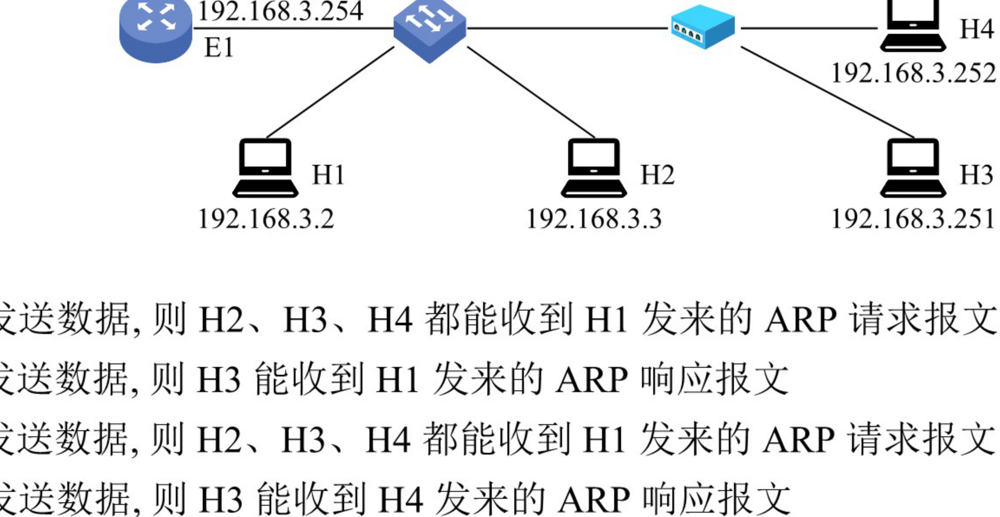
- A. 若 H1 向 H3 发送数据，则 H2、H3、H4 都能收到 H1 发来的 ARP 请求报文
- B. 若 H3 向 H1 发送数据，则 H3 能收到 H1 发来的 ARP 响应报文
- C. 若 H1 向 H2 发送数据，则 H2、H3、H4 都能收到 H1 发来的 ARP 请求报文
- D. 若 H3 向 H4 发送数据，则 H3 能收到 H4 发来的 ARP 响应报文
答案与解析
答案：B
解析：H3 向 H1 发送数据：① H3 用目的 IP 地址、子网掩码逐位"与"，192.168.3.2 & 255.255.255.128 = 192.168.3.0，因为与 H3 自身的网络前缀不同，所以判定 H3 和 H1 不属于同一个网络。② H3 使用 ARP 获取默认网关 E1 的 MAC 地址，并将发往 H1 的 IP 数据报封装成 MAC 帧（H3 判定和 H1 不属于同一个网络，因此目的 MAC 地址是默认网关 E1），该帧经过集线器、交换机的转发，最终被默认网关 E1 接收（H1 收不到这个帧），路由器不再向入口 E1 转发 IP 数据报。综上，H3 不会收到 H1 发来的 ARP 响应报文（H1 也不会向 H3 直接发送 ARP 请求），选项 B 错误。读者可尝试分析其他选项的通信过程。
第 67 题单选
可以动态为主机配置 IP 地址的协议是（ ）
- A. ARP
- B. RARP
- C. DHCP
- D. NAT
答案与解析
答案：C
解析：DHCP 提供了一种机制，使得使用 DHCP 可自动获得 IP 的配置信息而无须手工干预。
第 68 题单选
若某路由器收到一个 TTL 值为 1 的 IP 数据报，则路由器的操作是（ ）
- A. 转发该 IP 数据报
- B. 仅仅丢弃该 IP 数据报
- C. 丢弃该 IP 数据报并向源主机发送类型为终点不可达的 ICMP 差错报告报文
- D. 丢弃该 IP 数据报并向源主机发送类型为时间超过的 ICMP 差错报告报文
答案与解析
答案：D
解析：若路由器收到一个 TTL 值为 1 的 IP 数据报，则它先将 TTL 值减 1，然后判断是否为 0。若为 0，则丢弃该 IP 数据报并向源主机发送类型为时间超过的 ICMP 差错报告报文。
第 69 题单选
下列关于 ICMP 报文的说法中，错误的是（ ）
- A. ICMP 报文封装在数据链路层帧中发送
- B. ICMP 报文可以用于报告 IP 数据报发送错误
- C. ICMP 报文封装在 IP 数据报中发送
- D. 对于已经携带 ICMP 差错报文的分组，不再产生 ICMP 差错报文
答案与解析
答案：A
解析：ICMP 属于网络层协议，ICMP 报文被封装在 IP 数据报中发送，但 ICMP 不是高层协议，A 错误、C 正确。B、D 均为 ICMP 差错报文的正确规则。
第 70 题单选
下列关于 ICMP 差错报文的描述中，错误的是（ ）
- A. ICMP 报文分为差错报告报文和询问报文两类
- B. 对于已经分片的分组，只对第一个分片产生 ICMP 差错报文
- C. PING 使用了 ICMP 差错报文
- D. 对于多播的分组，不产生 ICMP 差错报文
答案与解析
答案：C
解析：PING 命令使用了 ICMP 的询问报文中的回送请求和回答报文，而非差错报文，C 错误。A、B、D 均为正确描述。
第 71 题单选 · 2010 统考真题
某网络的 IP 地址空间为 192.168.5.0/24，采用定长子网划分，子网掩码为 255.255.255.248，则该网络中的最大子网个数、每个子网内的最大可分配地址个数分别是（ ）
- A. 32, 8
- B. 32, 6
- C. 8, 32
- D. 8, 30
答案与解析
答案：B
解析：因为该网络的 IP 地址为 192.168.5.0/24，所以网络号为前 24 位，后 8 位为子网号 + 主机号。子网掩码为 255.255.255.248，第 4 个字节 248 转换成二进制为 11111000，因此后 8 位中，前 5 位用于子网号，在 CIDR 中可以表示 \(2^5 = 32\) 个子网；后 3 位用于主机号，除去全 0 和全 1 的情况，可以表示 \(2^3 - 2 = 6\) 台主机地址。
第 72 题单选 · 2010 统考真题
若路由器 R 因为拥塞丢弃 IP 分组，则此时 R 可向发出该 IP 分组的源主机发送的 ICMP 报文类型是（ ）
- A. 路由重定向
- B. 目的不可达
- C. 源点抑制
- D. 超时
答案与解析
答案：C
解析：ICMP 差错报告报文有 5 种：终点不可达、源点抑制、时间超过、参数问题、改变路由。其中源点抑制是指当路由器或主机因拥塞而丢弃数据报时，向源点发送源点抑制报文，使源点知道应当把数据报的发送速率放慢。注意，最新的 ICMP 标准已不再使用源点抑制报文。
第 73 题单选 · 2011 统考真题
在子网 192.168.4.0/30 中，能接收目的地址为 192.168.4.3 的 IP 分组的最大主机数是（ ）
- A. 0
- B. 1
- C. 2
- D. 4
答案与解析
答案：C
解析：首先分析 192.168.4.0/30 这个网络，主机号占 2 位，地址范围为 192.168.4.0～192.168.4.3，主机号全 1 时是广播地址（192.168.4.3）、全 0 时是本网络地址，因此可容纳 \(4 - 2 = 2\) 台主机。目的地址为 192.168.4.3 即本子网的广播地址，该子网内的所有主机都能接收，故最大主机数为 2。
第 74 题单选 · 2011 统考真题
某网络拓扑如下图所示，路由器 R1 只有到达子网 192.168.1.0/24 的路由。为使 R1 可以将 IP 分组正确地路由到图中的所有子网，在 R1 中需要增加的一条路由（目的网络，子网掩码，下一跳）是（ ）
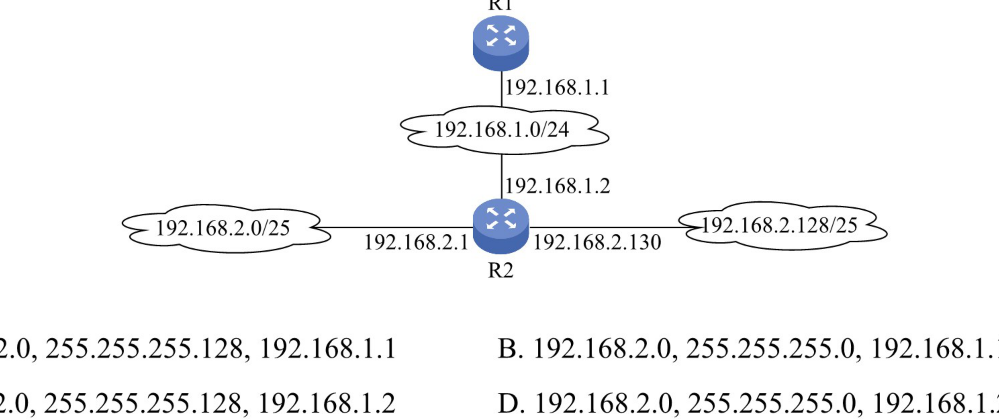
- A. 192.168.2.0, 255.255.255.128, 192.168.1.1
- B. 192.168.2.0, 255.255.255.0, 192.168.1.1
- C. 192.168.2.0, 255.255.255.128, 192.168.1.2
- D. 192.168.2.0, 255.255.255.0, 192.168.1.2
答案与解析
答案：D
解析：要使 R1 能正确地将分组路由到所有子网，R1 中需要有到 192.168.2.0/25 和 192.168.2.128/25 的路由，分别转换成二进制如下：
192.168.2.0：11000000 10101000 00000010 00000000
192.168.2.128：11000000 10101000 00000010 10000000
前 24 位都相同，于是可以聚合成超网 192.168.2.0/24，子网掩码为前 24 位，即 255.255.255.0。下一跳是与 R1 直接相连的 R2 的地址，因此是 192.168.1.2。
第 75 题单选 · 2012 统考真题
某主机的 IP 地址为 180.80.77.55，子网掩码为 255.255.252.0。若该主机向其所在子网发送广播分组，则目的地址可以是（ ）
- A. 180.80.76.0
- B. 180.80.76.255
- C. 180.80.77.255
- D. 180.80.79.255
答案与解析
答案：D
解析：子网掩码的第 3 个字节为 11111100，可知前 22 位为子网号、后 10 位为主机号。IP 地址的第 3 个字节为 010011101（下划线为子网号的一部分），将主机号（后 10 位）全部置为 1，可以得到广播地址为 180.80.79.255。
第 76 题单选 · 2012 统考真题
ARP 的功能是（ ）
- A. 根据 IP 地址查询 MAC 地址
- B. 根据 MAC 地址查询 IP 地址
- C. 根据域名查询 IP 地址
- D. 根据 IP 地址查询域名
答案与解析
答案：A
解析：在实际网络的数据链路层上传送数据时，最终必须使用硬件地址，ARP 将网络层的 IP 地址解析为数据链路层的 MAC 地址。
第 77 题单选 · 2012 统考真题
在 TCP/IP 体系结构中，直接为 ICMP 提供服务的协议是（ ）
- A. PPP
- B. IP
- C. UDP
- D. TCP
答案与解析
答案：B
解析：ICMP 报文作为数据字段封装在 IP 分组中，因此 IP 直接为 ICMP 提供服务。UDP 和 TCP 都是传输层协议，为应用层提供服务。PPP 是数据链路层协议，为网络层提供服务。
第 78 题单选 · 2015 统考真题
某路由器的路由表如下所示：
| 目的网络 | 下一跳 | 接口 |
|---|---|---|
| 169.96.40.0/23 | 176.1.1.1 | S1 |
| 169.96.40.0/25 | 176.2.2.2 | S2 |
| 169.96.40.0/27 | 176.3.3.3 | S3 |
| 0.0.0.0/0 | 176.4.4.4 | S4 |
若路由器收到一个目的地址为 169.96.40.5 的 IP 分组，则转发该 IP 分组的接口是（ ）
- A. S1
- B. S2
- C. S3
- D. S4
答案与解析
答案：C
解析：根据"最长前缀匹配原则"，169.96.40.5 与 169.96.40.0 的前 27 位匹配最长，因此选 C。选项 D 为默认路由，只有当前面的所有目的网络都不能和分组的目的 IP 地址匹配时才使用。
第 79 题单选 · 2016 统考真题
如下图所示，假设 H1 与 H2 的默认网关和子网掩码均分别配置为 192.168.3.1 和 255.255.255.128，H3 和 H4 的默认网关和子网掩码均分别配置为 192.168.3.254 和 255.255.255.128，则下列现象中可能发生的是（ ）
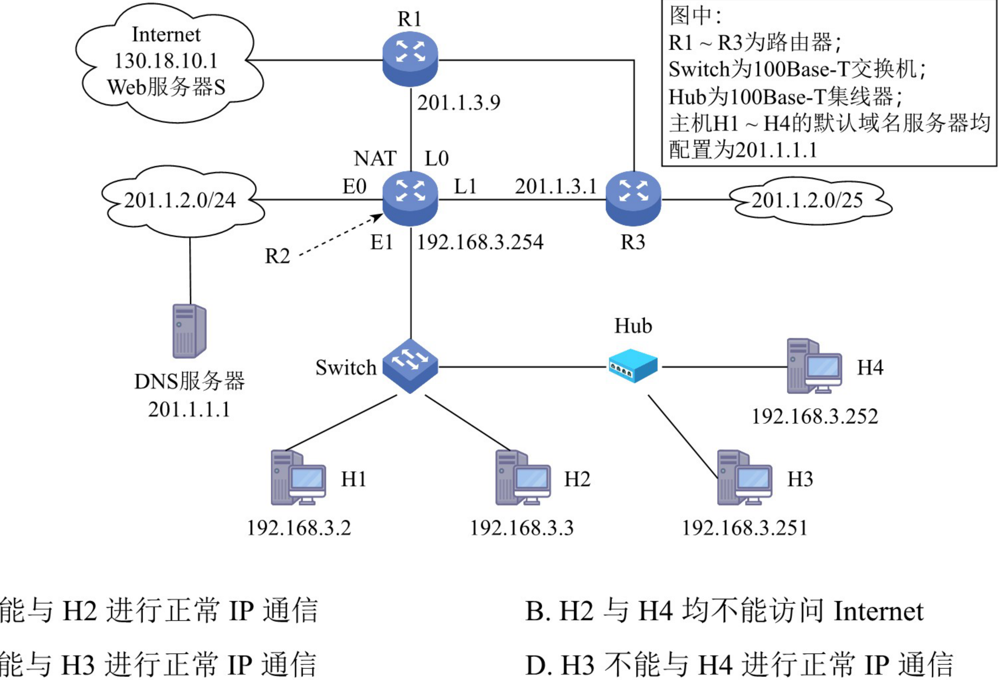
- A. H1 不能与 H2 进行正常 IP 通信
- B. H2 与 H4 均不能访问 Internet
- C. H1 不能与 H3 进行正常 IP 通信
- D. H3 不能与 H4 进行正常 IP 通信
答案与解析
答案：C
解析：从子网掩码可知 H1 和 H2 处于同一网络，H3 和 H4 处于同一网络，因此 H1 和 H2、H3 和 H4 分别可以进行正常的 IP 通信。H1/H2 与 H3/H4 处于不同的网络，因此需要通过路由器才能进行正常的 IP 通信。当 H1 向 H3 发送 IP 分组时，H1 用目的 IP 地址、子网掩码逐位"与"，与 H1 自身的网络前缀不同，于是判定 H3 与 H1 属于不同的网络，需要将该 IP 分组发送到默认网关，而 H1 配置的默认网关为 192.168.3.1，但 R2 的 E1 接口的 IP 地址为 192.168.3.254，因此 H1 不能与 H3 进行正常的 IP 通信。注意，即使 H1 的默认网关配置正确，但因为路由器不会从分组入口进行转发，所以 H1 和 H3 也无法进行正常的 IP 通信。H2 的默认网关为 192.168.3.1，因此 H2 也不能访问 Internet；H4 的默认网关为 192.168.3.254，因此 H4 可以正常访问 Internet。
第 80 题单选 · 2016 统考真题
在上题的图中，假设连接 R1、R2 和 R3 之间的点对点链路使用地址 201.1.3.x/30，当 H3 访问 Web 服务器 S 时，R2 转发出去的封装 HTTP 请求报文的 IP 分组是源 IP 地址和目的 IP 地址，它们分别是（ ）
- A. 192.168.3.251、130.18.10.1
- B. 192.168.3.251、201.1.3.9
- C. 201.1.3.8、130.18.10.1
- D. 201.1.3.10、130.18.10.1
答案与解析
答案：D
解析：当内网用户向公网发送 IP 分组时，NAT 路由器会更改 IP 分组的源地址，因此下一步就是求 R1 的公网 IP 地址。连接 R1、R2 和 R3 之间的点对点链路使用 201.1.3.x/30 地址，可知该地址块的 IP 地址的后两位为主机号，而主机号全 0 和全 1 的 IP 地址不能分配，因此若已知路由器之间的点对点链路中的一个路由器接口的 IP 地址，就可求出另一路由器接口的 IP 地址。在 R1 和 R2 相连的链路中，已知 R1 端接口的 IP 地址为 201.1.3.9/30，将其后 8 位展开成二进制为 0000 1001，所以可分配给 R2 的 L0 接口的 IP 地址为 201.1.3.10。同理，也可求出 R2 的 L1 接口的 IP 地址为 201.1.3.2。访问 Web 服务器，只能通过 R2 的接口 L0 或 L1 转发，所以经过 R2 转发后，IP 分组的源地址可能为 201.1.3.10 或 201.1.3.2，目的地址为 Web 服务器的 IP 地址 130.18.10.1。
第 81 题单选 · 2017 统考真题
若将网络 21.3.0.0/16 划分为 128 个规模相同的子网，则每个子网可分配的最大 IP 地址个数是（ ）
- A. 254
- B. 256
- C. 510
- D. 512
答案与解析
答案：C
解析：这个网络有 16 位的主机号，平均分成 128 个规模相同的子网，每个子网有 7 位的子网号，9 位的主机号。除去一个网络地址和广播地址，可分配的最大 IP 地址个数是 \(2^9 - 2 = 512 - 2 = 510\)。
第 82 题单选 · 2017 统考真题
下列 IP 地址中，只能作为 IP 分组的源 IP 地址但不能作为目的 IP 地址的是（ ）
- A. 0.0.0.0
- B. 127.0.0.1
- C. 200.10.10.3
- D. 255.255.255.255
答案与解析
答案：A
解析：0.0.0.0/32 可以作为本主机在本网络上的源地址。127.0.0.1 是回送地址，以它为目的 IP 地址的数据将被立即返回本机。200.10.10.3 是 C 类 IP 地址。255.255.255.255 是广播地址。
第 83 题单选 · 2018 统考真题
某路由表中有转发接口相同的 4 条路由表项，其目的网络地址分别为 35.230.32.0/21、35.230.40.0/21、35.230.48.0/21 和 35.230.56.0/21，将该 4 条路由聚合后的目的网络地址为（ ）
- A. 35.230.0.0/19
- B. 35.230.0.0/20
- C. 35.230.32.0/19
- D. 35.230.32.0/20
答案与解析
答案：C
解析：对于此类题目，先分析需要聚合的 IP 地址。观察发现，题中的 4 个路由地址，前 16 位完全相同，不同之处在于第 3 段的 8 位中，将这 8 位展开写成二进制，分别为：32 = 001 00000，40 = 001 01000，48 = 001 10000，56 = 001 11000。观察发现，在 4 个地址的第 3 段中，从前向后最多有 3 位相同，因此这 3 位是能聚合的最大位数。将这些相同的位都保留，将第 3 段第 3 位后的所有位都置 0，就得到了聚合后的 IP 地址：35.230.32.0，其网络前缀为 16+3，即前 19 位，因此聚合后的网络地址为 35.230.32.0/19。
第 84 题单选 · 2018 统考真题
路由器 R 通过以太网交换机 S1 和 S2 连接两个网络，R 的接口、主机 H1 和 H2 的 IP 地址与 MAC 地址如下图所示。若 H1 向 H2 发送一个 IP 分组 P，则 H1 发出的封装 P 的以太网帧的目的 MAC 地址、H2 收到的封装 P 的以太网帧的源 MAC 地址分别是（ ）
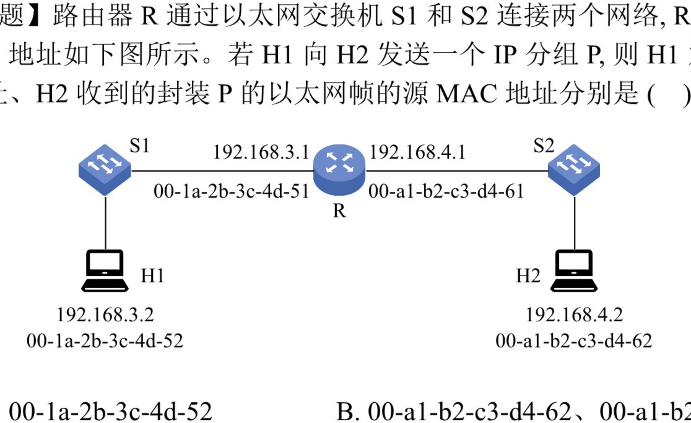
- A. 00-a1-b2-c3-d4-62、00-1a-2b-3c-4d-52
- B. 00-a1-b2-c3-d4-62、00-a1-b2-c3-d4-61
- C. 00-1a-2b-3c-4d-51、00-1a-2b-3c-4d-52
- D. 00-1a-2b-3c-4d-51、00-a1-b2-c3-d4-61
答案与解析
答案：D
解析：在网络的数据传送中，会经常用到两个地址：MAC 地址和 IP 地址。其中，MAC 地址会随着数据被发往不同的网络而改变，但 IP 地址当且仅当数据在私有网络与外部网络之间传递时才会改变。分组 P 在如题图所示的网络中传递时，首先由主机 H1 将分组发往路由器 R，这时源 MAC 地址为 H1 主机本身的 MAC 地址，即 00-1a-2b-3c-4d-52，目的 MAC 地址为路由器 R 的 MAC 地址，即 00-1a-2b-3c-4d-51。路由器 R 收到分组 P 后，根据分组 P 的目的 IP 地址，得知应当将分组从另一个端口转发出去，于是会给分组 P 更换新的 MAC 地址，此时因为从另外的端口转发出去，所以 P 的新源 MAC 地址变为负责转发的端口 MAC 地址，即 00-a1-b2-c3-d4-61，目的 MAC 地址应为主机 H2 的 MAC 地址，即 00-a1-b2-c3-d4-62。根据分析过程，题目所问的 MAC 地址应为路由器 R 两个端口的 MAC 地址，因此选 D。
第 85 题单选 · 2019 统考真题
若将 101.200.16.0/20 划分为 5 个子网，则可能的最小子网的可分配 IP 地址数是（ ）
- A. 126
- B. 254
- C. 510
- D. 1022
答案与解析
答案：B
解析：网络前缀为 20 位，将 101.200.16.0/20 划分为 5 个子网，为了保证有子网的可分配 IP 地址数尽可能小，即要让其他子网的可分配 IP 地址数尽可能大，不能采用平均划分的方法，而要采用变长的子网划分方法，也就是最大子网用 1 位子网号，第二大子网用 2 位子网号，以此类推。子网 1：101.200.00010000.00000001～101.200.00010111.11111110，地址范围为 101.200.16.1/21～101.200.23.254/21，可分配的 IP 地址数为 2046 个。子网 2：101.200.00011000.00000001～101.200.00011011.11111110，地址范围为 101.200.24.1/22～101.200.27.254/22，可分配的 IP 地址数为 1022 个。子网 3：101.200.000111000.00000001～101.200.000111001.11111110，地址范围为 101.200.28.1/23～101.200.29.254/23，可分配的 IP 地址数为 510 个。子网 4：101.200.000111100.00000001～101.200.000111100.11111110，地址范围为 101.200.30.1/24～101.200.30.254/24，可分配的 IP 地址数为 254 个。子网 5：101.200.000111110.00000001～101.200.000111110.11111110，地址范围为 101.200.31.1/24～101.200.31.254/24，可分配的 IP 地址数为 254 个。综上所述，可能的最小子网的可分配 IP 地址数是 254 个。
第 86 题单选 · 2021 统考真题
现将一个 IP 网络划分为 3 个子网，若其中一个子网是 192.168.9.128/26，则下列网络中，不可能是另外两个子网之一的是（ ）
- A. 192.168.9.0/25
- B. 192.168.9.0/26
- C. 192.168.9.192/26
- D. 192.168.9.192/27
答案与解析
答案：B
解析：划分子网的原则是要求划分出来的子网的 IP 地址空间互不重叠，且原来的 IP 地址空间不遗漏。求解本题最好的方法是代入选项，观察是否可将原 IP 地址空间分割为 3 个互不重叠的子网。根据题意，将 IP 网络划分为 3 个子网，其中一个是 192.168.9.128/26，可简写成 10/26（省略前面相同的 24 位前缀，其中 10 是 128 的二进制 1000 0000 的前两位，因为 26 − 24 = 2）。同理，A 可简写成 0/25；B 可简写成 0/26；C 可简写成 11/26；D 可以简写成 110/27。采用二叉树形式画出这些子网的地址空间：对于 A 和 C，可以组成 0/25、10/26、11/26 这 3 个互不重叠的子网。对于 D，可以组成 10/26、110/27、111/27 这 3 个互不重叠的子网。但对于 B，要想将一个 IP 网络划分为几个互不重叠的子网，3 个是不够的，至少需要划分为 4 个子网：00/26、01/26、10/26、11/26。
第 87 题单选 · 2021 统考真题
若路由器向 MTU = 800B 的链路转发一个总长度为 1580B 的 IP 数据报（首部长度为 20B）时，进行了分片，且每个分片尽可能大，则第 2 个分片的总长度字段和 MF 标志位的值分别是（ ）
- A. 796, 0
- B. 796, 1
- C. 800, 0
- D. 800, 1
答案与解析
答案：B
解析：链路层 MTU = 800B，IP 分组首部长 20B。片偏移以 8 个字节为偏移单位，因此除了最后一个分片，其他每个分片的数据部分长度都是 8B 的整数倍。所以，最大 IP 分片的数据部分长度为 \(\lfloor (800-20)/8 \rfloor \times 8 = 776\)B。在总长度为 1580B 的 IP 数据报中，数据部分占 1560B，\(1560\text{B}/776\text{B} = 2.01\cdots\)，需要分成 3 片。所以第 2 个分片的总长度字段为 \(776 + 20 = 796\)，MF 为 1（表示还有后续的分片）。
第 88 题单选 · 2022 统考真题
若某主机的 IP 地址是 183.80.72.48，子网掩码是 255.255.192.0，则该主机所在网络的网络地址是（ ）
- A. 183.80.0.0
- B. 183.80.64.0
- C. 183.80.72.0
- D. 183.80.192.0
答案与解析
答案：B
解析：主机所在网络的网络地址可以通过主机的 IP 地址和子网掩码逐位"与"得到。子网掩码 255.255.192.0 的二进制前 18 位为 1、后 14 位为 0，把主机 IP 地址的后 14 位变为 0：第 3 个字节 72 = 0100 1000，与 1100 0000 相与得 0100 0000 = 64，得到的结果为 183.80.64.0，即该主机所在网络的网络地址。
第 89 题单选 · 2022 统考真题
下图所示网络中的主机 H 的子网掩码与默认网关分别是（ ）
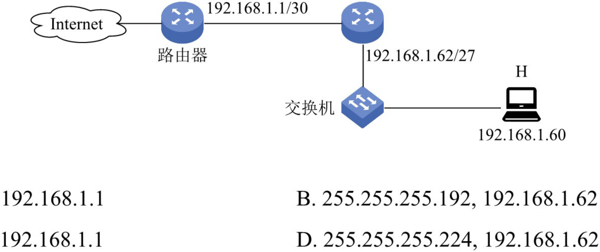
- A. 255.255.255.192, 192.168.1.1
- B. 255.255.255.192, 192.168.1.62
- C. 255.255.255.224, 192.168.1.1
- D. 255.255.255.224, 192.168.1.62
答案与解析
答案：D
解析：默认网关可以理解为到当前主机最近的路由器的端口地址，所以是 192.168.1.62，而该主机的子网掩码和网关的子网掩码也相同，/27 即为 255.255.255.224。
第 90 题单选 · 2023 统考真题
某网络拓扑如下图所示，其中路由器 R2 实现 NAT 功能。若主机 H 向 Internet 发送 1 个 IP 分组，则经过 R2 转发后，该 IP 分组的源 IP 地址是（ ）
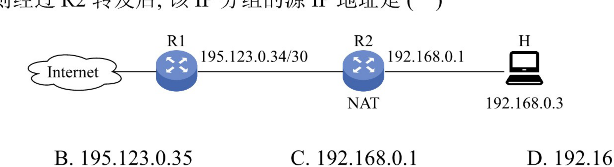
- A. 195.123.0.33
- B. 195.123.0.35
- C. 192.168.0.1
- D. 192.168.0.3
答案与解析
答案：A
解析：H 向 Internet 发送 IP 分组，初始的源 IP 地址为 192.168.0.3，经过 NAT 路由器的转发后，将源 IP 地址从私有 IP 地址改成全球 IP 地址（R2 外部接口的 IP 地址）。因为 R2 外部接口和 195.123.0.34/30 处于同一子网，该子网可分配的 IP 地址范围是 195.123.0.33～195.123.0.34，所以 R2 外部接口的 IP 地址是 195.123.0.33，也就是经过 R2 转发后的源 IP 地址。
第 91 题单选 · 2023 统考真题
主机 168.16.84.24/20 所在子网的最小可分配 IP 地址和最大可分配 IP 地址分别是（ ）
- A. 168.16.80.1, 168.16.84.254
- B. 168.16.80.1, 168.16.95.254
- C. 168.16.84.1, 168.16.84.254
- D. 168.16.84.1, 168.16.95.254
答案与解析
答案：B
解析：网络位数为 20 = 8×2 + 4，子网掩码为 11111111 11111111 11110000 00000000。将它与主机地址 168.16.84.24 进行逐位"与"，得到网络地址为 168.16.80.0/20，该网段共有 \(2^{12} - 2\) 个可供分配的 IP 地址，地址范围是 168.16.80.1～168.16.95.254。
第 92 题单选 · 2024 统考真题
如下图所示的支持 VLAN 划分的交换机，已按端口划分了 3 个 VLAN，部分端口连接主机的 IP 地址和 MAC 地址如图中所示，ARP 表结构为 <IP 地址, MAC 地址, TTL>。下列选项中，不会出现在 H4 的 ARP 表中的是（ ）
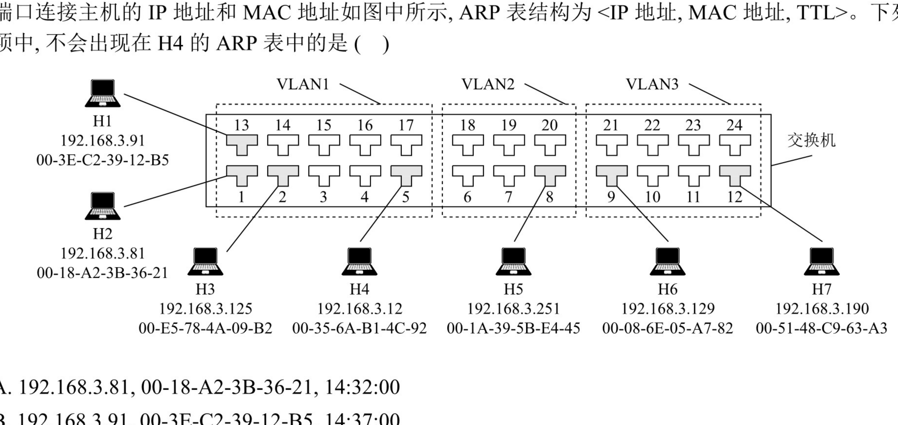
- A. 192.168.3.81, 00-18-A2-3B-36-21, 14:32:00
- B. 192.168.3.91, 00-3E-C2-39-12-B5, 14:37:00
- C. 192.168.3.125, 00-E5-78-4A-09-B2, 14:45:00
- D. 192.168.3.129, 00-08-6E-05-A7-82, 14:52:00
答案与解析
答案：D
解析：ARP 用于解决局域网上的主机或路由器的 IP 地址和 MAC 地址的映射问题，因此 H4 的 ARP 表中只有和 H4 处于同一虚拟局域网上的主机的 IP 地址和 MAC 地址的映射。H4 位于 VLAN1，H6 位于 VLAN3，因此 D 表示的 H6 的 IP 地址与 MAC 地址的映射不应出现在 H4 的 ARP 表中。
第 93 题单选 · 2025 统考真题
一台新接入网络的主机 H 通过 DHCP 服务器动态请求 IP 地址过程中，与 DHCP 服务器交换 DHCP 报文过程如下：DHCP 服务器（IP 地址 192.168.5.1）先向 H 返回 DHCPOFFER 报文（yiaddr: 192.168.5.9），随后 H 向 DHCP 服务器发送 DHCPREQUEST 报文（yiaddr: 192.168.5.9）。封装 DHCPREQUEST 报文的 IP 数据报的目的 IP 地址和源 IP 地址分别是（ ）
- A. 192.168.5.1、0.0.0.0
- B. 192.168.5.1、192.168.5.9
- C. 255.255.255.255、0.0.0.0
- D. 255.255.255.255、192.168.5.9
答案与解析
答案：C
解析：DHCP 采用 UDP 传送，工作分为发现、提供、请求、确认四步。主机 H 此时尚未正式租用到 IP 地址（192.168.5.9 只是服务器在 DHCPOFFER 中提议的地址，H 发出 DHCPREQUEST 表明接受该提议时仍在"请求确认"阶段，自身并无可用的源 IP 地址），因此封装 DHCPREQUEST 报文的 IP 数据报源 IP 地址填 0.0.0.0；同时 H 还不知道 DHCP 服务器的 IP 地址，需以广播方式发送，目的 IP 地址填 255.255.255.255。故选 C。
二、综合题（4.2 IPv4，综合题 1～18）
综合题 14.2 IPv4
一个数据报长度为 4000B（首部长度固定为 20B）。现经过一个网络传送，但此网络能够传送的最大数据长度为 1500B。IP 分片时，首部长度不变。试问应当划分为几个短一些的数据报片？各数据报片的数据字段长度、片段偏移字段和 MF 标志应为何值？
答案与解析
解答：数据报长度为 4000B，有效载荷为 \(4000 - 20 = 3980\)B。网络能传送的最大有效载荷为 \(1500 - 20 = 1480\)B，因此应分为 3 个短些的片，各片的数据字段长度分别为 1480B、1480B 和 \(3980 - 1480 \times 2 = 1020\)B。
片段偏移字段的单位为 8B：\(1480/8 = 185\)，\((1480 \times 2)/8 = 370\)，因此片段偏移字段的值分别为 0、185、370。MF = 1 时，代表后面还有分片；MF = 0 时，代表后面没有分片，因此 MF 字段的值分别为 1、1 和 0（注意，MF = 0 不能确定是独立的数据报，还是分片得来的，只有当 MF = 0 且片段偏移字段 > 0 时，才能确定是分片的最后一个分片）。
综合题 24.2 IPv4
某网络的一台主机产生了一个 IP 数据报，首部长度为 20B，数据部分长度为 2000B。该数据报需要经过两个网络到达目的主机，这两个网络所允许的数据链路层的最大传输单元 (MTU) 分别为 1500B 和 576B。问原 IP 数据报到达目的主机时分成了几个 IP 小报文？每个报文的数据部分长度分别是多少？
答案与解析
解答：在 IP 层下面的每种数据链路层都有自己的帧格式，其中包括帧格式中的数据字段的最大长度，这称为最大传输单元（MTU）。\(1500 - 20 = 1480\)，\(2000 - 1480 = 520\)，所以原 IP 数据报经过第一个网络后分成了两个 IP 小报文，第一个报文的数据部分长度是 1480B，第二个报文的数据部分长度是 520B。
（除最后一个报片外的）所有报片的有效载荷都是 8B 的倍数。\(576 - 20 = 556\)，但 556 不能被 8 整除，所以分片时的数据部分最大只能取 552。第 1 个报文经过第 2 个网络后，\(1480 - 552 \times 2 = 376 < 576\)，变成数据长度分别为 552B、552B、376B 的 3 个 IP 小报文；第 2 个报文 520 < 552，因此不用分片。因此到达目的主机时，原 2000B 的数据被分成数据长度分别为 552B、552B、376B、520B 的 4 个小报文。
综合题 34.2 IPv4
若到达的分组的片偏移值为 100，分组首部中的首部长度字段值为 5，总长度字段值为 100，则数据部分第一个字节的编号是多少？能确定数据部分最后一个字节的编号吗？
答案与解析
解答：分片的片偏移值表示其数据部分首字节在原始分组的数据部分中的相对位置，单位为 8B。首部长度字段以 4B 为单位，总长度字段以字节为单位。题设中，分组的片偏移值为 100，因此其数据部分第一个字节的编号是 \(100 \times 8 = 800\)。因为分组的总长度为 100B，首部长度为 \(4 \times 5 = 20\)B，所以数据部分长度为 80B。因此该分组的数据部分的最后一个字节的编号是 \(800 + 80 - 1 = 879\)。
综合题 44.2 IPv4
在 4 个"/24"地址块中进行最大可能的聚合：212.56.132.0/24、212.56.133.0/24、212.56.134.0/24、212.56.135.0/24。
答案与解析
解答：因为一个 CIDR 地址块中可以包含很多地址，所以路由表中就利用 CIDR 地址块来查找目的网络，这种地址的聚合常称为路由聚合。
本题已知有 212.56.132.0/24、212.56.133.0/24、212.56.134.0/24、212.56.135.0/24 地址块，可知第 3 个字节前 6 位相同，因此共同前缀为 \(8 + 8 + 6 = 22\) 位。因为这 4 个地址块的第 1、2 个字节相同，考虑它们的第 3 个字节：\(132 = (10000100)_2\)，\(133 = (10000101)_2\)，\(134 = (10000110)_2\)，\(135 = (1000 0111)_2\)，所以共同的前缀有 22 位，即 11010100 00111000 100001，聚合的 CIDR 地址块是 212.56.132.0/22。
综合题 54.2 IPv4
现有一公司需要创建内部网络，该公司包括工程技术部、市场部、售后部、财务部和办公室 5 个部门，每个部门有 20～30 台计算机。试问：(1) 若要将几个部门从网络上分开，且分配给该公司使用的地址为一个 C 类地址，网络地址为 192.168.161.0，则如何划分网络？可以将几个部门分开吗？(2) 确定各部门的网络地址和子网掩码，并写出分配给每个部门网络中的主机 IP 地址范围。
答案与解析
解答：
1) 可以采用划分子网的方法对该公司的网络进行划分。因为该公司包括 5 个部门，所以共需要划分为 5 个子网。
2) 已知网络地址 192.168.161.0 是一个 C 类地址，所需的子网数为 5，每个子网的主机数为 20～30。子网号的比特数为 3，即最多有 \(2^3 = 8\) 个可分配的子网，主机号的比特数为 5，因为主机号不能为全 0 或全 1，所以每个子网最多有 \(2^5 - 2 = 30\) 个可分配的 IP 地址。
5 个部门子网的子网掩码均为 255.255.255.224，各部门的网络地址与部门主机的 IP 地址范围可分配如下：
| 部门 | 部门网络地址 | 主机 IP 地址范围 |
|---|---|---|
| 工程技术部 | 192.168.161.0 | 192.168.161.1～192.168.161.30 |
| 市场部 | 192.168.161.32 | 192.168.161.33～192.168.161.62 |
| 售后部 | 192.168.161.64 | 192.168.161.65～192.168.161.94 |
| 财务部 | 192.168.161.96 | 192.168.161.97～192.168.161.126 |
| 办公室 | 192.168.161.128 | 192.168.161.129～192.168.161.158 |
综合题 64.2 IPv4
某路由器具有下表所示的路由表项。
| 网络前缀 | 下一跳 |
|---|---|
| 131.128.56.0/24 | A |
| 131.128.55.32/28 | B |
| 131.128.55.32/30 | C |
| 131.128.0.0/16 | D |
(1) 假设路由器收到两个分组：分组 A 的目的地址为 131.128.55.33，分组 B 的目的地址为 131.128.55.38。确定路由器为这两个分组选择的下一跳，并加以说明。
(2) 在路由表中增加一个路由表项，它使以 131.128.55.33 为目的地址的 IP 分组选择"A"作为下一跳，而不影响其他目的地址的 IP 分组的转发。
(3) 在路由表中增加一个路由表项，使所有目的地址与该路由表中任何路由表项都不匹配的 IP 分组被转发到下一跳"E"。
(4) 将 131.128.56.0/24 划分为 4 个规模尽可能大的等长子网，给出子网掩码及每个子网的可分配地址范围。
答案与解析
解答：
1) 使用 CIDR 时，可能会导致有多个匹配结果，应当从当前匹配结果中选择具有最长网络前缀的路由。下面来一一分析分组 A 与表中这四项的匹配性：
① 131.128.56.0/24 与 131.128.55.33 不匹配，因为前 24 位不同。
② 131.128.55.32/28 与 131.128.55.33 的前 24 位匹配，只看后面 4 位是否匹配，32 转换为二进制为 0010 0000，33 转换为二进制为 0010 0001，匹配，且匹配了 28 位。
③ 131.128.55.32/30 与 131.128.55.33 的前 24 位匹配，只需要看后面 6 位是否匹配，32 转换为二进制为 0010 0000，33 转换为二进制为 0010 0001，匹配，且匹配了 30 位。
④ 131.128.0.0/16 与 131.128.55.33 匹配，且匹配了 16 位。
综上，对于分组 A，第 2、3、4 项都能与之匹配，但根据最长网络前缀匹配原则，应该选择网络前缀为 131.128.55.32/30 的表项进行转发，下一跳路由器为 C。同理，对于分组 B，路由表中第 2、4 项都能与之匹配，但是根据最长网络前缀匹配原则，应该选择第 2 个路由表项转发，下一跳路由器为 B。
2) 即增加 1 条特定主机路由：网络前缀 131.128.55.33/32，下一跳 A。
3) 即增加 1 条默认路由：网络前缀 0.0.0.0/0，下一跳 E。
4) 要划分成 4 个规模尽可能大的子网，需要从主机位中划出 2 位作为子网位（\(2^2 = 4\)，CIDR 广泛使用之后允许子网位可以全 0 和全 1）。子网掩码均为 11111111 11111111 11111111 11000000，即 255.255.255.192。而地址范围中不能包含主机位全 0 或全 1 的地址。
| 子网 | 子网掩码 | 地址范围 |
|---|---|---|
| 131.128.56.0/26 | 255.255.255.192 | 131.128.56.1～131.128.56.62 |
| 131.128.56.64/26 | 255.255.255.192 | 131.128.56.65～131.128.56.126 |
| 131.128.56.128/26 | 255.255.255.192 | 131.128.56.129～131.128.56.190 |
| 131.128.56.192/26 | 255.255.255.192 | 131.128.56.193～131.128.56.254 |
综合题 74.2 IPv4
下表是使用无类别域间路由选择 (CIDR) 的路由选择表，地址字段是用十六进制表示的，试指出具有下列目标地址的 IP 分组将被投递到哪个下一站？
| 网络/掩码长度 | 下一站地 | 网络/掩码长度 | 下一站地 |
|---|---|---|---|
| C4.50.0.0/12 | A | C4.68.0.0/14 | D |
| C4.5E.10.0/20 | B | 80.0.0.0/1 | E |
| C4.60.0.0/12 | C | 40.0.0.0/2 | F |
| 00.0.0.0/2 | G |
(1) C4.5E.13.87 (2) C4.5E.22.09 (3) C3.41.80.02 (4) 5E.43.91.12
答案与解析
解答：
1) 网络号 C4.5E.10.0/20（下一站地是 B）的第 3 个字节可以用二进制表示成 0001 0000。目标地址 C4.5E.13.87 的第 3 个字节可以用二进制表示成 0001 0011，显然取 20 位掩码与网络号 C4.5E.10.0/20 相匹配，所以具有该目标地址的 IP 分组将被投递到下一站地 B。
2) 网络号 C4.50.0.0/12（下一站地是 A）的第 2 个字节可以用二进制表示成 0101 0000。目标地址 C4.5E.22.09 的第 2 个字节可以用二进制表示成 0101 1110，显然取 12 位掩码与网络号 C4.50.0.0/12 相匹配，所以具有该目的地址的 IP 分组将被投递到下一站地 A。
3) 网络号 80.0.0.0/1（下一站地是 E）的第 1 个字节可以用二进制表示成 1000 0000。目标地址 C3.41.80.02 的第 1 个字节可以用二进制表示成 1100 0011，显然取 1 位掩码与网络号 80.0.0.0/1 相匹配，所以具有该目标地址的 IP 分组将被投递到下一站地 E。
4) 网络号 40.0.0.0/2（下一站地是 F）的第 1 个字节可以用二进制表示成 0100 0000。目标地址 5E.43.91.12 的第 1 个字节可以用二进制表示成 0101 1110，显然取 2 位掩码与网络号 40.0.0.0/2 相匹配，所以具有该目标地址的 IP 分组将被投递到下一站地 F。
综合题 84.2 IPv4
一个自治系统有 5 个局域网，如下图所示，LAN2 至 LAN5 上的主机数分别为 91、150、3 和 15，该自治系统分配到的 IP 地址块为 30.138.118/23，试给出每个局域网的地址块（包括前缀）。
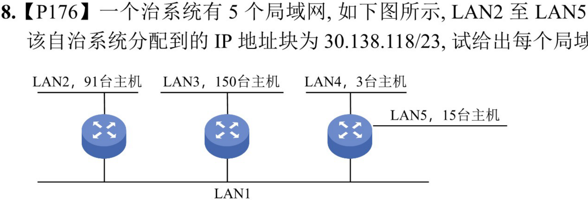
答案与解析
解答：分配网络前缀应先分配地址数较多的前缀。已知该自治系统分配到的 IP 地址块为 30.138.118/23（注意：① 一个路由器端口也需要占用一个 IP 地址；② 子网划分的答案不唯一）。
LAN3：主机数为 150，因为 \((2^7-2) < 150 + 1 < (2^8-2)\)，所以主机号为 8 比特，网络前缀为 24。取第 24 位为 0，分配地址块 30.138.118.0/24。
LAN2：主机数 91，因为 \((2^6-2) < 91 + 1 < (2^7-2)\)，所以主机号为 7 比特，网络前缀为 25。取第 24、25 位为 10，分配地址块 30.138.119.0/25。
LAN5：主机数为 15，因为 \((2^4-2) < 15 + 1 < (2^5-2)\)，所以主机号为 5 比特，网络前缀 27。取第 24、25、26、27 位为 1110，分配地址块 30.138.119.192/27。
LAN1：共有 3 个路由器，再加上一个网关地址，至少需要 4 个 IP 地址。因为 \((2^2-2) < 3 + 1 < (2^3-2)\)，所以主机号为 3 比特，网络前缀为 29。取第 24、25、26、27、28、29 位为 111101，分配地址块 30.138.119.232/29。
LAN4：主机数为 3，因为 \((2^2-2) < 3 + 1 < (2^3-2)\)，所以主机号为 3 比特，网络前缀 29。取第 24、25、26、27、28、29 位为 111110，分配地址块 30.138.119.240/29。
综合题 94.2 IPv4
某个网络地址块 192.168.75.0 中有 5 台主机 A、B、C、D 和 E，主机 A 的 IP 地址为 192.168.75.18，主机 B 的 IP 地址为 192.168.75.146，主机 C 的 IP 地址为 192.168.75.158，主机 D 的 IP 地址为 192.168.75.161，主机 E 的 IP 地址为 192.168.75.173，共同的子网掩码是 255.255.255.240。请回答：(1) 5 台主机 A、B、C、D、E 分属几个网段？哪些主机位于同一网段？主机 D 的网络地址为多少？(2) 若要加入第 6 台主机 F，使它能与主机 A 属于同一网段，则其 IP 地址范围是多少？(3) 若在网络中另加入一台主机，IP 地址为 192.168.75.164，它的广播地址是多少？哪些主机能够收到？
答案与解析
解答：
1) 共同的子网掩码为 255.255.255.240，表示前 28 位为网络号，同一网段内的 IP 地址具有相同的网络号。主机 A 的网络号为 192.168.75.16；主机 B 的网络号为 192.168.75.144；主机 C 的网络号为 192.168.75.144；主机 D 的网络号为 192.168.75.160；主机 E 的网络号为 192.168.75.160。因此 5 台主机 A、B、C、D、E 分属 3 个网段，主机 B 和 C 在一个网段，主机 D 和 E 在一个网段，主机 A 在一个网段。主机 D 的网络号为 192.168.75.160。
2) 主机 F 与主机 A 同在一个网段，所以主机 F 所在的网段为 192.168.75.16，第 4 个字节 16 的二进制表示为 0001 0000，最后边的 4 位为主机位，去掉全 0 和全 1，则其 IP 地址范围为 192.168.75.17～192.168.75.30，并且不能为 192.168.75.18。
3) 因为 164 的二进制为 1010 0100，将最右边的 4 位全置 1，即 1010 1111，则广播地址为 192.168.75.175。主机 D 和主机 E 可以收到。
综合题 104.2 IPv4
一个 IPv4 分组到一个节点时，其首部信息（以十六进制表示）为：0x45 00 00 54 00 03 58 50 20 06 FF F0 7C 4E 03 02 B4 0E 0F 02。IP 分组的首部格式见下图。请回答：(1) 分组的源 IP 地址和目的 IP 地址各是什么（点分十进制表示法）？(2) 该分组数据部分的长度是多少？(3) 该分组是否已经分片？若有分片，则偏移量是多少？
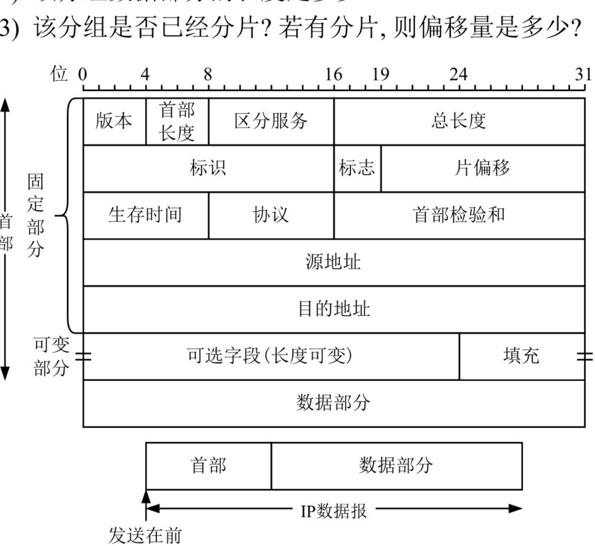
答案与解析
解答：根据 IPv4 首部格式来解析首部各个字段的含义：
1) 由首部格式可知，源 IP 地址为 IP 首部的第 13、14、15、16 个字节，即 7C 4E 03 02，转换为点分十进制表示可得源 IP 地址为 124.78.3.2。目的 IP 地址为 IP 首部的第 17、18、19、20 个字节，即 B4 0E 0F 02，转换为点分十进制表示可以得到目的 IP 地址为 180.14.15.2。
2) 分组总长度是 IP 首部的第 3、4 个字节，即 00 54，转换为十进制得该分组总长度为 84，单位为字节。而首部长度是 IP 首部的第 5～8 位，值为 5，单位为 4B，因此首部长度为 \(4\text{B} \times 5 = 20\)B。数据部分长度 = 总长度 − 首部长度 = \(84 - 20 = 64\)B。
3) 该分组首部的片偏移字段为第 7、8 个字节（除去第 7 个字节的前 3 位），不等于 0，而是二进制值 1 1000 0101 0000，即十进制数 6224，单位是 8B。另外，分组的标志字段为第 7 个字节的前 3 位，即 010，中间位 DF = 1 表示不可分片，最后位 MF = 0 表示后面没有分片。
综合题 114.2 IPv4
主机 A 的 IP 地址为 218.207.61.211，MAC 地址为 00:1d:72:98:1d:fc。A 收到一个帧，该帧的前 64 个字节的十六进制形式和 ASCII 形式如下图所示。
| 地址 | 十六进制（前 8 字节） | 十六进制（后 8 字节） | ||||||||||||||
|---|---|---|---|---|---|---|---|---|---|---|---|---|---|---|---|---|
| 0000 | 00 | 1d | 72 | 98 | 1d | fc | 00 | 00 | 5e | 00 | 01 | 01 | 88 | 64 | 11 | 00 |
| 0010 | 75 | 89 | 01 | 92 | 00 | 21 | 45 | 00 | 01 | 90 | f9 | bf | 40 | 00 | 33 | 06 |
| 0020 | f3 | 15 | da | c7 | 66 | 28 | da | cf | 3d | d3 | 00 | 50 | c4 | 8f | dc | a6 |
| 0030 | a2 | 96 | 23 | 4c | 44 | 69 | 50 | 18 | 00 | 0f | 76 | 3d | 00 | 00 | 90 | b5 |
IP 分组的首部格式见图 4.5，以太网帧的格式参见 3.6.2 节。问：(1) 主机 A 所在网络的网关路由器的相应端口的 MAC 地址是多少？(2) 该 IP 分组所携带的数据量为多少字节？(3) 若该分组需要被路由器转发到一条 MTU 为 380B 的链路上，则路由器将做何种操作？
答案与解析
解答：
1) 根据接收到的帧，找出源 IP 地址为 da c7 66 28，表示成十进制为 218.199.102.40，是一个 C 类 IP 地址，与 A 的 IP 地址 218.207.61.211 不在同一个网络中，所以需经过路由器转发。MAC 地址只具有本地意义（ARP 也只能工作在同一局域网中）。该帧为 A 收到的帧，因此目的 MAC 地址为 A 的 MAC 地址，源 MAC 地址为网关路由器端口的 MAC 地址（若为 A 发出的帧，则目的 MAC 地址为默认网关的 MAC 地址）。首先找到目的 MAC 地址 00:1d:72:98:1d:fc 的位置（在帧中的位置 1 标出），根据以太网帧的结构，目的 MAC 地址后面紧邻的是源 MAC 地址，因此源 MAC 地址为 00:00:5e:00:01:01。
2) 要求得 IP 分组所携带的数据量，需要知道首部长度和总长度。218.207.61.211 表示成十六进制是 da.cf.3d.d3，并且作为分组中的目的 IP 地址。在图中确定目的 IP 地址的位置（位置 2），再根据 IP 首部的结构，分别从目的 IP 的位置向前数 14 和 16 个字节，即可找到总长度和首部长度字段的位置。但首部长度字段所在的字节值为 0x45，首部长度字段只有 4 位，前 4 位是版本号，因此首部字段的值为 5，单位为 4B，所以首部长度为 20B。总长度字段值为 0x0190，十进制为 400B。因此分组携带的数据长度为 380B。
3) 因为整个 IP 分组的长度是 400B，大于输出链路 MTU（380B）。这时需要考虑分片，但是否能够分片还得看 IP 首部中的标志位。IP 首部中的标志字段占 3 位，从前到后依次为保留位、DF、MF。根据 IP 首部结构找到标志字段所在的字节，其值为 0x40，二进制表示为 01000000，于是 DF = 1，不能对该 IP 分组进行分片。此时，路由器应进行的操作是丢弃该分组，并用 ICMP 差错报文向源主机报告。
综合题 124.2 IPv4
某网络拓扑见下图，R1 和 R2 为路由器，R2 实现了 NAT 功能，Switch 为交换机，Hub 为集线器，Web 服务器 S、主机 H1～H4 和路由器各接口的 IP 地址配置见图中标注。回答下列问题：(1) R2 的 E1 接口的 IP 地址是什么？H1 配置的默认网关是什么？(2) 假设 H1 和 R2 的 ARP 缓存初始均为空，交换机的交换表初始也为空，H1 向 H3 发送一个 IP 分组 A，H3 收到 A 后向 H1 发送一个响应 IP 分组 B，则能收到封装 A 的以太网帧的主机有哪些？能收到封装 B 的以太网帧的主机有哪些？(3) H1 发出的封装有 HTTP 请求报文的 IP 分组 C，首部中的源 IP 地址和目的 IP 地址分别是什么？当 C 从 R2 转发出去时，首部中的源 IP 地址和目的 IP 地址分别是什么？
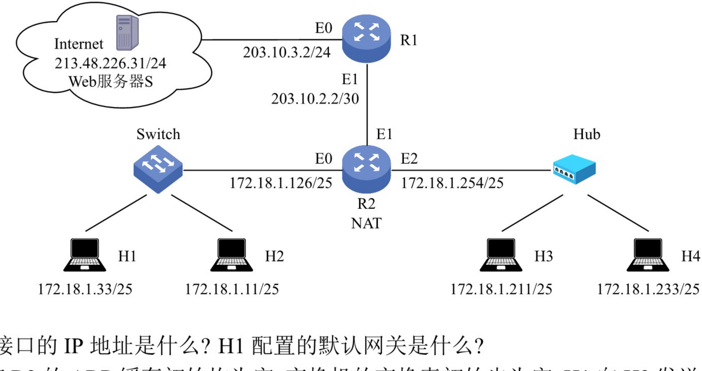
答案与解析
解答：
1) 网络前缀/30，主机号不能为全 0 或全 1，可求出 R2 接口 E1 的 IP 地址为 203.10.2.1。H1 配置的默认网关应是 R2 接口 E0 的 IP 地址 172.18.1.126。
2) 在 H1→R2→H3 传送 IP 分组的过程中，分别使用了两次 ARP，交换机进行了相关的自学习，还需要考虑 Hub 的广播特性。H1 给 H3 发送一个 IP 分组 A，能收到封装 A 的以太网帧的主机有 H3 和 H4，其中 H4 发现帧的目的 MAC 地址与自身的不同且不是广播地址，于是丢弃该帧，而 H3 发现帧的目的 MAC 地址与自身的相同，于是接收该帧。H3 给 H1 发送一个 IP 分组 B，能收到封装 B 的以太网帧的主机有 H4 和 H1，其中 H4 发现帧的目的 MAC 地址与自身的不同且不是广播地址，于是丢弃该帧，而 H1 接收该帧。
3) 当 H1 发出 C 时，首部中的源 IP 地址为 H1 的 IP 地址 172.18.1.33，目的 IP 地址为 Web 服务器 S 的 IP 地址 213.48.226.31。当 C 从 R2 转发出去时，首部中的源 IP 地址为 R2 接口 E1 的 IP 地址 203.10.2.1，目的 IP 地址为 Web 服务器 S 的 IP 地址 213.48.226.31。
综合题 134.2 IPv4 · 2009 统考真题
网络拓扑图如下图所示，路由器 R1 通过接口 E1、E2 分别连接局域网 1、局域网 2，通过接口 L0 连接路由器 R2，并通过路由器 R2 连接域名服务器与互联网。R1 的 L0 接口的 IP 地址是 202.118.2.1；R2 的 L0 接口的 IP 地址是 202.118.2.2，L1 接口的 IP 地址是 130.11.120.1，E0 接口的 IP 地址是 202.118.3.1；域名服务器的 IP 地址是 202.118.3.2。R1 和 R2 的路由表结构为：目的网络 IP 地址 | 子网掩码 | 下一跳 IP 地址 | 接口。
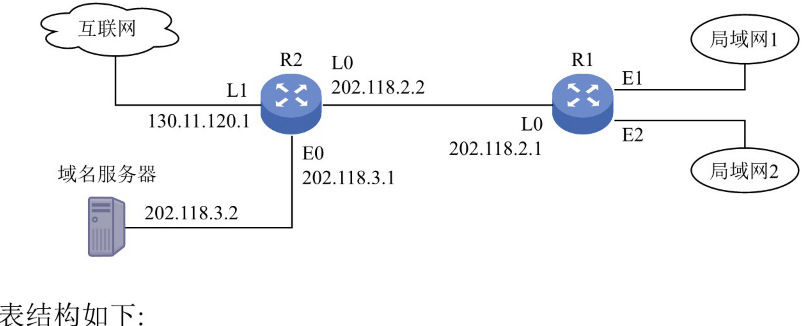
(1) 将 IP 地址空间 202.118.1.0/24 划分为两个子网，分别分配给局域网 1 和局域网 2，每个局域网需分配的 IP 地址数不少于 120 个。请给出子网划分结果，说明理由或给出必要的计算过程。(2) 给出 R1 的路由表，使其明确包括到局域网 1 的路由、局域网 2 的路由、域名服务器的主机路由和互联网的路由。(3) 请采用路由聚合技术，给出 R2 到局域网 1 和局域网 2 的路由。
答案与解析
解答：
1) 子网号可以全 0 或全 1，但主机号不能全 0 或全 1。因此，若将 IP 地址空间 202.118.1.0/24 划分为 2 个子网，且每个局域网需分配的 IP 地址个数不少于 120 个，则子网号至少要占用 1 位。由 \(2^6 - 2 < 120 < 2^7 - 2\) 可知，主机号至少要占用 7 位。因为源 IP 地址空间的网络前缀为 24 位，所以主机号位数 + 子网号位数 = 8。综上可得主机号位数为 7，子网号位数为 1。因此子网的划分结果为：子网 1：子网地址为 202.118.1.0，子网掩码为 255.255.255.128（或子网 1：202.118.1.0/25）；子网 2：子网地址为 202.118.1.128，子网掩码为 255.255.255.128（或子网 2：202.118.1.128/25）。地址分配方案：子网 1 分配给局域网 1，子网 2 分配给局域网 2；或者子网 1 分配给局域网 2，子网 2 分配给局域网 1。
2) 因为局域网 1 和局域网 2 分别与路由器 R1 的 E1、E2 接口直接相连，所以在 R1 的路由表中，目的网络为局域网 1 的转发路径是直接通过接口 E1 转发的，目的网络为局域网 2 的转发路径是直接通过接口 E2 转发的。因为局域网 1、2 的网络前缀均为 25 位，所以它们的子网掩码均为 255.255.255.128。域名服务器是一台特定的主机，它指明了其 IP 地址，因此设定 1 条特定主机路由，该表项的子网掩码为 255.255.255.255（只有和全 1 的子网掩码相与时，才能保证和目的 IP 地址一样，从而选择该特定路由）。对应的下一跳地址是 202.118.2.2，转发接口是 L0。R1 到互联网的路由实质上相当于一个默认路由（当某一目的 IP 地址与路由表中其他任何表项都不匹配时，则匹配该默认路由。互联网包括了无数的网络集合，不可能在路由表项中一一列出，因此只能采用默认路由的方式），默认路由一般写为 0/0，即目的地址为 0.0.0.0，子网掩码为 0.0.0.0，对应的下一跳地址是 202.118.2.2，转发接口是 L0。综上可得到路由器 R1 的路由表如下（子网 1 分配给局域网 1，子网 2 分配给局域网 2）：
| 目的网络 IP 地址 | 子网掩码 | 下一跳 IP 地址 | 接口 |
|---|---|---|---|
| 202.118.1.0 | 255.255.255.128 | — | E1 |
| 202.118.1.128 | 255.255.255.128 | — | E2 |
| 202.118.3.2 | 255.255.255.255 | 202.118.2.2 | L0 |
| 0.0.0.0 | 0.0.0.0 | 202.118.2.2 | L0 |
3) 局域网 1 和局域网 2 的地址可以聚合为 202.118.1.0/24，而对于路由器 R2 来说，通往局域网 1 和局域网 2 的转发路径都是从 L0 接口转发的，因此采用路由聚合技术后，路由器 R2 到局域网 1 和局域网 2 的路由如下：
| 目的网络 IP 地址 | 子网掩码 | 下一跳 IP 地址 | 接口 |
|---|---|---|---|
| 202.118.1.0 | 255.255.255.0 | 202.118.2.1 | L0 |
综合题 144.2 IPv4 · 2015 统考真题
某网络拓扑如下图所示，其中路由器内网接口、DHCP 服务器、WWW 服务器与主机 1 均采用静态 IP 地址配置，相关地址信息见图中标注；主机 2～N 通过 DHCP 服务器动态获取 IP 地址等配置信息。回答下列问题：(1) DHCP 服务器可为主机 2～N 动态分配 IP 地址的最大范围是什么？主机 2 使用 DHCP 获取 IP 地址的过程中，发送的封装 DHCP Discover 报文的 IP 分组的源 IP 地址和目的 IP 地址分别是多少？(2) 若主机 2 的 ARP 表为空，则该主机访问 Internet 时，发出的第一个以太网帧的目的 MAC 地址是什么？封装主机 2 发往 Internet 的 IP 分组的以太网帧的目的 MAC 地址是什么？(3) 若主机 1 的子网掩码和默认网关分别配置为 255.255.255.0 和 111.123.15.2，则该主机是否能访问 WWW 服务器？是否能访问 Internet？请说明理由。
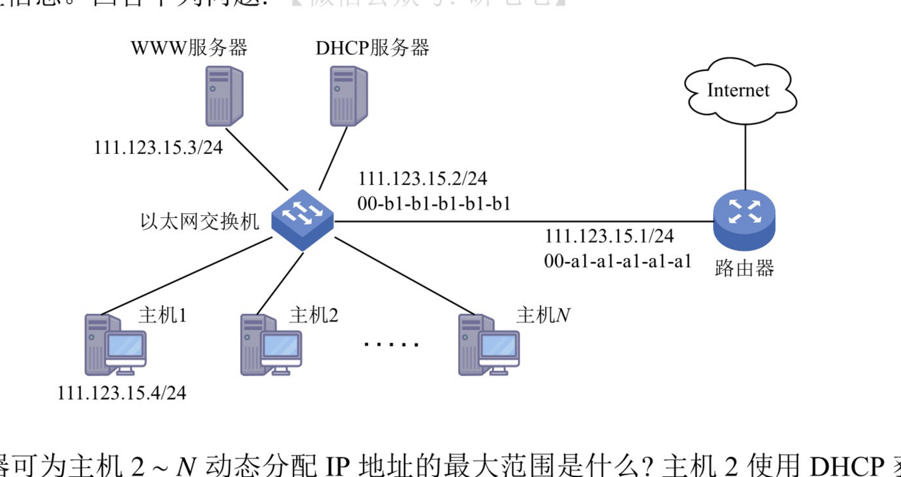
答案与解析
解答：
1) DHCP 服务器可为主机 2～N 动态分配 IP 地址的最大范围是 111.123.15.5～111.123.15.254；主机 2 发送的封装 DHCP Discover 报文的 IP 分组的源 IP 地址和目的 IP 地址分别是 0.0.0.0 和 255.255.255.255。
2) 主机 2 发出的第一个以太网帧的目的 MAC 地址是 ff-ff-ff-ff-ff-ff；封装主机 2 发往 Internet 的 IP 分组的以太网帧的目的 MAC 地址是 00-a1-a1-a1-a1-a1。
3) 主机 1 能访问 WWW 服务器，但不能访问 Internet。因为主机 1 的子网掩码配置正确而默认网关 IP 地址被错误地配置为 111.123.15.2（正确 IP 地址是 111.123.15.1），所以主机 1 可以访问在同一个子网内的 WWW 服务器，但当主机 1 访问 Internet 时，主机 1 发出的 IP 分组会被路由到错误的默认网关（111.123.15.2），从而无法到达目的主机。
综合题 154.2 IPv4 · 2018 统考真题
某公司的网络如下图所示。IP 地址空间 192.168.1.0/24 均分给销售部和技术部两个子网，并已分别为部分主机和路由器接口分配了 IP 地址，销售部子网的 MTU = 1500B，技术部子网的 MTU = 800B。回答下列问题：(1) 销售部子网的广播地址是什么？技术部子网的子网地址是什么？若每台主机仅分配一个 IP 地址，则技术部子网还可以连接多少台主机？(2) 假设主机 192.168.1.1 向主机 192.168.1.208 发送一个总长度为 1500B 的 IP 分组，IP 分组的首部长度为 20B，路由器在通过接口 F1 转发该 IP 分组时进行了分片。若分片时尽可能分为最大片，则一个最大 IP 分片封装数据的字节数是多少？至少需要分为几个分片？每个分片的片偏移量是多少？
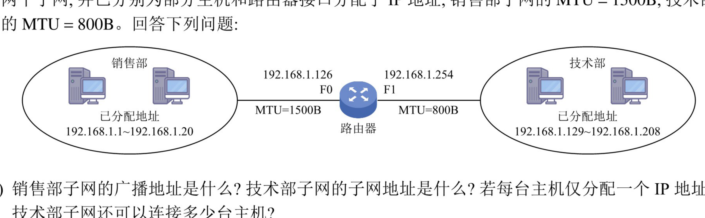
答案与解析
解答：
1) 广播地址是网络地址中主机号全 1 的地址（主机号全 0 的地址代表网络本身）。销售部和技术部均被分配了 192.168.1.0/24 的 IP 地址空间，IP 地址的前 24 位为网络号。于是在后 8 位中划分部门的子网，选择前 1 位作为部门子网的子网号。根据已分配的 IP 地址，销售部子网的子网号为 0，技术部子网的子网号为 1，则技术部的子网地址为 192.168.1.128；销售部的子网地址为 192.168.1.0，广播地址为 192.168.1.127。
每台主机仅分配一个 IP 地址，计算目前还可以分配的主机数，用技术部可以分配的主机数减去已分配的主机数。技术部总共可以分配的计算机主机数为 \(2^7 - 2 = 126\)（减去全 0 和全 1 的主机号）。已经分配了 \(208 - 129 + 1 = 80\) 台，此外还有 1 个 IP 地址（192.168.1.254）分配给了路由器的端口，因此还可以分配 \(126 - 80 - 1 = 45\) 台。
2) 判断分片的大小，需要考虑各个网段的 MTU，而且注意分片的数据长度必须是 8B 的整数倍。由题可知，在技术部子网内，MTU = 800B，IP 分组首部长 20B，最大 IP 分片封装数据的字节数为 \(\lfloor (800 - 20)/8 \rfloor \times 8 = 776\)。至少需要的分片数为 \(\lceil (1500 - 20)/776 \rceil = 2\)。第 1 个分片的偏移量为 0；第 2 个分片的偏移量为 \(776/8 = 97\)。
综合题 164.2 IPv4 · 2020 统考真题
某校园网有两个局域网，通过路由器 R1、R2 和 R3 互联后接入 Internet，S1 和 S2 为以太网交换机。局域网采用静态 IP 地址配置，路由器部分接口以及各主机的 IP 地址如下图所示。假设 NAT 转换表结构为：外网（IP 地址、端口号）| 内网（IP 地址、端口号）。回答下列问题：(1) 为使 H2 和 H3 能够访问 Web 服务器（使用默认端口号），需要进行什么配置？(2) 若 H2 主动访问 Web 服务器时，将 HTTP 请求报文封装到 IP 数据报 P 中发送，则 H2 发送的 P 的源 IP 地址和目的 IP 地址分别是什么？经过 R3 转发后，P 的源 IP 地址和目的 IP 地址分别是什么？经过 R2 转发后，P 的源 IP 地址和目的 IP 地址分别是什么？
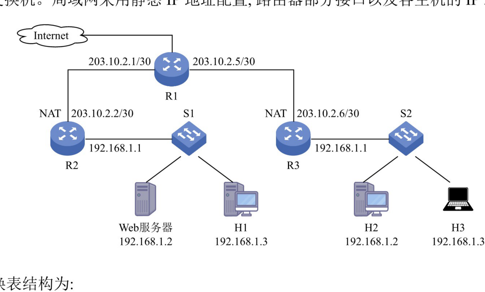
答案与解析
解答：
1) H2 和 H3 与 Web 服务器处于不同的局域网，路由器 R2、R3 具有 NAT 功能。当 R2 从 WAN 口收到来自 H2 或 H3 发来的 HTTP 请求时，根据 NAT 表发送给 Web 服务器的对应端口。为使外部主机能正常访问 Web 服务器，应在 R2 的 NAT 表中增加一项，外网的 IP 地址配置为路由器的外端 IP 地址，内网的 IP 地址配置为 Web 服务器的 IP 地址，HTTP 的服务器端的默认端口号为 80，因此外网和内网的端口号都需配置为 80。只需在 R2 中配置 Web 服务器的 NAT 表项，而不用在 R3 中配置 H2 和 H3 的 NAT 表项，原因在于 H2 和 H3 是主动访问 Web 服务器，若不提前配置好 Web 服务器的 NAT 映射，则当 IP 分组到达 R2 时，就不知道应当把目的 IP 地址转换成专用网中的哪个本地 IP 地址。而 R3 会自动记录 H2 和 H3 所对应的 IP 地址和端口号，且客户端的端口号是随机分配的，无法做静态配置，只能通过自动动态配置实现。R2 的 NAT 表配置如下：
| 外网 | 内网 | ||
|---|---|---|---|
| IP 地址 | 端口号 | IP 地址 | 端口号 |
| 203.10.2.2 | 80 | 192.168.1.2 | 80 |
2) 因为启用了 NAT 服务，H2 发送的 P 的源 IP 地址应该是 H2 的内网地址，目的地址应该是 R2 的外网 IP 地址，源 IP 地址是 192.168.1.2，目的 IP 地址是 203.10.2.2。R3 转发后，将 P 的源 IP 地址改为 R3 的外网 IP 地址，目的 IP 地址仍然不变，源 IP 地址是 203.10.2.6，目的 IP 地址是 203.10.2.2。R2 转发后，将 P 的目的 IP 地址改为 Web 服务器的内网地址，源地址仍然不变，源 IP 地址是 203.10.2.6，目的 IP 地址是 192.168.1.2。
综合题 174.2 IPv4 · 2022 统考真题
某网络拓扑如下图所示，R 为路由器，S 为以太网交换机，AP 是 802.11 接入点，路由器的 E0 接口和 DHCP 服务器的 IP 地址配置如图中所示；H1 与 H2 属于同一个广播域，但不属于同一个冲突域；H2 和 H3 属于同一个冲突域；H4 和 H5 已经接入网络，并通过 DHCP 动态获取了 IP 地址，现有路由器、100BaseT 以太网交换机和 100BaseT 集线器 (Hub) 三类设备各若干。回答下列问题：(1) 设备 1 和设备 2 应该分别选择哪类设备？(2) 若信号传播速度为 \(2 \times 10^8\)m/s，以太网最小帧长为 64B，信号通过设备 2 时会产生额外的 1.51μs 的时延，则 H2 与 H3 之间可以相距的最远距离是多少？(3) 在 H4 通过 DHCP 动态获取 IP 地址过程中，H4 首先发送了 DHCP 报文 M，M 是哪种 DHCP 报文？路由器 E0 接口能否收到封装 M 的以太网帧？S 向 DHCP 服务器转发的封装 M 的以太网帧的目的 MAC 地址是什么？(4) 若 H4 向 H5 发送一个 IP 分组 P，则 H5 收到的封装 P 的 802.11 帧的地址 1、地址 2 和地址 3 分别是什么？
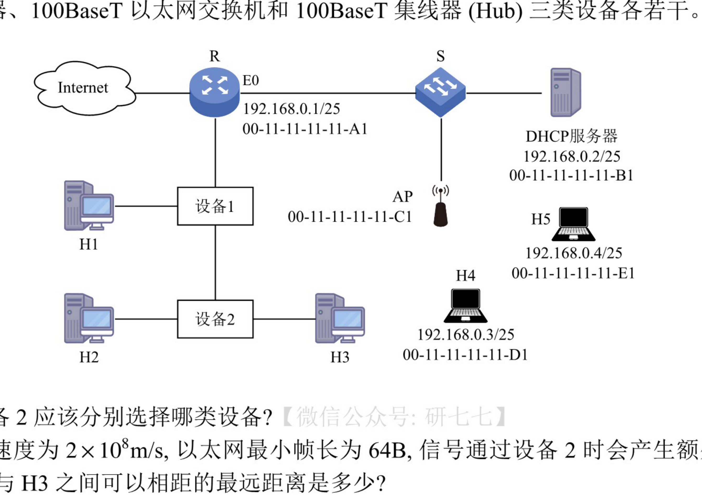
答案与解析
解答：
1) 设备 1 选择 100Base-T 以太网交换机，设备 2 选择 100Base-T 集线器。因为物理层设备既不能隔离冲突域，又不能隔离广播域，链路层设备可以隔离冲突域但不能隔离广播域。
2) 本题与 2016 年真题第 36 题几乎相同，仅修改了几个数字。有关最短帧长的题要抓住两个公式来分析：① 发送帧的时间 ≥ 争用期的时间；② 最短帧长 = 数据传输速率 × 争用期时间。要使公式①恒成立，就要考虑在最短帧长的情况下公式①仍成立。发送最短帧的时间为 \(64\text{B} \div 100\text{Mb/s} = 5.12\text{μs}\)，根据公式①可知，该时间即为争用期时间（往返时延）的最大值。本题的特点在于往返时延由两部分组成，即传播时延和 Hub 产生的转发时延。单程总时延为 2.56μs，Hub 产生的转发时延为 1.51μs，所以传播时延为 \(2.56 - 1.51 = 1.05\text{μs}\)，从而 H2 与 H3 之间理论上可以相距的最大距离为 \(200\text{m/μs} \times 1.05\text{μs} = 210\)m。
3) M 是 DHCP 发现报文（DISCOVER 报文）。路由器 E0 接口能收到封装 M 的以太网帧，因为 H4 发送的 DHCP 发现报文是广播的形式，所以同一个广播域内的所有设备和接口都可以收到该以太网帧。因为是广播帧，所以目的 MAC 地址是全 1，S 向 DHCP 服务器转发的封装 M 的以太网帧的目的 MAC 地址是 FF-FF-FF-FF-FF-FF。
4) 在 H5 收到的帧中，地址 1、地址 2 和地址 3 分别是 00-11-11-11-11-E1、00-11-11-11-11-C1 和 00-11-11-11-11-D1。该帧来自 AP，地址 1 是接收方 H5 的 MAC 地址，地址 2 是 AP 的 MAC 地址，地址 3 是发送方 H4 的 MAC 地址。
综合题 184.2 IPv4 · 2025 统考真题
某公司在承建国家重大工程项目时，工程部需要较长时间驻扎在偏远山区，工程部网络需要连接公司总部网络。假设综合考虑方案的技术可行性、安全性与经济成本等因素后，决定租用我国自主建设的天通一号卫星通信链路，连接工程部网络的路由器 R1 和公司总部网络的路由器 R2，如下图所示。S1 和 S2 为千兆以太网交换机；TR1 和 TR2 是卫星信号地面收发设备，实现全双工调制解调。天通一号卫星轨道高度是 36000km，电磁波信号传播速度为 300000 km/s。租用的卫星链路为 R1 和 R2 之间提供对称全双工信道，每个方向的数据传输速率为 200 kb/s。回答下列问题：
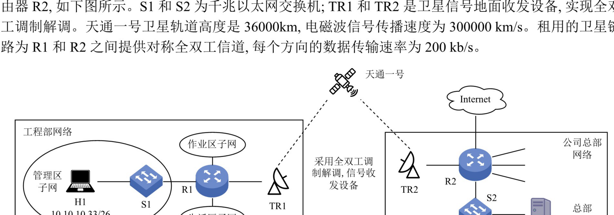
(1) 忽略卫星信号中继以及 TR1 和 TR2 调制解调的时间开销，则 R1 到 R2 之间的卫星链路的单向传播时延是多少？主机 H 向总部服务器传输数据时可达到的最大吞吐量是多少？若忽略各层协议首部开销以及以太网内的传输时延，则主机 H 向总部服务器上传一个 4000B 大小的工程进度报告文件，至少需要多长时间？(2) 现需要基于 GBN 滑动窗口协议为卫星链路设计单向可靠的数据链路层协议 SLP，支持 R1 向 R2 发送数据。SLP 数据帧长为 1500B，忽略 ACK 帧长度。若要求 SLP 单向信道利用率不低于 80%，则 SLP 的发送窗口至少为多少？SLP 帧的序号至少需要多少位？(3) 若公司总部为工程部网络分配的 IP 地址空间是 10.10.10.0/24，工程部进一步将该 IP 地址空间分配给 3 个子网，其中生活区子网可分配地址数不少于 120 个，作业区子网和管理区子网可分配地址数均不少于 60 个，且主机 H 已正确配置了 IP 地址，则作业区子网、管理区子网和生活区子网的子网地址分别是什么（给出 CIDR 地址形式）？
答案与解析
解答：
1) R1 到 R2 的卫星链路传播时延由 TR1→卫星→TR2 路径决定。每段距离为 36000km，电磁波速度为 300000km/s，单段时延 = \(36000/300000 = 120\)ms，总单向传播时延 = \(2 \times 120\)ms = 240ms。主机 H 向总部服务器传输数据时可达到的最大吞吐量为 200kb/s（瓶颈为卫星链路的 200kb/s 带宽）。卫星链路带宽为 200kb/s。忽略各层协议首部和以太网时延，上传 4000B 文件的总时间 = 传输时延 + 传播时延。传输时延为 \((4000 \times 8\text{b})/(200\text{kb/s}) = 160\)ms，传播时延为 240ms，因此最少需 \(160 + 240 = 400\)ms。文件上传过程：主机 H 先用 160ms 将文件全部发出，再经 240ms 传播到达总部服务器。
2) 令 \(W_s\) 为发送窗口，\(k\) 为序号字段位数。采用 GBN 协议时，理想情况下，发送窗口内的所有数据帧均可被接收方成功接收并立即返回 ACK。一个数据帧的传输时延为 \((1500 \times 8\text{b})/(200\text{kb/s}) = 60\)ms；从发送方发出数据帧的最后一比特到收到 ACK，需经历 2 倍单向传播时延，即 \(2 \times 240\)ms。理想情况下，发送方可以连续发出 \(W_s\) 个帧，总耗时 \(W_s \times 60\)ms。从发出第一个帧起，最多经过 \(60\text{ms} + 2 \times 240\text{ms}\) 即可开始下一轮发送。依题意可知，信道利用率为 \((W_s \times 60\text{ms})/(60\text{ms} + 2 \times 240\text{ms}) \geq 0.8\)。解得 \(W_s \geq 7.2\)，向上取整得 \(W_s\) 至少为 8。对于 GBN 协议，接收窗口为 1，需满足 \(2^k \geq\) 发送窗口 + 接收窗口，即 \(2^k \geq 8 + 1\)，故序号字段至少需要 4 位。
3) 由题图可知，主机 H 的 IP 地址为 10.10.10.33/26，属于管理区子网，故管理区的子网地址为 10.10.10.0/26，主机号范围 0～63，其中 62 个可分配，满足 ≥60 的要求。作业区也需 ≥60 个可分配地址，故同样也需一个/26 子网。在 10.10.10.0/24 主网段中，紧接管理区之后的/26 块是 10.10.10.64/26，主机号范围 64～127，符合要求。生活区需 ≥120 个可分配地址，故需一个/25 子网（包含 128 个 IP 地址，可分配 126 个）。剩余地址空间为 128～255，对应子网 10.10.10.128/25，满足要求且与其他子网无重叠。
选择题 · 4.3 IPv6（第 94～100 题）
第 94 题单选
下一代因特网核心协议 IPv6 的地址长度是（ ）
- A. 32 比特
- B. 48 比特
- C. 64 比特
- D. 128 比特
答案与解析
答案：D
解析：IPv6 的地址用 16B（128 比特）表示，比 IPv4 长得多，地址空间是 IPv4 的 \(2^{96}\) 倍。
第 95 题单选
与 IPv4 相比，IPv6（ ）
- A. 采用 32 位 IP 地址
- B. 增加了首部字段数量
- C. 不提供 QoS 保障
- D. 没有提供检验和字段
答案与解析
答案：D
解析：IPv6 采用 128 位地址；它减少了首部字段数量，仅包含 8 个字段；IPv6 支持 QoS（指在有限的带宽资源下，为业务提供端到端的服务质量保证），以满足实时、多媒体通信的需要。因为目前网络传输介质的可靠性较高，出现比特错误的可能性很低，且数据链路层和传输层有自己的校验，为了效率，IPv6 没有检验和字段。
第 96 题单选
下列关于 IPv6 地址 1A22:120D:0000:0000:72A2:0000:0000:00C0 的表示中，错误的是（ ）
- A. 1A22:120D::72A2:0000:0000:00C0
- B. 1A22:120D::72A2:0:0:C0
- C. 1A22::120D::72A2::00C0
- D. 1A22:120D:0:0:72A2::C0
答案与解析
答案：C
解析：使用零压缩法时，双冒号"::"（表示零压缩）在一个地址中只能出现一次。也就是说，当有多处不相邻的 0 时，只能用"::"代表其中的一处。选项 C 中出现了两次"::"，是错误的表示。
第 97 题单选
一个 IPv6 地址的简化写法为 8::D0:123:CDEF:89A，则其完整地址应该是（ ）
- A. 8000:0000:0000:0000:00D0:1230:CDEF:89A0
- B. 0008:0000:0000:0000:00D0:0123:CDEF:89A0
- C. 8000:0000:0000:0000:D000:1230:CDEF:89A0
- D. 0008:0000:0000:0000:00D0:0123:CDEF:089A
答案与解析
答案：D
解析：冒号十六进制记法表示 IPv6 地址的规则：① 多个连续区域为 0，可进行零压缩，但一个地址仅可出现一次零压缩；② 每个区域开头的 0 可省略，结尾的 0 不可省略。按照规则先将题中零压缩的部分展开，得到 8:0000:0000:0000:D0:123:CDEF:89A；每个区域应该有 4 位十六进制数，不足 4 位表示开头的 0 被省略，补充后得到 0008:0000:0000:0000:00D0:0123:CDEF:089A。
第 98 题单选
下列关于 IPv6 的描述中，错误的是（ ）
- A. IPv6 的首部长度是不可变的
- B. IPv6 不允许在中间路由器进行分片
- C. IPv6 采用了 16B 的地址，在可预见的将来不会用完
- D. IPv6 使用了首部检验和来保证传输的正确性
答案与解析
答案：D
解析：IPv6 的首部长度是固定的，因此不需要首部长度字段；IPv6 取消了检验和字段，这样就加快了路由器处理数据报的速度——数据链路层会丢弃检测出差错的帧，传输层也有相应的差错处理机制，因此网络层的差错检测可以精简掉。
第 99 题单选
若一个路由器收到的 IPv6 数据报因太大而不能转发到链路上，则路由器将把该数据报（ ）
- A. 丢弃
- B. 暂存
- C. 分片
- D. 转发至能支持该数据报的链路上
答案与解析
答案：A
解析：IPv6 中不允许在中间路由器进行分片。因此，若路由器发现到来的数据报太大而不能转发到输出链路上，则直接丢弃该数据报，并向源点发送一个"分组太大"的 ICMPv6 报文，由源点自行进行分片后重发。
第 100 题单选 · 2023 统考真题
下列关于 IPv4 和 IPv6 的叙述中，正确的是（ ）
I. IPv6 地址空间是 IPv4 地址空间的 96 倍
II. IPv4 首部和 IPv6 基本首部的长度均可变
III. IPv4 向 IPv6 过渡可以采用双协议栈和隧道技术
IV. IPv6 首部的 Hop Limit 字段等价于 IPv4 首部的 TTL 字段
- A. 仅 I、II
- B. 仅 I、IV
- C. 仅 II、III
- D. 仅 III、IV
答案与解析
答案：D
解析：IPv6 地址 128 位，IPv4 地址 32 位，IPv6 地址空间是 IPv4 的 \(2^{96}\) 倍，I 错误。IPv4 首部长度可变（20～60B），但 IPv6 基本首部长度固定为 40B，II 错误。IPv4 向 IPv6 过渡采用双协议栈和隧道技术，III 正确。IPv6 的 Hop Limit 与 IPv4 的 TTL 一样，每经过一个路由器减 1，减为 0 则丢弃，IV 正确。故选 D。
选择题 · 4.4 路由算法与路由协议（第 101～127 题）
第 101 题单选
下列关于动态路由选择和静态路由选择的主要区别的描述中，正确的是（ ）
- A. 动态路由选择需要维护整个网络的拓扑结构信息，而静态路由选择只需要维护部分拓扑结构信息
- B. 动态路由选择可随网络的通信量或拓扑变化而自适应地调整，而静态路由选择则需要手工去调整相关的路由信息
- C. 动态路由选择简单且开销小，静态路由选择复杂且开销大
- D. 动态路由选择使用路由表，静态路由选择不使用路由表
答案与解析
答案：B
解析：静态路由选择使用手动配置的路由信息，实现简单且开销小，但不能及时适应网络状态的变化。动态路由选择通过路由选择协议，自动发现并维护路由信息，能及时适应网络状态的变化，实现复杂且开销大。动态路由选择和静态路由选择都使用路由表。
第 102 题单选
下列关于路由算法的描述中，错误的是（ ）
- A. 静态路由有时也被称为非自适应算法
- B. 静态路由所使用的路由选择一旦启动就不能修改
- C. 动态路由也称自适应算法，会根据网络的拓扑变化和流量变化改变路由决策
- D. 动态路由算法需要实时获得网络的状态
答案与解析
答案：B
解析：静态路由也称非自适应算法，它不会估计流量和结构来调整其路由决策。但是，这并不说明路由选择是不能改变的，事实上用户可以随时配置路由表，B 错误。动态路由也称自适应算法，需要实时获取网络的状态，并根据网络的状态适时地改变路由决策。
第 103 题单选
下列关于链路状态协议的描述中，错误的是（ ）
- A. 仅相邻路由器需要交换各自的路由表
- B. 全网路由器的拓扑数据库是一致的
- C. 采用洪泛技术更新链路变化信息
- D. 具有快速收敛的优点
答案与解析
答案：A
解析：在链路状态算法中，每个路由器在自己的链路状态变化时，将链路状态信息用洪泛法发送给网络中的其他路由器，发送的链路状态信息包括该路由器的相邻路由器及所有相邻链路的状态（并非交换各自的路由表，那是距离向量算法的做法）。链路状态算法具有快速收敛的优点，它能在网络拓扑发生变化时立即进行路由的重新计算，并及时向其他路由器发送最新的链路状态信息，使得各路由器的链路状态表能够尽量保持一致。
第 104 题单选
在链路状态路由算法中，每个路由器都得到网络的完整拓扑结构后，使用（ ）算法来找出它到其他路由器的路径长度。
- A. Prim 最小生成树算法
- B. Dijkstra 最短路径算法
- C. Kruskal 最小生成树算法
- D. 拓扑排序
答案与解析
答案：B
解析：在链路状态算法中，路由器通过交换每个节点到邻居节点的代价来构建一个完整的网络拓扑结构。然后，路由器使用 Dijkstra 最短路径算法来计算到所有节点的最短路径。最小生成树算法求得的是连通所有节点的总代价最小的树，并不能给出任意两点间的最短路径。
第 105 题单选
下列关于分层路由的描述中，错误的是（ ）
- A. 采用分层路由后，路由器被划分成区域
- B. 每个路由器不仅知道如何将分组路由到自己区域的目标地址，还知道如何路由到其他区域
- C. 采用分层路由后，可以将不同的网络连接起来
- D. 对于大型网络，可能需要多级的分层路由来管理
答案与解析
答案：B
解析：采用分层路由后，路由器被划分为区域，每个路由器知道如何将分组路由到自己所在区域内的目标地址，但对于其他区域内的结构毫不知情。当不同的网络相互连接时，可将每个网络当作一个独立的区域，这样做的好处是一个网络中的路由器不必知道其他网络的拓扑结构。对于大型网络，可能需要多级的分层路由来管理。
第 106 题单选
以下关于自治系统的描述中，错误的是（ ）
- A. 自治系统划分区域的好处是，将利用洪泛法交换链路状态信息的范围局限在每个区域内，而不是整个自治系统
- B. 采用分层划分区域的方法使交换信息的种类增多，同时也使 OSPF 协议更加简单
- C. OSPF 协议将一个自治系统再划分为若干更小的范围，称为区域
- D. 在一个区域内部的路由器只知道本区域的网络拓扑，而不知道其他区域的网络拓扑的情况
答案与解析
答案：B
解析：划分区域的好处是，将利用洪泛法交换链路状态信息的范围局限在每个区域内，而不是整个自治系统。因此，在一个区域内部的路由器只知道本区域的网络拓扑情况，而不知道其他区域的网络拓扑情况。采用分层划分区域的方法虽然使交换信息的种类增多了，同时也使 OSPF 协议更加复杂了，但是这样做却能使每个区域内部交换路由信息的通信量大大减少，进而使 OSPF 协议能够用于规模很大的自治系统中，B 错误。
第 107 题单选
在计算机网络中，路由选择协议的功能不包括（ ）
- A. 交换网络状态或通路信息
- B. 选择到达目的地的最佳路径
- C. 更新路由表
- D. 发现下一跳的物理地址
答案与解析
答案：D
解析：路由选择协议的功能通常包括：获取网络拓扑信息、构建路由表、在网络中更新路由信息、选择到达每个目的网络的最优路径、识别一个网络的无环通路等。发现下一跳的物理地址一般是通过其他方式（如 ARP）来实现的，不属于路由选择协议的功能。
第 108 题单选
用于域间路由的协议是（ ）
- A. RIP
- B. BGP
- C. OSPF
- D. ARP
答案与解析
答案：B
解析：BGP（边界网关协议）是域间路由协议（外部网关协议）。RIP 和 OSPF 是域内路由协议（内部网关协议），ARP 不是路由协议。
第 109 题单选
在 RIP 中，到某个网络的距离值为 16，其意义是（ ）
- A. 该网络不可达
- B. 存在循环路由
- C. 该网络为直接连接网络
- D. 到达该网络要经过 15 次转发
答案与解析
答案：A
解析：RIP 规定的最大跳数为 15，16 表示网络不可达。
第 110 题单选
在 RIP 中，假设路由器 X 和路由器 K 是两个相邻的路由器，X 向 K 说："我到目的网络 Y 的距离为 \(N\)"，则收到此信息的 K 就知道："若将到网络 Y 的下一个路由器选为 X，则我到网络 Y 的距离为（ ）"（假设 \(N\) 小于 15）
- A. \(N\)
- B. \(N-1\)
- C. 1
- D. \(N+1\)
答案与解析
答案：D
解析：RIP 规定，每经过一个路由器，距离（跳数）加 1。X 到 Y 的距离为 \(N\)，K 若经 X 到达 Y，还需加上 K 到 X 的一跳，故距离为 \(N+1\)。
第 111 题单选
下列关于 RIP 的描述中，错误的是（ ）
- A. RIP 是基于距离-向量路由选择算法的
- B. RIP 要求内部路由器将它关于整个 AS 的路由信息发布出去
- C. RIP 要求内部路由器向整个 AS 的路由器发布路由信息
- D. RIP 要求内部路由器按照一定的时间间隔发布路由信息
答案与解析
答案：C
解析：RIP 是基于距离-向量路由选择算法的，它要求内部路由器将它关于整个 AS 的路由信息（整个路由表）发布出去，但只向相邻的路由器发布，而不像 OSPF 那样向整个域洪泛，并按照一定的时间间隔（如每 30s）周期性地发布。
第 112 题单选
在 RIP 中，当路由器收到相邻路由器发来的路由更新信息时，若发现有更优的路由，则（ ）
- A. 直接更新自己的路由表
- B. 向相邻路由器发送确认信息后再更新自己的路由表
- C. 向所有相邻路由器发送确认信息后再更新自己的路由表
- D. 不更新自己的路由表
答案与解析
答案：A
解析：在 RIP 中，当路由器收到相邻路由器发来的路由更新信息时，若发现有更优的路由（跳数更小的路由），则直接更新自己的路由表，并向其他相邻路由器广播自己的新路由。RIP 使用 UDP 传送，无需专门确认。
第 113 题单选
对路由选择协议的一个要求是必须能够快速收敛，所谓"路由收敛"是指（ ）
- A. 路由器能把分组发送到预定的目标
- B. 路由器处理分组的速度足够快
- C. 网络设备的路由表与网络拓扑结构保持一致
- D. 能把多个子网聚合成一个超网
答案与解析
答案：C
解析：所谓收敛，是指当路由环境发生变化后，各路由器调整自己的路由表以适应网络拓扑结构的变化，最终达到稳定状态（路由表与网络拓扑状态保持一致）。收敛越快，路由器就能越快适应网络拓扑结构的变化。
第 114 题单选
下列关于 RIP 和 OSPF 协议的叙述中，错误的是（ ）
- A. RIP 和 OSPF 协议都是网络层协议
- B. 在进行路由信息交换时，RIP 中的路由器仅向自己相邻的路由器发送信息，OSPF 协议中的路由器向本自治系统中的所有路由器发送信息
- C. 在进行路由信息交换时，RIP 中的路由器发送的信息是整个路由表，OSPF 协议中的路由器发送的信息只是路由表的一部分
- D. RIP 的路由器不知道全网的拓扑结构，OSPF 协议的任何一个路由器都知道自己所在区域的拓扑结构
答案与解析
答案：A
解析：RIP 是应用层协议，它使用 UDP 传送数据，OSPF 才是网络层协议，选项 A 错误。B、C、D 均为 RIP 与 OSPF 的正确区别：RIP 仅与相邻路由器交换整个路由表，OSPF 向本自治系统（区域）内所有路由器洪泛链路状态信息（只传送受影响的部分）；RIP 路由器不了解全网拓扑，OSPF 路由器通过链路状态数据库掌握所在区域的完整拓扑。
第 115 题单选
OSPF 协议使用（ ）分组来保持与其邻居的连接。
- A. Hello
- B. Keepalive
- C. SPF（最短路径优先）
- D. LSU（链路状态更新）
答案与解析
答案：A
解析：此题属于记忆性题目，OSPF 协议使用 Hello 分组来保持与其邻居的连接（并用于发现邻居、选举指定路由器）。Keepalive 是 BGP/TCP 层面的保活机制。
第 116 题单选
下列关于 OSPF 协议的描述中，最准确的是（ ）
- A. OSPF 协议根据链路状态法计算最佳路由
- B. OSPF 协议是用于自治系统之间的外部网关协议
- C. OSPF 协议不能根据网络通信情况动态地改变路由
- D. OSPF 协议只适用于小型网络
答案与解析
答案：A
解析：OSPF 协议是一种用于自治系统内部的路由协议（内部网关协议），选项 B 错误。它是一种基于链路状态路由选择算法的协议，能适用大型全局 IP 网络的扩展，支持可变长子网掩码，所以 OSPF 协议可用于管理一个受限地域的中大型网络，选项 D 错误。OSPF 协议维护一张它所连接的所有链路状态信息的邻接表和拓扑数据库，使用多播链路状态更新报文实现路由更新，并且只有当网络发生变化时才传送链路状态更新报文，可根据网络通信情况动态地改变路由，选项 C 错误。
第 117 题单选
在 OSPF 协议中，划分区域的最主要目的是（ ）
- A. 减少路由表的大小
- B. 减少洪泛法交换的通信量
- C. 增加路由选择的灵活性
- D. 增加网络的安全性
答案与解析
答案：B
解析：链路状态算法让每个路由器都知道整个自治系统的完整拓扑，从而计算最短路径。若不划分区域，则会导致链路状态数据包的个数和占用空间非常大，占用大量的网络带宽资源，影响网络效率和稳定性。划分区域后，每个路由器只需要知道自己所在区域内的完整拓扑，把交换链路状态信息的范围局限在每个区域，这样就大大减少了链路状态数据包的数量和大小，即减少了洪泛法交换的通信量。
第 118 题单选
下列关于 OSPF 协议特征的描述中，错误的是（ ）
- A. OSPF 协议将一个自治域分成若干区域，有一种特殊的域称为主干区域
- B. 区域之间通过区域边界路由器互连
- C. 在自治系统中有 4 类路由器：区域内部路由器、主干路由器、区域边界路由器和自治域边界路由器
- D. 主干路由器不能兼作区域边界路由器
答案与解析
答案：D
解析：主干区域中，用于连接主干区域和其他下层区域的路由器称为区域边界路由器。只要是在主干区域中的路由器，就都称为主干路由器，因此主干路由器可以兼作区域边界路由器，D 错误。
第 119 题单选
BGP 交换的网络可达性信息是（ ）
- A. 到达某个网络所经过的路径
- B. 到达某个网络的下一跳路由器
- C. 到达某个网络的链路状态摘要信息
- D. 到达某个网络的最短距离及下一跳路由器
答案与解析
答案：A
解析：因为 BGP 仅力求寻找一条能够到达目的网络且较好的路由（不能兜圈子），而并非寻找一条最佳路由，所以选项 D 错误。BGP 交换的路由信息是到达某个目的网络所要经过的各个自治系统序列（AS 路径），而不仅仅是下一跳，因此选项 A 正确。
第 120 题单选
RIP、OSPF 协议、BGP 的路由选择过程分别使用（ ）
- A. 路径向量协议、链路状态协议、距离向量协议
- B. 距离向量协议、路径向量协议、链路状态协议
- C. 路径向量协议、距离向量协议、链路状态协议
- D. 距离向量协议、链路状态协议、路径向量协议
答案与解析
答案：D
解析：RIP 是一种分布式的基于距离向量的路由选择协议，它使用跳数来度量距离，RIP 选择的路径不一定是时间最短的，但一定是具有最小距离（最少跳数）的路径。OSPF 协议使用分布式的链路状态协议，通过与相邻路由器频繁交流链路状态信息来建立全网的拓扑结构图，然后使用 Dijkstra 算法计算最优路径。因为 BGP 仅力求寻找一条能够到达目的网络且较好的路由（不能兜圈子），而并非寻找一条最佳路由，所以它采用的是路径向量路由选择协议：每个自治系统选出一个 BGP 发言人，这些发言人通过相互交换自己的路径向量（网络可达性信息）后，就可找出到达各自治系统的较好路由。
第 121 题单选
从数据封装的角度看，下列（ ）协议属于 TCP/IP 参考模型的应用层。
I. OSPF II. RIP III. BGP IV. ICMP
- A. I、II
- B. II、III
- C. I、IV
- D. I、II、III、IV
答案与解析
答案：B
解析：从封装角度看，RIP 和 BGP 属于应用层（分别封装在 UDP 报文和 TCP 报文中传送），OSPF 和 ICMP 属于网络层（直接封装在 IP 数据报中）。
第 122 题单选
考虑如下图所示的子网，该子网使用了距离向量算法，下面的向量刚刚到达路由器 C：来自 B 的向量为 (5, 0, 8, 12, 6, 2)；来自 D 的向量为 (16, 12, 6, 0, 9, 10)；来自 E 的向量为 (7, 6, 3, 9, 0, 4)。经过测量，C 到 B、D 和 E 的延迟分别为 6、3 和 5，那么 C 到达所有节点的最短路径是（ ）
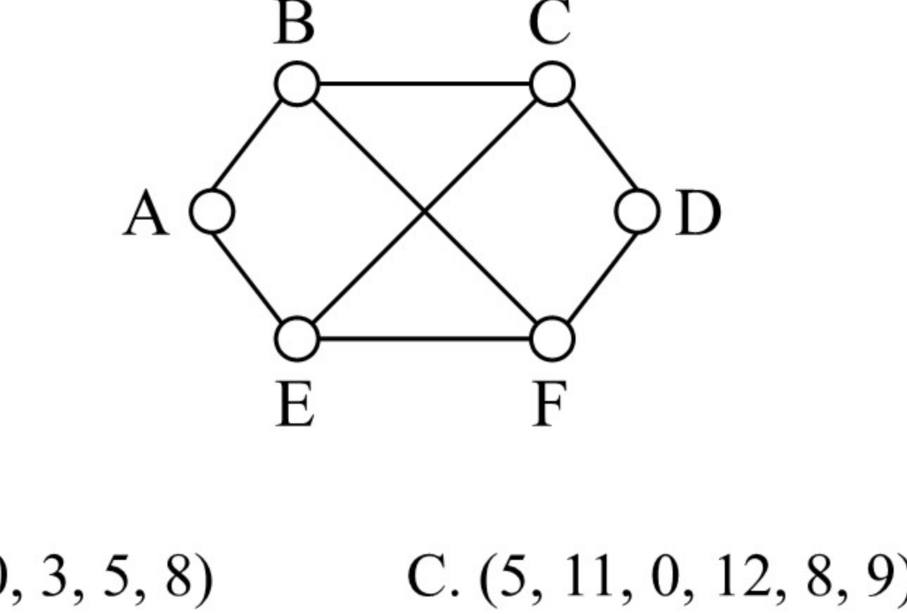
- A. (5, 6, 0, 9, 6, 2)
- B. (11, 6, 0, 3, 5, 8)
- C. (5, 11, 0, 12, 8, 9)
- D. (11, 8, 0, 7, 4, 9)
答案与解析
答案：B
解析：距离-向量算法要求每个路由器维护一张路由表，该表给出了到达每个目的地址的已知最佳距离（最小代价）和下一步的转发地址。算法要求每个路由器定期与所有相邻路由器交换整个路由表，并更新自己的路由表。注意，从邻接节点接收到路由表不能直接进行比较，而要加上相邻节点传输消耗后再进行计算。C 到 B 的距离是 6，于是从 C 开始通过 B 到达各节点的最短距离向量是 (11, 6, 14, 18, 12, 8)。同理，通过 D 和 E 的最短距离向量分别是 (19, 15, 9, 3, 12, 13) 和 (12, 11, 8, 14, 5, 9)。于是，C 到所有节点的最短路径应该是 (11, 6, 0, 3, 5, 8)。
第 123 题单选
某分组交换网络的拓扑如下图所示，各路由器使用 OSPF 协议且均已收敛，各链路的度量已在图中标注。假设各段链路的带宽均为 100Mb/s，分组长度为 1000B，其中分组的首部长度为 20B。若主机 A 向主机 B 发送一个大小为 980000B 的文件，忽略分组的传播时延和封装/解封时间，从 A 发送开始到 B 接收完毕为止，需要的时间是（ ）
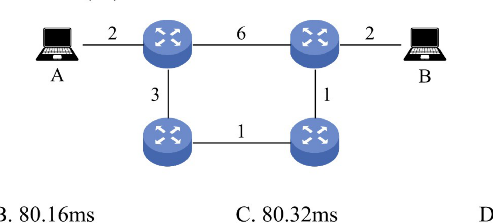
- A. 80.08ms
- B. 80.16ms
- C. 80.32ms
- D. 80.64ms
答案与解析
答案：C
解析：根据 OSPF 算法，从 A 到 B 转发经过的链路代价依次为 2、3、1、1、2，一共经过 4 个路由器。分组长度为 1000B，首部长度为 20B，数据长度为 980B，所以共有 \(980000/980 = 1000\) 个分组，每次存储转发时延为 \(1000\text{B} \div 100\text{Mb/s} = 0.08\text{ms}\)。第一个分组从 A 到 B 的时间为 \(0.08 \times 5 = 0.4\text{ms}\)，剩下的 999 个分组每经过 0.08ms 就到达一个，所以总时间为 \(0.4 + 0.08 \times 999 = 80.32\text{ms}\)。
第 124 题单选 · 2010 统考真题
某自治系统内采用 RIP，若该自治系统内的路由器 R1 收到其邻居路由器 R2 的距离向量，距离向量中包含信息 <Net1, 16>，则能得出的结论是（ ）
- A. R2 可以经过 R1 到达 Net1，跳数为 17
- B. R2 可以到达 Net1，跳数为 16
- C. R1 可以经过 R2 到达 Net1，跳数为 17
- D. R1 不能经过 R2 到达 Net1
答案与解析
答案：D
解析：RIP 规定最大跳数为 15，距离 16 表示不可达。R1 在收到信息并更新路由表后，若需要经过 R2 到达 Net1，则其跳数为 17，因为距离为 16 表示不可达，所以 R1 不能经过 R2 到达 Net1，R2 也不可能到达 Net1。选项 B、C 错误，选项 D 正确。而题目中并未给出 R1 向 R2 发送的信息，因此选项 A 也不正确。
第 125 题单选 · 2016 统考真题
假设下图中的 R1、R2、R3 采用 RIP 交换路由信息，且均已收敛。若 R3 检测到网络 201.1.2.0/25 不可达，并向 R2 通告一次新的距离向量，则 R2 更新后，其到达该网络的距离是（ ）
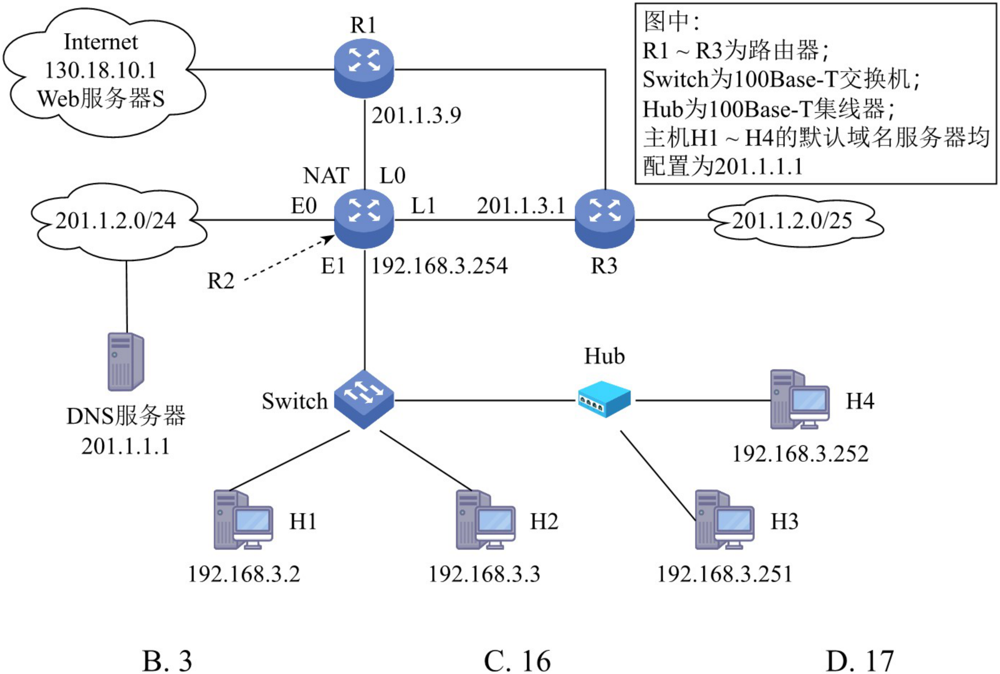
- A. 2
- B. 3
- C. 16
- D. 17
答案与解析
答案：B
解析：初始收敛时，R3 到网络（201.1.2.0/25）的距离为 1，R2 到网络的距离为 2，R1 到网络的距离为 2。当 R3 检测到网络不可达时，因为 R3 存有其他邻居到网络的路由信息，所以它利用所有邻居的距离向量，用 Bellman-Ford 公式更新自己的距离向量（易错点：误以为 R3 检测到网络不可达时，就把其到网络的距离设置为 16），R3 重新计算到网络的距离 \(= \min\{16,\ \text{R1 到网络的距离}+1,\ \text{R2 到网络的距离}+1\} = \{16,\ 2+1,\ 2+1\} = 3\)。然后，R3 向其所有邻居发送更新报文，"告诉它到网络的距离为 3"。R2（及 R1）收到 R3 发来的更新报文后，会利用它保存的所有邻居的距离向量，重新计算自己到网络的距离 \(= \min\{\text{R1 到网络的距离}+1,\ \text{R3 到网络的距离}+1\} = \{2+1,\ 3+1\} = 3\)，因此答案为 3。与此同时，R1 也重新计算自己到网络的距离 \(= \min\{\text{R2 到网络的距离}+1,\ \text{R3 到网络的距离}+1\} = \{2+1,\ 3+1\} = 3\)。如此反复，直至重新收敛。因为 RIP 的特点"坏消息传得慢"，所以一旦网络出现故障，就要经过较长时间才能将故障消息传送到所有路由器。
第 126 题单选 · 2017 统考真题
直接封装 RIP、OSPF、BGP 报文的协议分别是（ ）
- A. TCP、UDP、IP
- B. TCP、IP、UDP
- C. UDP、TCP、IP
- D. UDP、IP、TCP
答案与解析
答案：D
解析：RIP 是一种分布式的基于距离向量的路由选择协议，它通过广播 UDP 报文来交换路由信息。OSPF 是一个内部网关协议，要交换的信息量较大，应使报文的长度尽量短，所以不使用传输层协议（如 UDP 或 TCP），而直接采用 IP。BGP 是一个外部网关协议，在不同的自治系统之间交换路由信息，因为网络环境复杂，需要保证可靠传输，所以采用 TCP。因此，答案为选项 D。
第 127 题单选 · 2021 统考真题
某网络中的所有路由器均采用距离向量路由算法计算路由。若路由器 E 与邻居路由器 A、B、C 和 D 之间的直接链路距离分别是 8, 10, 12 和 6，且 E 收到邻居路由器的距离向量如下表所示，则路由器 E 更新后的到达目的网络 Net1~Net4 的距离分别是（ ）
| 目的网络 | A 的距离向量 | B 的距离向量 | C 的距离向量 | D 的距离向量 |
|---|---|---|---|---|
| Net1 | 1 | 23 | 20 | 22 |
| Net2 | 12 | 35 | 30 | 28 |
| Net3 | 24 | 18 | 16 | 36 |
| Net4 | 36 | 30 | 8 | 24 |
- A. 9, 10, 12, 6
- B. 9, 10, 28, 20
- C. 9, 20, 12, 20
- D. 9, 20, 28, 20
答案与解析
答案：D
解析：根据距离-向量算法，E 收到相邻路由器的距离向量后，更新它的路由表：① 当原路由表中没有目的网络时，把该项目添加到路由表中；② 发来的路由信息中有一条到达某个目的网络的路由，该路由与当前使用的路由相比，有较短的距离，就用经过发送路由信息的节点的新路由替换。分析题意可知，E 与邻居路由器 A、B、C 和 D 之间的直接链路距离分别是 8、10、12 和 6。到达 Net1～Net4 没有直接链路，需要通过邻居路由器。E 到达目的网络一定是经过 A、B、C 和 D 中距离最小的。计算 E 经过邻居路由器到达目的网络 Net1～Net4 的距离，如下表所示，选择到达每个目的网络距离的最短值。
| 目的网络 | 经过 A 需要的距离 | 经过 B 需要的距离 | 经过 C 需要的距离 | 经过 D 需要的距离 |
|---|---|---|---|---|
| Net1 | 9 | 33 | 32 | 28 |
| Net2 | 20 | 45 | 42 | 34 |
| Net3 | 32 | 28 | 28 | 42 |
| Net4 | 44 | 40 | 20 | 30 |
所以距离分别是 9、20、28、20。
选择题 · 4.5 IP 多播（第 128～131 题）
第 128 题单选
下列关于多播概念的描述中，错误的是（ ）
- A. 在单播路由选择中，路由器只能从它的一个接口转发收到的分组
- B. 在多播路由选择中，路由器可以从它的多个接口转发收到的分组
- C. 用多个单播仿真一个多播时需要更多的带宽
- D. 用多个单播仿真一个多播时，时延基本上是相同的
答案与解析
答案：D
解析：多个单播可以仿真多播，但是一个多播所需的带宽要小于多个单播带宽之和；用多个单播仿真一个多播时，路由器的时延将很大，而处理一个多播分组的时延是很小的，D 错误。
第 129 题单选
在设计多播路由时，为了避免路由环路，（ ）
- A. 采用了水平分割技术
- B. 构造多播转发树
- C. 采用了 IGMP
- D. 通过生存时间 (TTL) 字段
答案与解析
答案：B
解析：因为树具有不存在环路的特性，所以构造一个多播转发树，通过该转发树，既能将多播分组传送到组内的每台主机，又能避免环路。水平分割用于避免距离-向量算法中的无穷计数问题；TTL 字段用于防止 IP 分组因为环路而在网络中无限循环；IGMP 是网际组管理协议，用于管理多播组成员，均不是设计多播路由时避免路由环路的手段。
第 130 题单选
以太网多播 IP 地址 224.215.145.230 应该映射到的多播 MAC 地址是（ ）
- A. 01-00-5E-57-91-E6
- B. 01-00-5E-D7-91-E6
- C. 01-00-5E-5B-91-E6
- D. 01-00-5E-55-91-E6
答案与解析
答案：A
解析：以太网多播地址块的范围是 01-00-5E-00-00-00 ～ 01-00-5E-7F-FF-FF，而且在每个地址中，只有后 23 位可用作多播。这样，只能和 D 类 IP 地址中的后 23 位有一一对应关系。D 类 IP 地址可供分配的有 28 位，可见这 28 位中的前 5 位不能用来构成以太网硬件地址。215 的二进制为 11010111，其中在映射过程中最高位（第 24 位）置为 0，因此 215.145.230 映射的二进制为 01010111.10010001.11100110，对应的十六进制数是 57-91-E6。
第 131 题单选
在下列 4 个地址中，（ ）只能用于 IP 数据报的目的地址而不能用于源地址。
- A. 11.255.255.100
- B. 192.168.1.100
- C. 228.1.1.100
- D. 0.0.0.0
答案与解析
答案：C
解析：选项 A 是一个 A 类地址，既可用于目的地址，又可用于源地址。选项 B 是一个私有地址，既可用于目的地址，又可用于源地址。选项 D 表示本网络上的本主机，只能用于源地址。选项 C 是一个多播地址，多播地址的范围是 224.0.0.0～239.255.255.255，只能用于目的地址。
选择题 · 4.6 移动 IP（第 132～134 题）
第 132 题单选
下列关于移动 IP 工作原理的描述中，错误的是（ ）
- A. 移动 IP 的基本工作过程可以分为代理发现、注册、分组路由与注销 4 个阶段
- B. 节点在使用移动 IP 进行通信时，归属代理和外部代理之间需要建立一条隧道
- C. 移动节点到达新的网络后，通过注册过程把自己新的可达信息通知外部代理
- D. 移动 IP 的分组路由可以分为单播、广播与多播
答案与解析
答案：C
解析：选项 C 应为向归属代理通知移动节点的新可达信息（转交地址）。这样，归属代理就可将发往移动节点的分组通过隧道转到转交地址（外部代理），再由外部代理交付给移动节点。移动 IP 的基本工作过程分为代理发现、注册、分组路由与注销 4 个阶段；归属代理截获发往移动站的分组后，构建一条通往转交地址的 IP 隧道，将原始分组封装在新 IP 包中转发给外部代理；分组路由可分为单播、广播与多播。
第 133 题单选
移动 IP 为移动主机设置了两个 IP 地址：归属地址和转交地址，（ ）
- A. 这两个地址都是固定的
- B. 这两个地址随主机的移动而动态改变
- C. 归属地址固定，转交地址动态改变
- D. 归属地址动态改变，转交地址固定
答案与解析
答案：C
解析：移动 IP 为移动主机设置的归属地址（永久地址）是固定不变的，用于标识该主机，其他主机始终用它与移动主机通信；转交地址则随移动主机所在的外部网络的变化而动态改变，是归属代理转发分组时的隧道终点。注意：转交地址仅用于移动站、归属代理和外地代理之间的通信，应用程序不会使用该地址。
第 134 题单选
若一台主机的 IP 地址为 160.80.40.20/16，则当它移动到了另一个不属于 160.80/16 子网的网络时，它将（ ）（能否通过被访网络的路由器直接发送/接收数据报）
- A. 可以直接接收和直接发送数据报，没有任何影响
- B. 既不可以直接接收数据报，又不可以直接发送数据报
- C. 不可以直接发送数据报，但可以直接接收数据报
- D. 可以直接发送数据报，但不可以直接接收数据报
答案与解析
答案：D
解析：该主机的归属网络是 160.80.0.0/16，当它移动到其他网络后，其 IP 地址仍为 160.80.40.20。被访网络的路由器检查目的网络时会发现该主机"不在本网"：当主机发送数据报时，源地址仍用其永久地址，可直接通过被访网络的路由器向外发送；但由于被访网络路由器的路由表中，属于 160.80.0.0/16 的分组不会被转发到本网络，外部发往 160.80.40.20 的分组也不会到达被访网络，因此该主机不能直接接收数据报，必须借助移动 IP 的归属代理/隧道机制才能接收。
选择题 · 4.7 网络层设备（第 135～155 题）
第 135 题单选
要控制网络上的广播风暴，可以采用的方法是（ ）
- A. 用交换机将网络分段
- B. 用路由器将网络分段
- C. 将网络转接成 10Base-T
- D. 用网络分析仪跟踪正在发送广播信息的计算机
答案与解析
答案：B
解析：网桥和交换机是第二层设备，能够分割冲突域，但不能分割广播域。路由器是第三层设备，不转发全网广播（目的地址 255.255.255.255），因此可以用路由器将网络分段来控制广播风暴。
第 136 题单选
下列关于冲突域的叙述中，正确的是（ ）
- A. 能接收到同一广播帧的所有设备的集合
- B. 能发送同一广播帧的所有设备的集合
- C. 能产生冲突的所有设备的集合
- D. 能隔离冲突的所有设备的集合
答案与解析
答案：C
解析：冲突域是指能产生冲突的所有设备的集合，也就是说，若这些设备同时发送数据，则会发生信号干扰和冲突。冲突域的大小取决于网络拓扑和设备类型。"能接收到同一广播帧的所有设备的集合"描述的是广播域。
第 137 题单选
下列设备中，能够分隔广播域的是（ ）
- A. 集线器
- B. 交换机
- C. 路由器
- D. 中继器
答案与解析
答案：C
解析：路由器工作在网络层，不转发广播包（目的地址为 255.255.255.255 的 IP 包），因此能够分隔广播域，抑制网络风暴。交换机工作在数据链路层，能够分隔冲突域，但不能分隔广播域。集线器和中继器是物理层设备，既不能分隔广播域，又不能分隔冲突域。
第 138 题单选
一个局域网与在远处的另一个局域网互联，则需要用到（ ）
- A. 物理通信介质和集线器
- B. 网间连接器和集线器
- C. 路由器和广域网技术
- D. 广域网技术
答案与解析
答案：C
解析：局域网的互联需要路由器作为连接设备，同时是远程的局域网，因此要用到广域网技术。
第 139 题单选
路由器主要实现（ ）的功能。
- A. 数据链路层、网络层与应用层
- B. 网络层与传输层
- C. 物理层、数据链路层与网络层
- D. 物理层与网络层
答案与解析
答案：C
解析：路由器是网络层设备，所以它也必须处理网络层以下的功能，即物理层和数据链路层。而传输层和应用层是网络层之上的，它们使用网络层的接口，路由器不实现它们的功能。
第 140 题单选
下列关于路由器和路由表的说法中，正确的是（ ）
- A. 路由器处理的信息量比交换机少，因而转发速度比交换机快
- B. 对于同一目标，路由器只提供延迟最小的最佳路由
- C. 当路由表中的所有表项都不匹配时，按照默认路由进行转发
- D. 路由器不但能够根据 IP 地址进行转发，而且可以根据物理地址进行转发
答案与解析
答案：C
解析：路由器是第三层设备，要处理的内容比第二层设备交换机更多，因而转发速度比交换机慢，选项 A 错误。虽然一些路由协议也将延迟等指标作为参数进行路由选择，但路由协议使用得最多的参数是传输距离，此外还有一些其他参数，选项 B 错误。默认路由的匹配优先级最低，只要目的网络不在转发表中，就一律选择默认路由转发，选项 C 正确。路由器只能根据 IP 地址进行转发，选项 D 错误。
第 141 题单选
（未使用 CIDR）当一个 IP 分组进行直接交付时，要求发送方和目的站具有相同的（ ）
- A. IP 地址
- B. 主机号
- C. 端口号
- D. 子网地址
答案与解析
答案：D
解析：判断一个 IP 分组的交付方式是直接交付还是间接交付，路由器需要根据分组的源 IP 地址和该路由器接收端口的 IP 地址是否属于同一个子网来判断。具体来说，将分组的源 IP 地址和目的 IP 地址分别与子网掩码进行"与"操作，若得到的子网地址相同，则该分组就采用直接交付方式，否则采用间接交付方式。
第 142 题单选
一个路由器的路由表通常包含（ ）
- A. 需要包含到达所有主机的完整路径信息
- B. 需要包含所有到达目的网络的完整路径信息
- C. 需要包含到达目的网络的下一跳路径信息
- D. 需要包含到达所有主机的下一跳路径信息
答案与解析
答案：C
解析：路由表中包含到达目的网络的下一跳路径信息。路由表也不可能包含到达所有主机的下一跳信息，否则路由转发将是不可想象的。
第 143 题单选
决定路由器的转发表中的内容的算法是（ ）
- A. 指数回退算法
- B. 分组调度算法
- C. 路由算法
- D. 拥塞控制算法
答案与解析
答案：C
解析：转发表是根据路由表生成的，而路由表又是由路由算法得到的，因此路由算法决定了转发表中的内容。
第 144 题单选
路由器中计算路由信息的是（ ）
- A. 输入队列
- B. 输出队列
- C. 交换结构
- D. 路由选择处理机
答案与解析
答案：D
解析：路由选择处理机的任务是根据所选定的路由选择协议构造路由表，同时经常或定期地与相邻路由器交换路由信息而不断地更新和维护路由表。
第 145 题单选
路由表的分组转发部分由（ ）组成。
- A. 交换结构
- B. 输入端口
- C. 输出端口
- D. 以上都是
答案与解析
答案：D
解析：分组转发部分包括 3 部分：① 交换结构，根据转发表对分组进行处理，将某个输入端口进入的分组从一个合适的输出端口转发出去；② 输入端口，包括物理层、数据链路层和网络层的处理模块；③ 输出端口，负责从交换结构接收分组，再将其发送到路由器外面的线路上。
第 146 题单选
路由器转发分组时，需要进行（ ）
- A. 网络层处理和数据链路层处理
- B. 网络层处理和物理层处理
- C. 数据链路层处理和物理层处理
- D. 网络层处理、数据链路层处理和物理层处理
答案与解析
答案：D
解析：路由器的端口中有物理层、数据链路层和网络层的处理模块。输入端口在物理层接收比特流，在数据链路层提取出帧，剥去帧的首部和尾部后，分组就被送入网络层的处理模块；输出端口执行相反的操作。网络层处理模块根据分组的目的地址，查找转发表，决定输出端口。
第 147 题单选
路由器的路由选择部分包括（ ）
- A. 路由选择处理机
- B. 路由选择协议
- C. 路由表
- D. 以上都是
答案与解析
答案：D
解析：路由器的路由选择部分包括 3 部分：① 路由选择处理机，它根据所选定的路由选择协议构造路由表，同时和相邻路由器交换路由信息；② 路由选择协议，用来更新路由表的算法；③ 路由表，它是根据路由算法得出的，一般包括从目的网络到下一跳的映射。
第 148 题单选
不同网络设备传输数据的延迟时间是不同的，下列设备中传输时延最大的是（ ）
- A. 局域网交换机
- B. 网桥
- C. 路由器
- D. 集线器
答案与解析
答案：C
解析：路由器具有较大的传输时延，因为它需要根据所接收的每个分组首部中的 IP 地址决定是否转发分组，处理分组首部的任务一般由软件完成，将带来较长的处理时间。因为局域网交换机由硬件进行帧的转发，而且不关心数据链路层以上的数据，所以具有比路由器要小得多的传输时延。从数量级上看，若局域网交换机的传输时延为几十微秒，则路由器的传输时延为几千微秒。集线器的每个接口都具有收发功能，当某个接口收到信号时，立即向所有其他接口转发，因此其传输时延最小。
第 149 题单选
在路由表中设置一条默认路由，则其目的地址和子网掩码应分别置为（ ）
- A. 192.168.1.1、255.255.255.0
- B. 127.0.0.0、255.0.0.0
- C. 0.0.0.0、0.0.0.0
- D. 0.0.0.0、255.255.255.255
答案与解析
答案：C
解析：路由表中默认路由的目的地址和子网掩码都是 0.0.0.0，表示与任何目的地址都匹配，且匹配优先级最低。
第 150 题单选
路由器转发分组（在路由表中已找到匹配的条目）时，会根据路由表中的（ ）字段来确定输出端口。
- A. 目的网络地址
- B. 下一跳地址
- C. 距离度量值
- D. 接口标识符
答案与解析
答案：D
解析：输出端口就是路由器的接口，每个接口都有一个标识符，如 G0/0 等。路由表中的每个条目都会指定一个接口标识符，路由器转发分组时，根据路由表中的接口标识符来确定输出端口。
第 151 题单选
路由器能够分割广播域的原因是（ ）
- A. 路由器工作在网络层，不转发广播帧
- B. 路由器工作在数据链路层，不转发广播帧
- C. 路由器工作在物理层，不转发广播帧
- D. 路由器工作在传输层，不转发广播帧
答案与解析
答案：A
解析：交换机会转发广播帧，所以同一台交换机下的所有设备都在一个广播域中。路由器不会转发广播帧，因为路由器工作在网络层，它只关心 IP 地址，而不关心 MAC 地址。
第 152 题单选
如下图所示，用 7 个相同的路由器与 8 台主机相连。链路带宽分为三种，最上层的最快、最下层的最慢，都是全双工方式，图中标注了各层链路带宽的数值。所有路由器的处理速度都很快，远超链路带宽。下列关于网络拥塞分析的说法中，正确的是（ ）
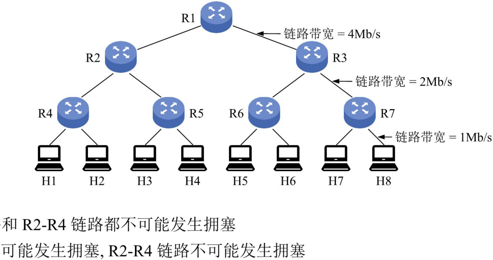
- A. R1-R2 链路和 R2-R4 链路都不可能发生拥塞
- B. R1-R2 链路可能发生拥塞，R2-R4 链路不可能发生拥塞
- C. R1-R2 链路不可能发生拥塞，R2-R4 链路可能发生拥塞
- D. R1-R2 链路和 R2-R4 链路都可能发生拥塞
答案与解析
答案：C
解析：R1-R2 链路上的数据率在任何时候都不可能超过 4Mb/s，因此不可能发生拥塞。对于 R2-R4 链路，考虑这种情况：H5 和 H6 同时以 1Mb/s 的速率向 H1 发送数据，H7 和 H8 同时以 1Mb/s 的速率向 H2 发送数据。此时，R1 右边的所有链路都正常工作，R1-R2 链路也正常工作，都没有超过这些链路的带宽。但是，若这些数据全部都通过 R2 转发，再通过带宽为 2Mb/s 的 R2-R4 链路分别发送给主机 H1 和 H2，则显然是不可能的，于是在 R2 的输入缓存中，进来的数据比出去的要多，数据堆积得越来越多，发送不出去，产生拥塞。
第 153 题单选 · 2010 统考真题
下列网络设备中，能够抑制广播风暴的是（ ）
I. 中继器 II. 集线器 III. 网桥 IV. 路由器
- A. 仅 I 和 II
- B. 仅 III
- C. 仅 III 和 IV
- D. 仅 IV
答案与解析
答案：D
解析：中继器和集线器工作在物理层，既不隔离冲突域也不隔离广播域。为了解决冲突域的问题，人们利用网桥和交换机来分隔各个网段中的通信量，建立多个分离的冲突域，但当网桥和交换机接收到一个未知转发信息的数据帧时，为了保证该帧能被目的节点正确接收，将该帧从所有的端口广播出去，可以看出网桥和交换机的冲突域等于端口个数，广播域为 1。路由器可以隔离广播域和冲突域，要屏蔽数据链路层的广播帧，当然应该是网络层设备路由器。在此题的选项中，路由器是其中最高层的网络设备，其他设备能隔离的，路由器一定能隔离。
第 154 题单选 · 2012 统考真题
下列关于 IP 路由器功能的描述中，正确的是（ ）
I. 运行路由协议，设备路由表
II. 监测到拥塞时，合理丢弃 IP 分组
III. 对收到的 IP 分组头进行差错检验，确保传输的 IP 分组不丢失
IV. 根据收到的 IP 分组的目的 IP 地址，将其转发到合适的输出线路上
- A. 仅 III、IV
- B. 仅 I、II、III
- C. 仅 I、II、IV
- D. I、II、III、IV
答案与解析
答案：C
解析：说法 I 和 IV 显然是路由器的功能。对于说法 II，当路由器监测到拥塞时，可合理丢弃 IP 分组，并向发出该 IP 分组的源主机发送一个源点抑制的 ICMP 报文（最新标准已不再使用）。对于说法 III，路由器对收到的 IP 分组首部进行差错检验，丢弃有差错首部的报文，但不保证 IP 分组不丢失。
第 155 题单选 · 2020 统考真题
下图所示的网络中，冲突域和广播域的个数分别是（ ）
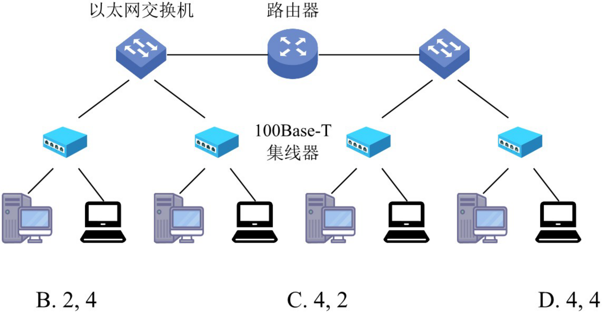
- A. 2, 2
- B. 2, 4
- C. 4, 2
- D. 4, 4
答案与解析
答案：C
解析：网络层设备路由器可以隔离广播域和冲突域；数据链路层设备交换机只能隔离冲突域；物理层设备集线器、中继器既不隔离冲突域也不隔离广播域。路由器把网络分隔为左、右两个广播域。冲突域方面：4 台集线器各自构成 1 个冲突域；交换机的各端口之间相互隔离，交换机与路由器之间为点对点链路（收发双方独占，不会产生冲突），不再计为新的冲突域。因此共有 2 个广播域，4 个冲突域。故选 C。
二、综合题（综合题 19～28 · 接续第 4 章前半部分）
综合题 194.4 路由算法与路由协议
RIP 使用 UDP，OSPF 使用 IP，而 BGP 使用 TCP。这样做有何优点？为什么 RIP 周期性地和邻站交换路由信息而 BGP 却不这样做？
答案与解析
解答：RIP 处于 UDP 的上层，RIP 所接收的路由信息都封装在 UDP 的数据报中；OSPF 的位置位于网络层，因为要交换的信息量较大，所以应使报文的长度尽量短，因此采用 IP；BGP 要在不同的自治系统之间交换路由信息，因为网络环境复杂，需要保证可靠的传输，所以选择 TCP。
内部网关协议主要设法使数据报在一个自治系统中尽可能有效地从源站传送到目的站，在一个自治系统内部并不需要考虑其他方面的策略，然而 BGP 使用的环境却不同。主要有以下三个原因：第一，互联网规模太大，使得自治系统之间的路由选择非常困难；第二，对于自治系统之间的路由选择，要寻找最佳路由是不现实的；第三，自治系统之间的路由选择必须考虑有关策略。因为上述情况，BGP 只能力求寻找一条能够到达目的网络且较好的路由，而并非寻找一条最佳路由，所以 BGP 不需要像 RIP 那样周期性地和邻站交换路由信息。
综合题 204.4 路由算法与路由协议
在某个使用 RIP 的网络中，B 和 C 互为相邻路由器，其中表 1 为 B 的原路由表，表 2 为 C 广播的距离向量报文 <目的网络，距离>。
| 表 1（B 的原路由表） | 表 2（C 的距离向量） | |||
|---|---|---|---|---|
| 目的网络 | 距离 | 下一跳 | 目的网络 | 距离 |
| N1 | 7 | A | N2 | 15 |
| N2 | 2 | C | N3 | 2 |
| N6 | 8 | F | N4 | 8 |
| N8 | 4 | E | N8 | 2 |
| N9 | 4 | D | N7 | 4 |
(1) 试求路由器 B 更新后的路由表并说明主要步骤。
(2) 当路由器 B 收到发往网络 N2 的 IP 分组时，应该做何处理？
答案与解析
解答：
1）根据 RIP 算法，首先将从 C 收到的路由信息的下一跳改为 C，并且将每个距离都加 1，得到下表：
| 目的网络 | 距离 | 下一跳 |
|---|---|---|
| N2 | 16 | C |
| N3 | 3 | C |
| N4 | 9 | C |
| N8 | 3 | C |
| N7 | 5 | C |
将上表与原路由表项进行比较，根据以下规则更新路由表项：① 若目的网络相同，且下一跳路由器相同，则直接更新；② 若是新的目的网络地址，则增加表项；③ 若目的网络相同，且下一跳路由器不同，而距离更短，则更新；④ 否则，无操作。更新后的路由表如下表：
| 目的网络 | 距离 | 下一跳路由器 | 目的网络 | 距离 | 下一跳路由器 |
|---|---|---|---|---|---|
| N1 | 7 | A | N6 | 8 | F |
| N2 | 16 | C | N7 | 5 | C |
| N3 | 3 | C | N8 | 3 | C |
| N4 | 9 | C | N9 | 4 | D |
2）在更新后的路由表中，路由器 B 到 N2 的距离为 16（网络拓扑结构变化导致），这意味着 N2 网络不可达，这时路由器 B 应该丢弃该 IP 分组并向源主机报告目的不可达。
综合题 214.4 路由算法与路由协议
互联网中的一个自治系统的内部结构如下图所示。路由选择协议采用 OSPF 协议时，计算 R6 的关于网络 N1、N2、N3、N4 的路由表（注：端口处的数字指该路由器向该链路转发分组的代价）
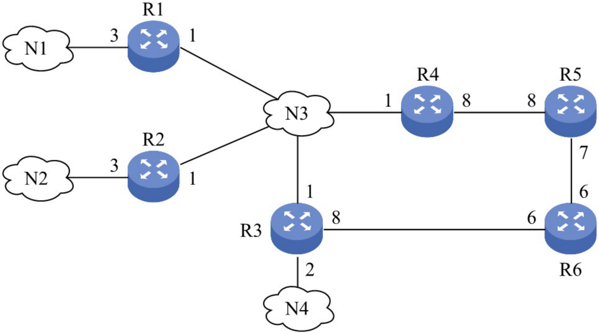
答案与解析
解答：首先，要明白路由器端口旁的数字的含义——路由器向该链路转发分组的代价，即便是同一段链路的两个不同端点的路由器，转发分组的代价也可能不同。其次，要明白一个网络所连接的几个路由器之间转发分组并不需要经过任何其他中间路由器。例如，R6 到网络 N1 经过的路径和代价计算如下：R6 到 R3 经过的代价是 6，R3 到 R1 经过的代价是 1，R1 到网络 N1 经过的代价是 3，所以 R6 到网络 N1 经过的代价是 10。根据 Dijkstra 最短路径算法，加入节点的次序之一为 (R6, R5, R3, N3, R4, R1, R2, N4, N1, N2)，可以得到 R6 的路由表如下表所示。
| 目的网络 | 距离 | 下一跳路由器 | 目的网络 | 距离 | 下一跳路由器 |
|---|---|---|---|---|---|
| N1 | 10 | R3 | N3 | 7 | R3 |
| N2 | 10 | R3 | N4 | 8 | R3 |
综合题 224.4 路由算法与路由协议 · 2013 统考真题
假设 Internet 的两个自治系统构成的网络如下图所示，自治系统 AS1 由路由器 R1 连接两个子网构成；自治系统 AS2 由路由器 R2、R3 互连并连接 3 个子网构成。各子网地址、R2 的接口名、R1 与 R3 的部分接口 IP 地址如下图所示。请回答下列问题：
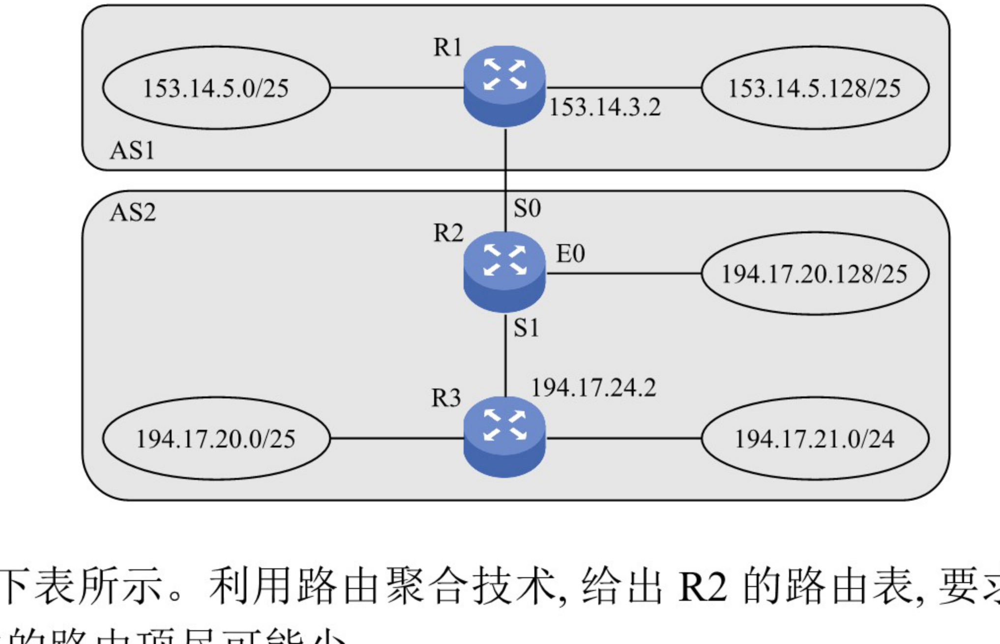
(1) 假设路由表结构为「目的网络 | 下一跳 | 接口」。利用路由聚合技术，给出 R2 的路由表，要求包括到达图中所有子网的路由，且路由表中的路由项尽可能少。
(2) 若 R2 收到一个目的 IP 地址为 194.17.20.200 的 IP 分组，R2 会通过哪个接口转发该 IP 分组？
(3) R1 与 R2 之间利用哪个路由协议交换路由信息？该路由协议的报文被封装到哪个协议的分组中进行传输？
答案与解析
解答：
1）要求 R2 的路由表能到达图中的所有子网，且路由项尽可能少，则应对每个路由接口的子网进行聚合。在 AS1 中，子网 153.14.5.0/25 和子网 153.14.5.128/25 可聚合为子网 153.14.5.0/24；在 AS2 中，子网 194.17.20.0/25 和子网 194.17.21.0/24 可聚合为子网 194.17.20.0/23；子网 194.17.20.128/25 单独连接到 R2 的接口 E0。于是可以得到 R2 的路由表如下：
| 目的网络 | 下一跳 | 接口 |
|---|---|---|
| 153.14.5.0/24 | 153.14.3.2 | S0 |
| 194.17.20.0/23 | 194.17.24.2 | S1 |
| 194.17.20.128/25 | — | E0 |
2）该 IP 分组的目的 IP 地址 194.17.20.200 与路由表中 194.17.20.0/23 和 194.17.20.128/25 两个路由表项均匹配，根据最长匹配原则，R2 将通过 E0 接口转发该 IP 分组。
3）R1 和 R2 属于不同的自治系统，因此应使用边界网关协议（BGP 或 BGP4）交换路由信息；BGP 是应用层协议，它的报文被封装到 TCP 段中进行传输。
综合题 234.4 路由算法与路由协议 · 2014 统考真题
某网络中的路由器运行 OSPF 路由协议，下表是路由器 R1 维护的主要链路状态信息 (LSI)，下图是根据该表及 R1 的接口名构造的网络拓扑。请回答下列问题：
| R1 的 LSI | R2 的 LSI | R3 的 LSI | R4 的 LSI | 备注 | ||
|---|---|---|---|---|---|---|
| Router ID | 10.1.1.1 | 10.1.1.2 | 10.1.1.5 | 10.1.1.6 | 标识路由器的IP地址 | |
| Link1 | ID | 10.1.1.2 | 10.1.1.1 | 10.1.1.6 | 10.1.1.5 | 所连路由器的Router ID |
| IP | 10.1.1.1 | 10.1.1.2 | 10.1.1.5 | 10.1.1.6 | Link1的本地IP地址 | |
| Metric | 3 | 3 | 6 | 6 | Link1的费用 | |
| Link2 | ID | 10.1.1.5 | 10.1.1.6 | 10.1.1.1 | 10.1.1.2 | 所连路由器的Router ID |
| IP | 10.1.1.9 | 10.1.1.13 | 10.1.1.10 | 10.1.1.14 | Link2的本地IP地址 | |
| Metric | 2 | 4 | 2 | 4 | Link2的费用 | |
| Net1 | Prefix | 192.1.1.0/24 | 192.1.6.0/24 | 192.1.5.0/24 | 192.1.7.0/24 | 直连网络Net1的网络前缀 |
| Metric | 1 | 1 | 1 | 1 | 到达直连网络Net1的费用 | |
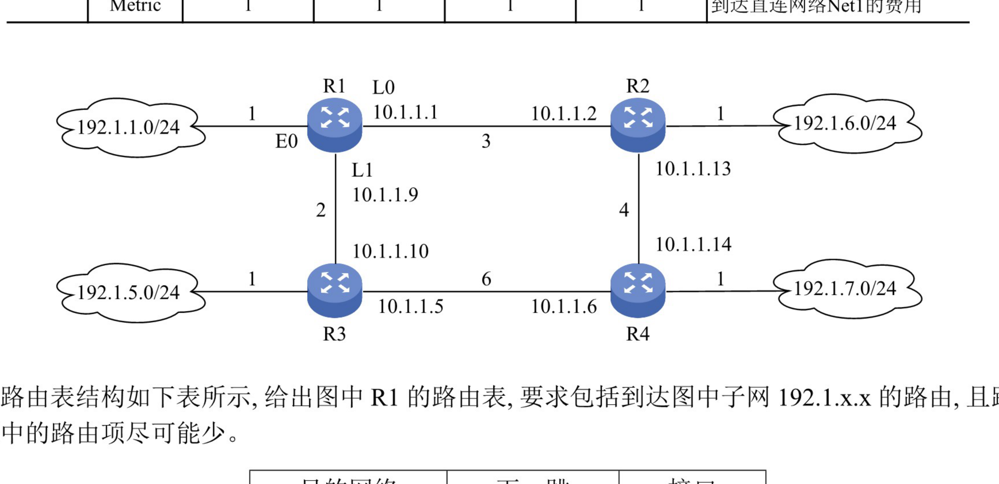
(1) 设路由表结构为「目的网络 | 下一跳 | 接口」，给出图中 R1 的路由表，要求包括到达图中子网 192.1.x.x 的路由，且路由表中的路由项尽可能少。
(2) 当主机 192.1.1.130 向主机 192.1.7.211 发送一个 TTL = 64 的 IP 分组时，R1 通过哪个接口转发该 IP 分组？主机 192.1.7.211 收到的 IP 分组的 TTL 是多少？
(3) 若 R1 增加一条 Metric 为 10 的链路连接 Internet，则表中 R1 的 LSI 需要增加哪些信息？
答案与解析
解答：
1）因为题目要求路由表中的路由项尽可能少，所以对从同一接口转发的目的网络进行路由聚合，可以求出子网 192.1.6.0/24 和 192.1.7.0/24 都是通过接口 L0 转发，因此可将这两个子网聚合为子网 192.1.6.0/23，其他子网照常，可得路由表如下：
| 目的网络 | 下一跳 | 接口 |
|---|---|---|
| 192.1.1.0/24 | — | E0 |
| 192.1.6.0/23 | 10.1.1.2 | L0 |
| 192.1.5.0/24 | 10.1.1.10 | L1 |
2）通过查路由表可知：R1 通过 L0 接口转发该 IP 分组。因为该分组要经过 3 个路由器（R1、R2、R4），所以主机 192.1.7.211 收到的 IP 分组的 TTL = 64 − 3 = 61。
3）互联网（Internet）包括无数的网络集合，不可能在路由表项中一一列出，因此 R1 到互联网的路由只能采用默认路由的方式，默认路由的网络前缀为 0.0.0.0/0。因此，R1 的 LSI 需要增加一条特殊的直连网络，网络前缀 Prefix 为 "0.0.0.0/0"，Metric 为 10。
综合题 244.4 路由算法与路由协议 · 2024 统考真题
网络空间是继陆海空天之后的"第五疆域"，网络技术是网络疆域建设与治理的基础。路由算法与协议是网络核心技术之一，对其准确认知、合理选择与应用，对于网络建设十分重要。假设现有互联网中的 4 个自治系统互连拓扑示意图如下图所示。其中，AS1 运行内部网关协议 RIP；AS3 规模较小，自治系统内任意两个主机间通信，经过路由器数量不超过 15 个；AS4 规模较大，自治系统内任意两个主机间通信，经过路由器数量可能超过 20 个。请回答下列问题。
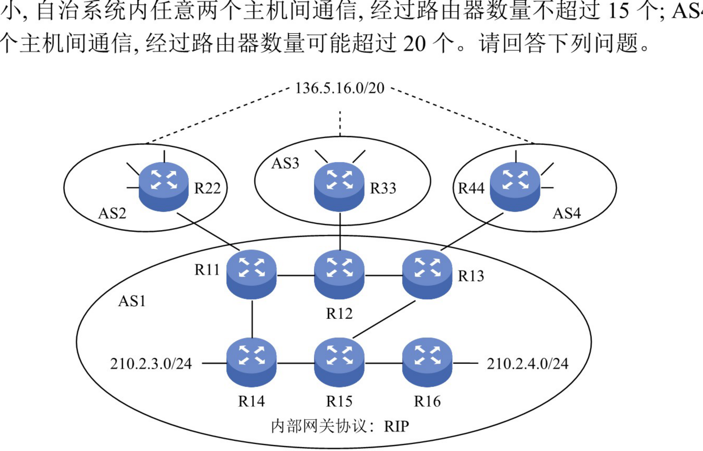
(1) 若仅有 RIP 和 OSPF 内部网关协议供选择，则 AS4 应该选择哪个协议？
(2) 若 AS3 中的某主机向本自治系统内另一主机发送 1 个 IP 分组，为确保该 IP 分组能够被正常接收，则该 IP 分组的初始 TTL 值应该至少设置为多少？
(3) 假设 AS1 中的路由器同一时刻启动，启动后立即构建并交换初始距离向量，之后每隔 30s 交换一次最新的距离向量，则从交换初始距离向量时刻算起，R11~R16 路由器均获得到达网络 210.2.3.0/24 的正确路由，至少需要多长时间？均获得到达网络 210.2.4.0/24 的正确路由，至少需要多长时间？
(4) R44 向 R13 通告到达网络 136.5.16.0/20 路由时，由 BGP 协议哪类会话完成？通过哪个 BGP 报文通告？R13 通过 BGP 协议的哪类会话将该网络可达性信息通告给 R14 和 R15？
(5) 若 R14 和 R15 均收到分别由 R11、R12、R13 通告的到达网络 136.5.16.0/20 的可达性信息如下：
目的网络：136.5.16.0/20 AS 路径：AS2 AS8 AS19 下一跳：R11
目的网络：136.5.16.0/20 AS 路径：AS3 AS7 AS11 AS19 下一跳：R12
目的网络：136.5.16.0/20 AS 路径：AS4 AS10 AS19 下一跳：R13
则在无策略约束情况下，R14 和 R15 更新路由表后，各自路由表中到达网络 136.5.16.0/20 路由的下一跳分别是什么（用路由器名称表示）？
答案与解析
解答：
1）RIP 限制了网络规模，其最大跳数为 15；且 RIP 路由器周期性交换完整的路由表，随着网络规模扩大，开销会显著增大。AS4 中任意两主机间通信经过路由器数量可能超过 20 个，RIP 无法胜任，因此 AS4 应该选择 OSPF 协议。
2）IP 分组每经过一个路由器，TTL 值减 1，当 TTL 减为 0 时被丢弃。依题意，AS3 中任意两主机间通信最多经过 15 个路由器，为确保分组能被正常接收，初始 TTL 值至少应设为 16，这样在经过第 15 个路由器后，TTL 值变为 1，可成功交付。
3）拓扑中 R11-R12-R13 位于上行，R14-R15-R16 位于下行，R11-R14、R12-R15、R13-R16 纵向相连，R14-R15、R15-R16 横向相连。210.2.3.0/24 直连 R14，210.2.4.0/24 直连 R16。距离向量每交换一次，路由信息向外扩散一跳：以 210.2.3.0/24 为例，交换初始向量后（第 1 次交换，30s 时），R11、R15 获得距离 1 的正确路由；第 2 次交换（60s 时），R12、R16 获得正确路由；第 3 次交换（90s 时），距 R14 跳数最多的 R13（经 R16-R15-R14 或 R12-R11-R14 共 3 跳）获得正确路由。故 R11~R16 均获得到达 210.2.3.0/24 的正确路由至少需要 \(3 \times 30\text{s} = 90\text{s}\)。同理，R11 距 210.2.4.0/24（直连 R16）最远为 3 跳，均获得正确路由也至少需要 90s。
4）R44 属于 AS4，R13 属于 AS1，二者分属不同自治系统，因此由 BGP 的 eBGP（外部 BGP）会话完成，通过 UPDATE 报文通告；R13 与 R14、R15 同属 AS1，通过 iBGP（内部 BGP）会话将该网络可达性信息通告给 R14 和 R15。
5）BGP 选路时优先选择 AS 路径最短的路径。经 R11 通告的 AS 路径 AS2 AS8 AS19 与经 R13 通告的 AS 路径 AS4 AS10 AS19 均包含 3 个 AS，最短；经 R12 的 AS 路径含 4 个 AS，较长。因此 R14 和 R15 更新路由表后，到达网络 136.5.16.0/20 的下一跳分别是 R11 和 R13。
综合题 254.5 IP 多播
互联网的多播是怎样实现的？为什么因特网上的多播比以太网上的多播复杂得多？
答案与解析
解答：互联网的多播是靠路由器来实现的，这些路由器必须增加一些能够识别多播的软件。能够运行多播协议的路由器可以是一个单独的路由器，也可以是运行多播软件的普通路由器。互联网上的多播比以太网上的多播复杂得多，因为以太网本身支持广播和多播，而互联网上当前的路由器和许多物理网络都不支持广播和多播。
综合题 264.7 网络层设备
某个单位的网点由 4 个子网组成，结构如下图所示，其中主机 H1、H2、H3 和 H4 的 IP 地址和子网掩码见下表。
| 主机 | IP 地址 | 子网掩码 |
|---|---|---|
| H1 | 202.99.98.18 | 255.255.255.240 |
| H2 | 202.99.98.35 | 255.255.255.240 |
| H3 | 202.99.98.51 | 255.255.255.240 |
| H4 | 202.99.98.66 | 255.255.255.240 |
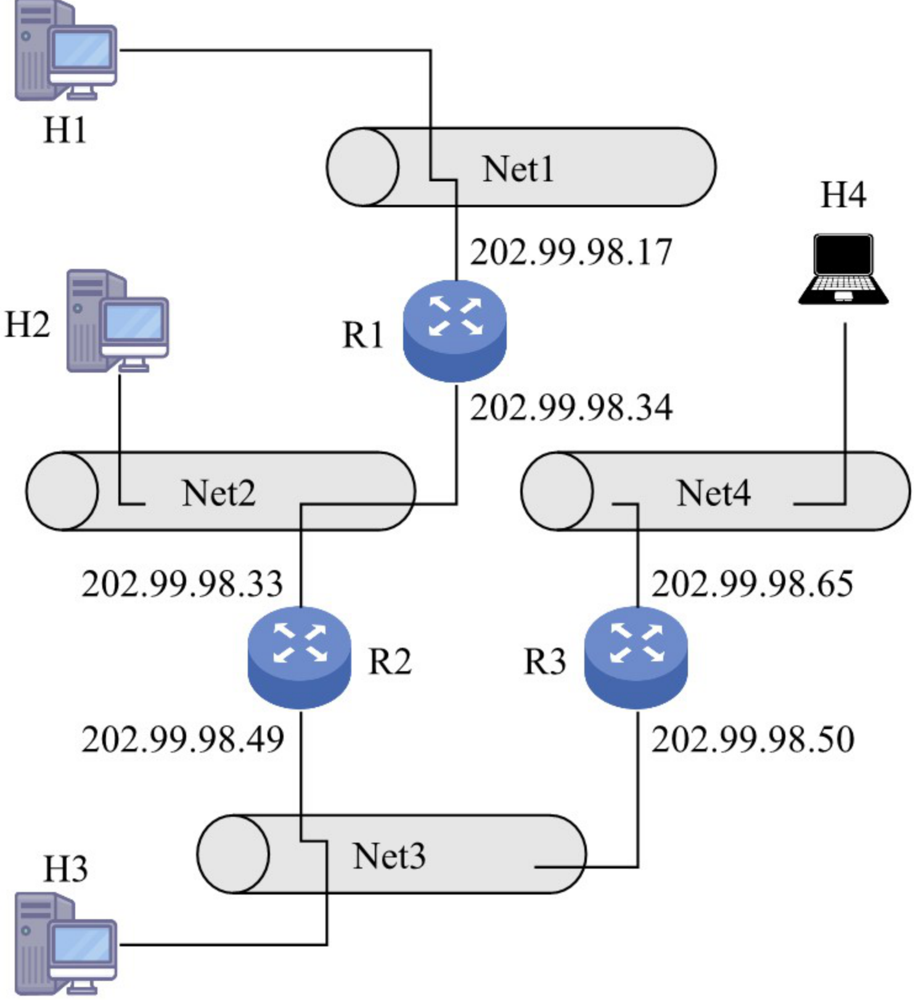
(1) 请写出路由器 R1 到 4 个子网的路由表。
(2) 试描述主机 H1 发送一个 IP 数据报到主机 H2 的过程（包括物理地址解析过程）
答案与解析
解答：
1）将 H1、H2、H3、H4 的 IP 地址分别与它们的子网掩码进行"与"操作，可得到 4 个子网的网络地址，分别为 202.99.98.16、202.99.98.32、202.99.98.48、202.99.98.64，因此路由器 R1 到 4 个子网的路由表见下表。
| 目的网络 | 子网掩码 | 下一跳 |
|---|---|---|
| 202.99.98.16 | 255.255.255.240 | 直接 |
| 202.99.98.32 | 255.255.255.240 | 直接 |
| 202.99.98.48 | 255.255.255.240 | 202.99.98.33 |
| 202.99.98.64 | 255.255.255.240 | 202.99.98.33 |
2）主机 H1 向主机 H2 发送一个 IP 数据报的过程如下：
① 主机 H1 首先构造一个源 IP 地址为 202.99.98.18、目的 IP 地址为 202.99.98.35 的 IP 数据报，主机 H1 先把本子网的子网掩码与 H2 的 IP 地址逐位"与"，所得结果不等于 H1 的网络地址，因此 H1 与 H2 不在同一子网，无法直接交付，然后将该数据报传送给数据链路层。
② 主机 H1 通过 ARP 获得路由器 R1（202.99.98.17）对应的 MAC 地址，并将其作为目的 MAC 地址，将 H1 的 MAC 地址作为源 MAC 地址填入封装有 IP 数据报的帧，然后将该帧发送出去。
③ 路由器 R1 收到该帧后，去掉帧头与帧尾，得到 IP 数据报，然后根据 IP 数据报中的目的 IP 地址（202.99.98.35）去查找路由表，得到下一跳地址为直接相连。
④ 路由器 R1 通过 ARP 得到主机 H2 的 MAC 地址，并将其作为目的 MAC 地址，将 R1 的 MAC 地址作为源 MAC 地址填入封装有 IP 数据报的帧，然后将该帧发送到子网 Net2 上。
⑤ 主机 H2 将收到的帧，去除帧头与帧尾，并最终得到从主机 H1 发来的 IP 数据报。
注意：在②（发出的帧）中，帧的目的 MAC 地址为默认网关的 MAC 地址；在④（接收的帧）中，帧的源 MAC 地址为默认网关的 MAC 地址。
综合题 274.7 网络层设备
试简述路由器的路由功能和转发功能。
答案与解析
解答：转发即当一个分组到达时所采取的动作。在路由器中，每个分组到达时对它进行处理，它在路由表中查找分组所对应的输出线路。通过查得的结果，将分组发送到正确的线路上。
路由算法是网络层软件的一部分，它负责确定一个进来的分组应该被传送到哪条输出线路上。路由算法负责填充和更新路由表，转发功能则根据路由表的内容来确定当每个分组到来时应该采取什么动作（如从哪个端口转发出去）。
综合题 284.7 网络层设备 · 2019 统考真题
某网络拓扑如下图所示，其中 R 为路由器，主机 H1~H4 的 IP 地址配置以及 R 的各接口 IP 地址配置如图中所示。现有若干以太网交换机（无 VLAN 功能）和路由器两类网络互连设备可供选择。请回答下列问题。
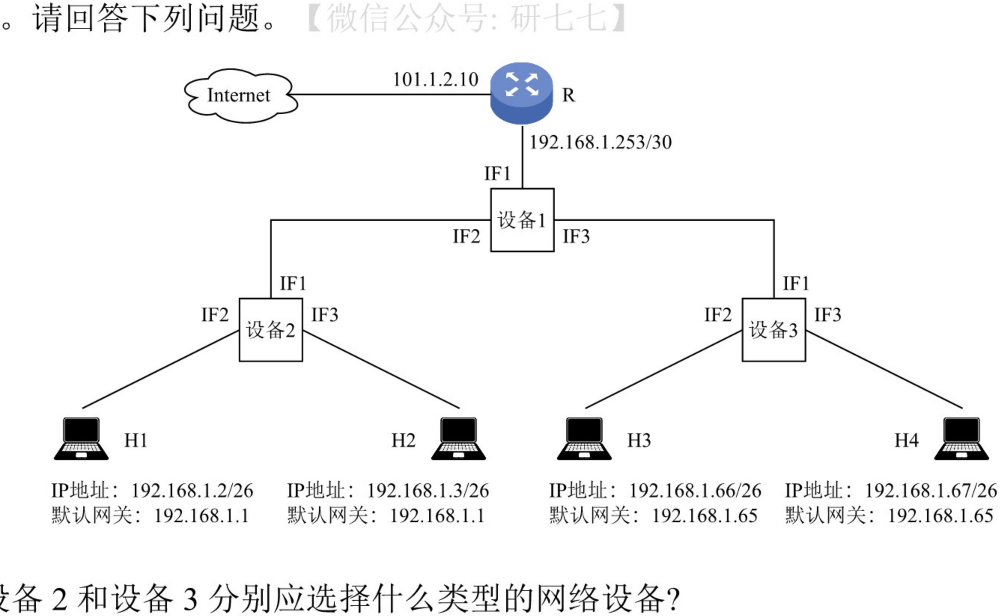
(1) 设备 1、设备 2 和设备 3 分别应选择什么类型的网络设备？
(2) 设备 1、设备 2 和设备 3 中，哪几个设备的接口需要配置 IP 地址？为对应的接口配置正确的 IP 地址。
(3) 为确保主机 H1~H4 能够访问 Internet，R 需要提供什么服务？
(4) 若主机 H3 发送一个目的地址为 192.168.1.127 的 IP 数据报，网络中哪几个主机会接收该数据报？
答案与解析
解答：
1）以太网交换机（无 VLAN 功能）连接的若干 LAN 仍然是一个网络（同一个广播域），路由器可以连接不同的 LAN、不同的 WAN 或把 WAN 和 LAN 互连起来，隔离了广播域。IP 地址 192.168.1.2/26 与 192.168.1.3/26 的网络前缀均为 192.168.1.0，视为 LAN1；IP 地址 192.168.1.66/26 与 192.168.1.67/26 的网络前缀均为 192.168.1.64，视为 LAN2。所以设备 1 为路由器，设备 2、3 为以太网交换机。
2）设备 1 为路由器，其接口应配置 IP 地址。IF1 接口与路由器 R 相连，R 相连接口的 IP 地址为 192.168.1.253/30，253 的二进制表示形式为 11111101，因此 IF1 接口的网络前缀也应为 192.168.1.111111，已分配 192.168.1.253，去除全 0 和全 1，IF1 接口的 IP 地址应为 192.168.1.254。LAN1 的默认网关为 192.168.1.1，LAN2 的默认网关为 192.168.1.65，网关的 IP 地址是具有路由功能的设备的 IP 地址，通常默认网关地址就是路由器中的 LAN 端口地址，设备 1 的 IF2、IF3 接口的 IP 地址分别设置为 192.168.1.1 和 192.168.1.65。
3）私有地址段：C 类 192.168.0.0～192.168.255.255，即 H1～H4 均为私有 IP 地址，若要能够访问 Internet，R 需要提供 NAT 服务，即网络地址转换服务。
4）主机 H3 发送一个目的地址为 192.168.1.127 的 IP 数据报，主机号全为 1，为本网络的广播地址，因为路由器可以隔离广播域，所以只有主机 H4 会接收到数据报。